Lesson 1：矩阵乘法、MAC、FLOPS 与 GEMM/GEMV——计算模式如何决定 AI 芯片设计
现代深度学习加速芯片的规格表中，最醒目的参数通常由一系列峰值算力指标构成：FP16/BF16 TFLOPS、FP8/FP4 PFLOPS，以及专用的矩阵计算单元（如 NVIDIA Tensor Core、Google TPU MXU、AMD Matrix Core）。若剥离芯片营销术语与产品代际差异，现代 AI 芯片之所以走向高度趋同的硬件形态，根源在于深度神经网络底层的数学本质与计算特征。
在 Transformer 架构中，尽管包含注意力机制（Attention）、前馈网络（FFN）、归一化（LayerNorm/RMSNorm）、激活函数（GELU/SwiGLU）与残差连接等多种组件，但其绝对算力消耗具有极高的一致性：超过 95% 的浮点运算均集中在矩阵乘法上。因此，理解 AI 芯片的微架构演进，必须从矩阵计算的底层动作、硬件执行模式以及由矩阵形状驱动的算术密度展开。
一、从线性层到 MAC：矩阵计算的微架构基本动作
以全连接层（Linear Layer）为代表的基础算子可抽象为矩阵乘法：
\[Y = XW\]
其中 $X \in \mathbb{R}^{M \times K}$ 为输入激活矩阵，$W \in \mathbb{R}^{K \times N}$ 为模型权重矩阵，$Y \in \mathbb{R}^{M \times N}$ 为输出矩阵。
若将该矩阵运算拆解至标量维度，输出矩阵中的每一个独立元素 $C_{ij}$ 均通过内积产生：
\[C_{ij} = \sum_{k=1}^K A_{ik} B_{kj} = A_{i1}B_{1j} + A_{i2}B_{2j} + \cdots + A_{iK}B_{Kj}\]
在微架构执行层面，该计算循环由连续的标量乘加操作完成：
# 标量 MAC（乘加）微架构核心循环
for k in range(K):
c += a[k] * b[k] # 硬件 FMA 指令：单时钟周期内完成一次乘法与累加
状态转移表示为：
\[C \leftarrow A \times B + C\]
该动作即为计算机体系结构中最核心的算术原语——乘加运算（Multiply-Accumulate, MAC） 。现代处理器通常在硬件层面实现融合乘加（Fused Multiply-Add, FMA） 指令，允许在单个时钟周期内以单次舍入误差完成一次浮点乘法与一次累加。
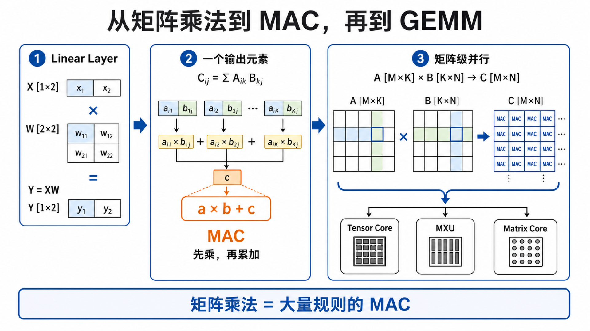
图 1：从线性层矩阵乘法 $Y=XW$ 细分至标量 MAC 原语，并进一步扩展至硬件 GEMM 执行流水线
由于 Transformer 的绝大部分计算量由密集 MAC 构成，芯片设计者的晶体管分配策略发生了根本转变：通用 CPU 通常将大量晶体管预算投入复杂的乱序执行引擎、分支预测器以及多级缓存层次；而 AI 芯片则将大部分芯片面积和功耗预算直接分配给能够并行发射成百上千次 MAC 的专用矩阵计算阵列。在 NVIDIA GPU 中，通用 CUDA Core 仅需负责寻址、激活函数、归一化与残差连接等逐元素操作，海量吞吐则由专门特化的 Tensor Core 承载。
二、算力指标：MAC 与 FLOPS 的换算与理论上限
评估一颗 AI 加速器的计算能力时，工业界通用的衡量标准为 FLOPS（Floating Point Operations Per Second，每秒浮点运算次数） 。
在算术统计标准中，一次完整的 MAC 操作包含一次浮点乘法与一次浮点加法，因此等价于 2 次浮点运算（2 FLOPs）：
\[1\ \text{MAC} = 2\ \text{FLOPs}\]
由此可建立芯片理论峰值算力的量化换算关系：
\[\text{Peak FLOPS} = \text{Clock Frequency} \times \text{Number of Execution Units} \times \frac{\text{FLOPs}}{\text{Cycle}}\]
对应换算示例：
# 理论峰值算力换算（以每秒 500 万亿次乘加操作为例）
peak_macs_per_sec = 500e12 # 500 Tera MACs/s
peak_flops = peak_macs_per_sec * 2 # 1 PFLOPS (10^15 次浮点运算/秒)
标称理论算力表示为：
\[500 \times 10^{12}\ \text{MAC/s} \times 2 = 10^{15}\ \text{FLOPS} = 1\ \text{PFLOPS}\]
然而，芯片厂商宣传的峰值 TFLOPS 或 PFLOPS 仅代表算术逻辑单元（ALU）在理想供数条件下的物理吞吐上限 。在实际工作负载中，高标称算力并不直接兑现为高模型推理或训练吞吐。当芯片内部发生数据饥饿时，大量矩阵执行单元将被迫处于流水线停顿（Stall）状态。
三、访存制约与算术密度：Compute-bound 与 Memory-bound
要量化计算单元与数据供给系统之间的动态平衡，需引入体系结构分析的核心指标——算术密度（Arithmetic Intensity / Operational Intensity） ：
\[I = \frac{\text{Total Operations (FLOPs)}}{\text{Total Memory Traffic (Bytes)}}\]
算术密度反映了程序在特定内存层次（通常指板载高带宽显存 HBM 或片上 SRAM）中每传输 1 个 Byte 数据所能支撑的浮点计算次数。
结合经典 Roofline 模型 ，芯片的硬件能力同样存在一个由物理参数决定的固有平衡拐点——机器平衡度（Machine Balance） ：
\[I_{\text{machine}} = \frac{\text{Peak Compute Throughput (FLOPS)}}{\text{Peak Memory Bandwidth (Bytes/s)}}\]
对应量化计算示例：
# 典型加速卡硬件平衡度 (Machine Balance) 临界点计算示例
peak_flops = 1000e12 # FP16 峰值算力 1000 TFLOPS
memory_bandwidth = 3.35e12 # HBM3 显存带宽 3.35 TB/s
machine_balance = peak_flops / memory_bandwidth
# 临界值约为 298.5 FLOPs/Byte（区分计算受限与访存受限的物理分界线）
计算结果表示为：
\[I_{\text{machine}} \approx \frac{1000 \times 10^{12}}{3.35 \times 10^{12}} \approx 298.5\ \text{FLOPs/Byte}\]
这一数值构成了划分硬件执行受限模式的物理边界：
计算受限（Compute-bound） ：若算法工作负载的算术密度 $I > I_{\text{machine}}$，说明每搬运 1 字节数据即可喂饱计算单元相当长的时间。此时显存带宽足以支撑计算单元满载运行，系统的实际吞吐受限于矩阵计算单元的并发峰值与时钟频率。在此场景下，提升 Tensor Core 规模或引入低位宽格式（如 FP8/FP4 使算力翻倍）能够带来显著的端到端性能增益。内存受限 / 带宽受限（Memory-bound） ：若算法工作负载的算术密度 $I < I_{\text{machine}}$，说明计算单元消耗数据的速率远高于总线搬运速率，硬件流水线频繁陷入等待数据的停顿状态。此时哪怕将计算单元规模翻倍，实际性能也几乎停滞。系统的唯一性能杠杆转变为显存带宽、片上缓存复用率以及数据搬运优化。
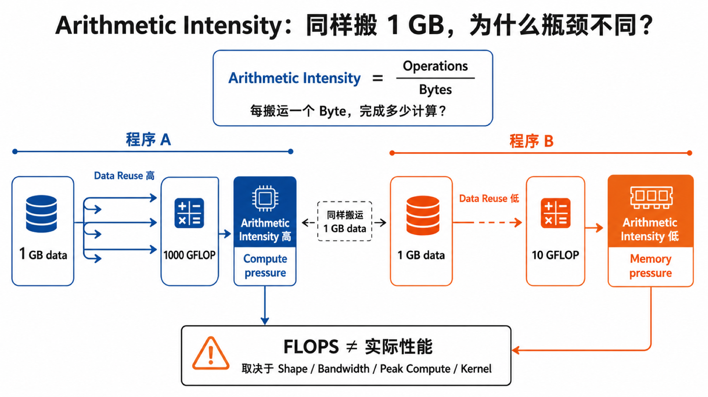
图 2：在相同的数据搬运规模下，高数据复用率带来高算术密度并使系统进入 Compute-bound 区域；缺乏复用则导致系统跌入 Memory-bound 瓶颈
四、矩阵形状（Shape）对数据复用与计算模式的决定性作用
算术密度并非模型的静态固有属性，它高度依赖于具体算子的输入矩阵形状（Shape）。在深度学习计算中，以输入激活与权重的维度组合为分水岭，矩阵运算主要呈现两种截然不同的形态：GEMM 与 GEMV 。
GEMM (批处理 M=2048): [2048 × 4096] × [4096 × 4096] → 权重复用 2048 次，算术密度 ~ 1024 FLOPs/Byte (Compute-bound)
GEMV (单步解码 M=1) : [1 × 4096] × [4096 × 4096] → 权重复用仅 1 次，算术密度 ~ 1.0 FLOP/Byte (Memory-bound)
1. GEMM（通用矩阵乘法）：高维并行与数据复用
当多个输入 token 同时参与前向传播时，输入为二维矩阵 $X \in \mathbb{R}^{M \times K}$，权重为 $W \in \mathbb{R}^{K \times N}$，计算目标为：
\[Y = XW, \quad [M \times K] \times [K \times N] \rightarrow [M \times N]\]
在此计算中，浮点运算总量为：
\[\text{FLOPs} = 2 \times M \times N \times K\]
若不考虑高级片上复用，理想内存读写量为：
\[\text{Bytes} = B \cdot (MK + KN + MN)\]
则 GEMM 的理论算术密度上限为：
\[I_{\text{GEMM}} \approx \frac{2MNK}{B(MK + KN + MN)} = \frac{2}{B \left( \frac{1}{N} + \frac{1}{M} + \frac{1}{K} \right)}\]
当批处理维度 $M$ 与模型隐藏维度 $K, N$ 均处于较大规模（例如 $M, N, K \ge 2048$）时，分母趋向于极小值，算术密度可达数百甚至数千 FLOPs/Byte。
高算术密度的底层根源在于数据复用（Data Reuse） ：权重矩阵 $W$ 中的每一个参数在读入片上缓存后，能够被 $M$ 个并发 token 重复使用 $M$ 次；同理，输入向量也沿着输出维度 $N$ 被重复复用。一次昂贵的显存加载动作被数千次乘加运算充分摊薄，使硬件能够高效工作于 Compute-bound 区域。
2. GEMV（矩阵-向量乘法）：单 token 输入下的复用塌缩
当系统仅处理单个 token（$M = 1$）时，输入退化为行向量 $x \in \mathbb{R}^{1 \times K}$，运算形式转化为：
\[y = xW, \quad [1 \times K] \times [K \times N] \rightarrow [1 \times N]\]
浮点运算总量降为：
\[\text{FLOPs} = 2 \times 1 \times K \times N = 2KN\]
然而，由于权重矩阵 $W$ 拥有 $K \times N$ 个参数，系统仍必须完整加载这 $K \times N$ 个浮点数。此时的访存量为：
\[\text{Bytes} \approx B \cdot (K + KN + N) \approx B \cdot KN \quad (KN \gg K, N)\]
其算术密度急剧衰减至：
\[I_{\text{GEMV}} \approx \frac{2KN}{B \cdot KN} = \frac{2}{B}\ \text{FLOPs/Byte}\]
以 FP16 精度（$B = 2$ 字节）为例，单 token GEMV 的算术密度仅为：
\[I_{\text{GEMV}} \approx \frac{2}{2} = 1\ \text{FLOP/Byte}\]
对比前述主流加速卡的硬件平衡点（$I_{\text{machine}} \approx 298.5\ \text{FLOPs/Byte}$），此时算法算术密度比硬件临界值低了两个数量级。这意味着计算单元在执行极少量的乘加后即耗尽了当前数据，随后不得不陷入漫长等待，显存带宽利用率被瞬间拉满。因此，GEMV 在本质上是极其严重的 Memory-bound 负载。
3. GEMM 的形态陷阱：非充分的计算密集性
工程实践中必须澄清一个常见认知误区：“只要是 GEMM 就必然是 Compute-bound”。
GEMM 能否跨越硬件平衡点，严格取决于矩阵的实际几何形状。在长上下文单请求推理或极端小 Batch 场景下，矩阵可能呈现为 $M \ll K, N$ 的极端扁平形状（如 $M = 4, K = 4096, N = 4096$）。此时：
\[I \approx \frac{2 \times 4 \times 4096 \times 4096}{2 \times (4 \times 4096 + 4096 \times 4096 + 4 \times 4096)} \approx \frac{134,217,728}{33,619,968} \approx 4.0\ \text{FLOPs/Byte}\]
尽管形式上依然是两个矩阵相乘，但因批处理维度过浅导致权重复用率过低，算术密度依然远低于硬件饱和线，底层仍然表现为严重的带宽受限。
五、大模型全周期负载：Training、Prefill 与 Decode
将上述矩阵特征代入现代大语言模型的工作周期中，同一个 Transformer 结构在不同执行阶段展现出了截然不同的硬件负载特征。
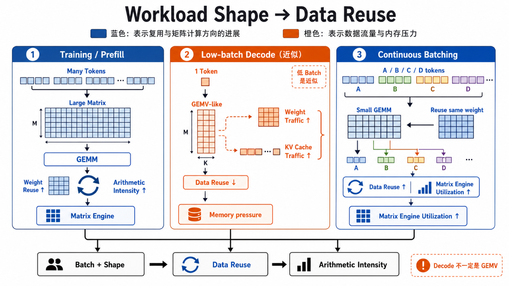
图 3：模型生命周期各阶段的矩阵形态演进——从大 Batch 训练与 Prefill 的规整 GEMM，到自回归 Decode 的 GEMV 塌缩，再到连续批处理对其进行矩阵重塑
1. Training 阶段：大规模规整 GEMM
在大模型预训练与微调中，训练系统通常聚合较大的全局批次（Global Batch Size），并通过张量打包将大量上下文序列拼接。成千上万个 token 构成的激活张量同时穿透前向与反向传播的线性投影层，此时矩阵乘法的三维尺寸 $M, N, K$ 均维持在数千至数万的量级。大规模 GEMM 赋予了系统极高的数据复用深度与算术密度，使得千卡训练集群的算力核心能够高负荷运转于 Compute-bound 区域。
2. 推理 Prefill 阶段：高利用率矩阵计算
在推理服务中，用户发起的 Prompt 往往包含数十至数千个 token。在生成首个输出 token 之前，模型需要对整个 Prompt 序列进行全量编码并构建初始 Key-Value 状态。由于所有输入 token 是预先已知的，Prefill 阶段能够在序列维度天然并行，将完整的上下文矩阵直接与权重矩阵相乘。
因此，Prefill 在宏观计算形态上与 Training 高度相似，属于中大规模 GEMM 范畴。在该阶段，系统主要指标为首字延迟（Time to First Token, TTFT），硬件瓶颈主要取决于计算核心的吞吐速率与算力饱和度。
3. 推理 Decode 阶段：自回归机制引发的 GEMV 塌缩
Prefill 完成后，系统切换至自回归解码（Autoregressive Decoding）阶段。大语言模型的因果特性决定了下一个 token 的生成必须依赖前序全部生成结果作为条件输入：
\[\text{token}_{t+1} = \text{Model}(\text{Context}, \text{token}_1, \dots, \text{token}_t)\]
这种严格的时序因果依赖导致单请求在每一步时间步内只能串行产生单个 token。此时，输入维度坍缩至 $M = 1$。单请求推理中的每一次前向计算，均需将数十亿乃至千亿参数的模型权重从 HBM 中完整搬运一次，却仅服务于 1 个 token 的线性投影。这使得单个请求的 Decode 过程成为典型的 GEMV-like 运算，系统整体性能被牢牢锁定在显存带宽上限之上。
六、系统级重塑：Continuous Batching 的微架构价值
针对单请求 Decode 阶段极低的数据复用率，现代大模型推理服务引擎引入了连续批处理（Continuous Batching / Iteration-level Scheduling） 机制。
在传统的静态批处理中，多个请求必须等待同批内最慢的请求完成后才能结束，造成严重的流水线气泡。而连续批处理在迭代步级别对不同请求进行调度：在每一个生成时间步，引擎将服务池中处于解码状态的 $B_{\text{live}}$ 个并发请求聚合在一起。
此时，输入不再是单向量，而是由 $B_{\text{live}}$ 个活跃 token 堆叠而成的激活矩阵 $X \in \mathbb{R}^{B_{\text{live}} \times K}$。在硬件执行视角下，计算模式被系统调度重塑为：
\[Y = XW, \quad [B_{\text{live}} \times K] \times [K \times N] \rightarrow [B_{\text{live}} \times N]\]
执行拓扑对照如下：
# 传统单请求 Decode 状态 (GEMV)
输入向量 [1 × K] × 权重 [K × N] → 权重复用率 = 1，显存总线满载，算力单元空转饥饿
# Continuous Batching 步级聚合 (Small GEMM)
输入张量 [B_live × K] × 权重 [K × N] → 权重复用率 = B_live 倍，大幅激活矩阵核心
这一动态调度带来了深刻的微架构收益：
GEMV 提升为 Small GEMM ：相同的一份权重参数在从 HBM 读入片上缓存后，能够同时为 $B_{\text{live}}$ 个来自不同用户的 token 展开乘加运算，数据复用率直接放大 $B_{\text{live}}$ 倍。算术密度线性跃升 ：随着并发请求数增加，每字节显存传输对应的浮点计算次数成倍改善，推动系统脱离显存带宽的深水区，逐渐向硬件平衡点靠近。计算单元利用率翻倍 ：Tensor Core 从持续等待总线供数的饥饿状态转入连续流水线作业，推理服务系统的吞吐量（Tokens per Second）呈数量级提升。
从这一角度审视现代推理系统的演进路线，无论是连续批处理、投机解码（Speculative Decoding，通过轻量级草稿模型预测多个候选 token 以增大单步验证矩阵维度），还是多 Token 预测（Multi-Token Prediction, MTP），其底层体系结构逻辑完全一致：设法在时间因果制约的缝隙中，人为构建出批处理维度 $M$，将访存受限的退化 GEMV 强行重塑为能够充分释放矩阵核心性能的高密度 GEMM。
七、架构启示与性能权衡
矩阵运算与访存带宽之间的制约关系，从根本上指引了现代 AI 加速芯片的技术路线分化。硬件架构的设计决策永远建立在目标工作负载的特征之上：
工作负载类型
典型阶段
核心矩阵形态
算术密度特征
核心硬件限制因素
硬件架构优化重心
超大 Batch 训练 Pre-training / SFT
大规模规整 GEMM
极高（通常 $> 500$ FLOPs/Byte）
计算受限（Compute-bound）
堆叠密集 Tensor Core，提供高吞吐低精度（BF16/FP8）支持
推理 Prefill Prompt 编码阶段
中大型 GEMM
较高（$50 \sim 300$ FLOPs/Byte）
偏向计算受限
高并发计算阵列，快速完成首字生成
低 Batch 推理 Decode 单用户 / 低并发交互
GEMV / 极小 GEMM
极低（$1 \sim 10$ FLOPs/Byte）
极度内存受限（Memory-bound）
极高显存带宽（HBM3e/HBM4）、片上大容量 SRAM
高并发推理 Decode 生产级 Serving
Small GEMM
中等（随 Batch Size 线性增加）
带宽向计算过渡
显存带宽与矩阵算力协同匹配，支持动态组批调度
通过上述对比可见，脱离工作负载特征空谈芯片峰值算力毫无工程意义。当面对两款理论规格不同的加速卡时：
加速卡 A ：1000 TFLOPS 峰值算力，3 TB/s 显存带宽（$I_{\text{machine}} \approx 333\ \text{FLOPs/Byte}$）加速卡 B ：800 TFLOPS 峰值算力，5 TB/s 显存带宽（$I_{\text{machine}} = 160\ \text{FLOPs/Byte}$）
在大规模模型预训练场景下，算术密度普遍超越 400 FLOPs/Byte，系统能够完全兑现加速卡 A 额外 25% 的算力优势；然而在低并发、长上下文的交互式推理解码场景中，算术密度往往远低于 100 FLOPs/Byte，加速卡 A 虽有更强算力却会因带宽瓶颈频繁停顿，而加速卡 B 凭借 5 TB/s 的显存带宽反而能交付提升高达 60% 以上的真实端到端生成速度。
八、架构要点小结与工程思考 (Architectural Takeaways & Engineering Exercises)
核心架构要点
计算基座的一致性 ：现代大模型计算负载在底层高度收敛为密集的矩阵乘法。微架构上的一切浮点算力最终表现为连续执行的乘加（MAC）与硬件融合乘加（FMA）指令。标称性能与实际交付的分离 ：标称 FLOPS 仅度量理论算力极限。端到端有效吞吐取决于算法工作负载的算术密度与芯片硬件平衡度（$I_{\text{machine}}$）的相对匹配关系。数据复用是吞吐的杠杆 ：GEMM 依靠行与列的重叠复用将参数访存开销摊薄至接近可忽略；而单 token Decode 的 GEMV 缺乏数据复用，退化为严重的访存受限算子。系统调度可改变硬件瓶颈 ：连续批处理通过在步级别动态堆叠并发 token，实质上是将算法维度的 GEMV 转换为硬件友好的 Small GEMM，从根本上激活矩阵引擎的有效利用率。
工程思考题
思考题 1（量化推导） ：
当 Batch Size $M = 1$（单 token 解码）时，计算该算子的理论算术密度，并推算单次前向计算的理论最短耗时（忽略缓存命中与核函数启动开销）。
若要求该算子进入 Compute-bound 区域，批处理维度 $M$ 至少需要扩展到多少？
参考解析提示 （点击展开 / 折叠）
当 $M=1$ 时，$\text{FLOPs} = 2 \times 4096 \times 4096 \approx 3.355 \times 10^7$；权重数据量约为 $4096 \times 4096 \times 2 = 33.55\ \text{MB}$。算术密度约为 $1.0\ \text{FLOP/Byte}$。受限于 2 TB/s 带宽，单次耗时下限为 $33.55\ \text{MB} / (2 \times 10^6\ \text{MB/s}) \approx 16.78\ \mu s$。
芯片平衡点 $I_{\text{machine}} = 600 \times 10^{12} / (2 \times 10^{12}) = 300\ \text{FLOPs/Byte}$。由 $I_{\text{GEMM}} \approx \frac{2M}{2(1 + M \cdot \frac{K+N}{KN})}$ 求解可推导出进入计算受限所需的最小 $M$ 临界值（数量级通常在数百以上）。
思考题 2（架构权衡） ：
参考解析提示 （点击展开 / 折叠）在单 token 解码处于严重 Memory-bound 的状态下，主模型的计算单元存在大量空闲算力。投机解码同时输入多个草稿 token 进行单步并行验证，其验证过程构成了一个小规整 GEMM。即便部分 token 被拒绝，只要显存加载的主模型权重能够一次性服务多个候选 token，其有效算术密度即成倍提升；由于显存搬运时间占据绝大部分瓶颈，多进行的验证计算并未额外增加系统时间消耗，从而摊薄了固定访存开销，获得端到端加速。
九、后续延伸：访存子系统与数据搬运
本课确立了矩阵乘法与算术密度作为分析 AI 加速系统的第一性原理。然而，即便算法被设计为理论高算术密度的 GEMM，矩阵乘法的执行仍然依赖于源源不断的数据吞吐。
当矩阵计算核心（如 Tensor Core 或 MXU）能够在几个纳秒内完成上万次浮点乘加时，物理系统面临的更严峻挑战浮出水面：数据存放在哪里？数据搬运需要消耗多少纳焦耳能耗？为什么现代芯片不能直接从全局显存直接供数？
这些问题构成了下一篇的核心主线：Lesson 2：AI 芯片的内存系统——Memory Wall 与 Data Movement
下一课 →
Lesson 2：AI 芯片的内存系统——Memory Wall、存储层级与数据搬运机制
在 Lesson 1 中，我们确立了 AI 芯片体系结构的第一性原理：深度学习与大语言模型的核心计算高度收敛于矩阵乘法，而矩阵乘法的微架构本质是由海量并发乘加（MAC）单元承载的密集浮点吞吐。然而，单纯堆叠矩阵执行单元（如 Tensor Core 或 MXU）并不能保证实际模型性能的线性增长。现代高性能计算芯片普遍面临一个残酷的物理事实：算力单元往往在花费大量时钟周期等待数据的输入。
这一现象揭示了计算系统设计中另一半决定性力量——内存系统与数据搬运（Memory System and Data Movement） 。当微架构具备每秒数千亿次乃至千万亿次浮点运算能力时，系统的端到端吞吐瓶颈迅速从“计算速度有多快”迁移为“数据能否以匹配的速率持续喂饱计算单元”。
一、内存墙（Memory Wall）的物理本质与系统代价
自 1980 年代以来，半导体工艺遵循摩尔定律与 Dennard 缩放定律持续推进，处理器浮点算力以年均约 55% 的速率飞速增长；然而受限于物理引脚密度、电容充放电延迟以及片外总线功耗，动态随机存取内存（DRAM）的访问带宽年均增长率仅为约 25%，访问时延的改善更是每年不足 10%。算力与访存能力之间的增长速率失配日积月累，形成了现代计算机体系结构中著名的内存墙（Memory Wall） 。
算力增长速率 (FLOPS) : ████████████████████ ~55%/年
内存带宽增长速率 (Bandwidth): ████████ ~25%/年
内存时延降低速率 (Latency) : █ ~10%/年
在大模型时代，这一物理矛盾被进一步激化。首先，大语言模型的参数量动辄数千亿，仅模型权重与前向中间激活就需要数十至数百 GB 的高速存储空间；其次，数据搬运所付出的能耗代价已经远远超越了算术逻辑运算本身。
在现代先进工艺制程下，执行一次 16 位浮点加法或乘法所消耗的能量通常在 0.1 到 1 皮焦耳（pJ）量级；而通过总线从片外全局内存（如 HBM）搬运一个相同位宽的数据到片上寄存器，所消耗的能耗高达 100 到 1000 pJ。
执行 1 次 FP16 MAC 算术运算 : ~ 1 pJ 能耗
从片外 HBM 搬运 1 个 FP16 数值: ~ 200 - 500 pJ 能耗 (相差 200~500 倍)
这意味着，在一次访存操作中，系统消耗的能量几乎可以支撑数百次浮点乘加。如果算法工作负载缺乏数据复用，频繁触发片外访存，整个芯片的功耗预算将被数据搬运吞噬殆尽，计算单元将不可避免地陷入长期停顿（Pipeline Stall）。
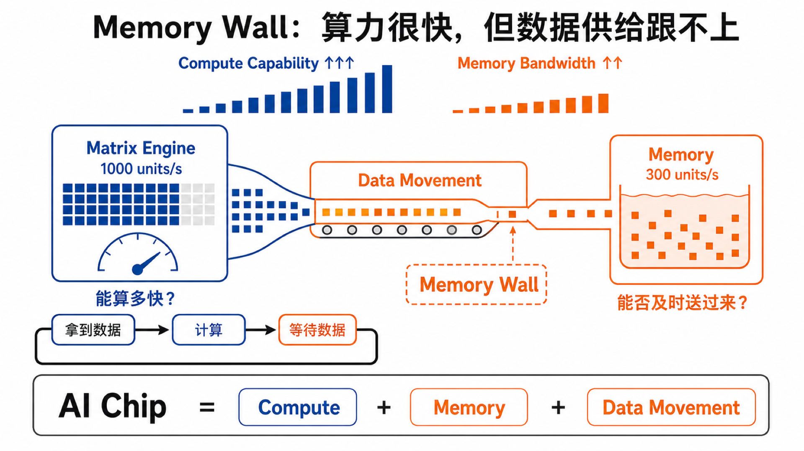
图 1：内存墙的物理制约机制——当内存带宽与数据供给速率无法匹配矩阵引擎的消费能力时，数据搬运延迟将直接把峰值理论算力转化为计算单元的空转等待
二、时延（Latency）与带宽（Bandwidth）的微架构界定
在分析 AI 芯片的访存瓶颈时，必须严格区分两个常被混淆的核心指标：时延（Latency） 与 带宽（Bandwidth） 。
访存时延（Memory Latency） ：指处理器发出数据读取指令到首个目标数据返回至寄存器所需的绝对时间间隔，通常以纳秒（ns）或时钟周期（Clock Cycles）衡量。时延决定了单个串行任务在等待依赖数据时必须停顿的时间上限。访存带宽（Memory Bandwidth） ：指数据总线在单位时间内能够持续搬运的数据总量，通常以 GB/s 或 TB/s 为单位。带宽决定了系统并行消费和吞吐大规模张量数据的物理速率。
Latency (时延): 请求发出到首字节就绪的时长 (决定单线程等待停顿时间，单位: ns / Cycles)
Bandwidth(带宽): 数据总线单位时间内持续传输的数据量 (决定并发数据流总吞吐，单位: GB/s / TB/s)
对于通用 CPU 而言，其执行的程序充斥着分支预测、指针寻址与不规则访存，这类任务通常由浅批次（Low-batch）甚至单线程串行驱动，对访存时延极其敏感。一旦发生 Cache Miss，流水线便立即停顿。
与之相反，AI 芯片的核心负载绝大多数表现为高维张量变换与规则步长的矩阵乘法。由于计算逻辑规整且并发度极高，硬件设计者能够利用成千上万个线程的交替执行来掩盖单次访存的时延。因此，现代 AI 芯片更加关注极限总线带宽 ——只要内存能够以持续稳定的高吞吐将数据推入芯片内部，高并发的执行流水线便能够维持饱和。
三、存储层级金字塔（Memory Hierarchy）
既然高速存储如此关键，一个自然的工程追问是：为什么不在整张芯片上全部采用最快速的存储器？
答案在于硅片物理特性的基本工程权衡：速度、容量、芯片面积与功耗不可兼得 。离计算核心越近的存储介质，单 bit 所占用的晶体管面积越大、制造成本越高、静态漏电功耗越显著。为了在有限的成本和芯片面积约束下兼顾海量存储容量与极高访问速度，体系结构采用了经典的存储层级金字塔（Memory Hierarchy） 设计。
▲ [ Register File ] 容量: 几十 MB | 带宽: 数十 TB/s | 时延: ~1 周期
╱ ╲ [ Shared / SRAM ] 容量: 几十 MB | 带宽: 10~20 TB/s| 时延: 几~十几 周期
╱ ╲ [ L2 Cache ] 容量: 几十~百 MB | 带宽: 5~10 TB/s | 时延: 数十 周期
╱ ╲ [ HBM3e / DRAM ] 容量: 几十~百 GB | 带宽: 2~8 TB/s | 时延: 数百 周期
╱_______╲ [ Host Memory / SSD ] 容量: 数百 GB~TB | 带宽: 百 GB/s | 时延: 数千 周期
以现代高性能 AI GPU（如 NVIDIA Hopper / Blackwell 架构）为例，存储层级自顶向下分为四个核心层级：
寄存器文件（Register File） ：集成于流式多处理器（SM）内部，直接连接 ALU 运算器。单周期访问，容量极其有限（单个 GPU 物理总计仅数十 MB），但聚合带宽高达数十 TB/s。片上 SRAM / 共享内存（Shared Memory / L1 Cache） ：由硬件计算单元共享的高速片上静态存储器，延迟仅数个到十几个时钟周期，带宽可达十几 TB/s。在大模型算子开发中，这是程序员通过软件显式管理分块缓存的核心工作区。片上全局二级缓存（L2 Cache） ：跨所有计算核心共享的大容量缓存（通常为几十到上百 MB），用于自动捕捉时间与空间局部性，过滤对片外显存的重复读取。片外高带宽显存（HBM, High Bandwidth Memory） ：作为芯片的主存，通过 2.5D 硅中介层（Silicon Interposer）与 GPU 裸片（Die）进行高密度立体封装。现代 HBM3e 可交付超过 140 GB 的容量与高达 8 TB/s 的峰值带宽，承担存放模型全量参数、优化器状态与 KV Cache 的主要职责。
# 典型先进 AI 加速卡存储层级特性量化对照
hierarchy_specs = {
"Registers" : {"capacity": "~30 MB", "bandwidth": ">30 TB/s", "latency": "1 cycle"},
"Shared/L1" : {"capacity": "~50 MB", "bandwidth": "~15 TB/s", "latency": "~20 cycles"},
"L2 Cache" : {"capacity": "~50 MB", "bandwidth": "~6 TB/s", "latency": "~100 cycles"},
"HBM3" : {"capacity": "80-144 GB","bandwidth": "3.35 TB/s","latency": "200-400 cycles"}
}
四、分块计算（Tiling）与片上数据复用（Data Reuse）
在深度学习计算中，大模型的矩阵维度动辄达到数千至数万（如 $M, N, K = 4096$）。如此庞大的矩阵无法直接塞入容量仅数十 MB 的片上 SRAM 中。如果每次执行乘加时都直接从片外 HBM 读写数值，系统吞吐将立即被 HBM 带宽锁死。
解决这一矛盾的关键架构策略是分块计算（Tiling） ，其本质是通过重塑数据流，将算法的时间局部性（Temporal Locality） 转化为片上数据复用（Data Reuse） 。
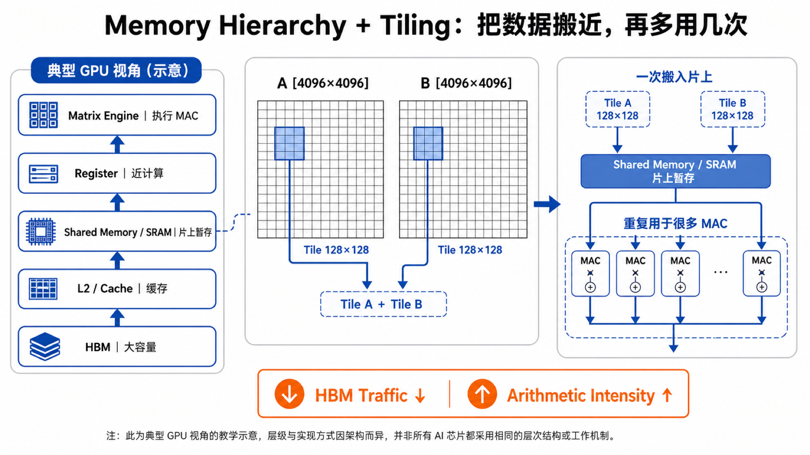
图 2：存储层级与分块计算（Tiling）协同机制——大矩阵被切分为适合片上 SRAM 尺度的 Tile 子块，通过片上高速复用将昂贵的片外 HBM 访存次数压缩数个数量级
1. 矩阵乘法分块的微架构推导
考虑通用矩阵乘法 $C = A \times B$，其中 $A \in \mathbb{R}^{M \times K}, B \in \mathbb{R}^{K \times N}, C \in \mathbb{R}^{M \times N}$。
若不进行分块，直接按标量内积逐元素计算输出，计算每个输出元素 $C_{ij}$ 均需从 HBM 加载 $A$ 的第 $i$ 行与 $B$ 的第 $j$ 列，总访存量高达：
\[\text{Traffic}_{\text{naive}} = 2 \times M \times N \times K \times \text{sizeof(Type)}\]
而在分块计算中，硬件将全局大矩阵切分为尺寸为 $T_M \times T_K$ 和 $T_K \times T_N$ 的子矩阵块（Tiles）：
从 HBM 加载尺寸为 $T_M \times T_K$ 的输入块 $A_{\text{tile}}$ 与 $T_K \times T_N$ 的权重块 $B_{\text{tile}}$ 到片上 Shared Memory；
在片上完成子矩阵的外积乘加运算：
\[C_{\text{tile}} \leftarrow A_{\text{tile}} \times B_{\text{tile}} + C_{\text{tile}}\]
沿 $K$ 维度逐步累加，直至完整块计算结束，最后将结果一次性写回片外显存。
此时，从片外 HBM 读取数据的总访问量被显著压缩至：
\[\text{Traffic}_{\text{tiled}} \approx \left( \frac{M \times N \times K}{T_N} + \frac{M \times N \times K}{T_M} \right) \times \text{sizeof(Type)}\]
相较于朴素计算，片外显存的数据搬运量被直接削减了数倍到数十倍：
片外访存压缩比 ≈ min(T_M, T_N)
片上分块尺寸 $T_M, T_N$ 越大，数据在片上被复用的次数就越多，系统向 HBM 索取数据的频次就越低。因此，Tiling 的核心价值绝非仅仅是将矩阵“切小以适应硬件”，而是在硬件物理容量允许的最大边界内，最大化片上数据的复用倍率，进而将算法的算术密度强行推升至硬件平衡点之上 。
五、延迟隐藏与软硬件计算重叠（Compute-Memory Overlap）
即便通过 Tiling 大幅降低了显存访问总量，在分块数据从 HBM 传输至片上 SRAM 的过程中，依然存在数百个周期的物理传输延迟。如果处理器在此期间空闲等待，计算单元的有效利用率依然无法拉满。
现代高性能加速器通过软硬件协同的计算与访存重叠（Compute-Memory Overlap） 来攻克这一难题。
1. 双缓冲机制（Double Buffering / Ping-Pong Buffer）
在软件或编译器层面，通过在片上 Shared Memory 中分配两份对称的缓冲空间（Buffer 0 与 Buffer 1），实现流水线并行：
阶段 0: 从 HBM 加载 Block 0 到 Buffer 0
阶段 1: [计算单元] 消费 Buffer 0 数据 || [DMA/总线] 异步预取 Block 1 到 Buffer 1
阶段 2: [计算单元] 消费 Buffer 1 数据 || [DMA/总线] 异步预取 Block 2 到 Buffer 0
阶段 3: [计算单元] 消费 Buffer 0 数据 || [DMA/总线] 异步预取 Block 3 到 Buffer 1
只要单块数据的片上计算耗时大于等于下一块数据的总线搬运耗时，数据传输的时延便被完全掩盖在计算流之中。
2. 硬件级异步搬运流水：以 TMA 为例
在早期的 GPU 架构中，数据从全局显存搬运到片上共享内存必须经由通用寄存器中转，这意味着搬运数据本身需要消耗通用计算线程与大量的寄存器资源。
在以 NVIDIA Hopper 为代表的现代架构中，硬件直接引入了专用的张量存储加速器（TMA, Tensor Memory Accelerator） 与异步事务屏障（Asynchronous Transaction Barrier）：
TMA 拥有独立的硬件地址生成与拷贝引擎，能够直接在全局显存与片上 Shared Memory 之间以 1D–5D 多维张量切片形式传输数据；
这一过程完全脱离 CUDA 核心线程与寄存器，主计算线程仅需发射一条异步拷贝指令即可继续执行后续数学计算，由硬件异步屏障在数据到达时自动解除同步依赖。
# 异步计算与访存重叠的硬件流水线状态抽象
def pipeline_step(current_tile, next_tile):
async_tma_load(target=shared_memory[next_tile.buffer_id], src=hbm[next_tile.addr])
tensor_core_mma(a=shared_memory[current_tile.buffer_id].a,
b=shared_memory[current_tile.buffer_id].b,
acc=accumulator)
wait_for_barrier() # 硬件级零开销同步
六、异构芯片的存储体系设计哲学对比
面对内存墙与数据搬运的物理挑战，不同体系结构的设计者给出了截然不同的架构押注与工程妥协：
芯片架构路线
代表产品
核心存储拓扑
数据调度机制
主要优势
核心工程代价 (Trade-off)
通用 GPU 路线 NVIDIA H100/B200
大容量 HBM + 多级 Cache + 局部 Shared Memory
软硬件结合：硬件动态 Cache 与线程调度 + 显式 TMA 异步流水
通用性极强，开发者生态成熟，支持海量模型拓扑
硬件控制逻辑复杂，Cache 一致性协议与动态调度带来额外面积和能耗开销
静态数据流 TPU Google TPU v4/v5p
HBM + 大容量专用片上向量内存（VMEM）
编译器强规划：XLA 静态确定数据布局与 DMA 搬运流水
剥离动态调度硬件，极致优化矩阵数据复用与能效
极度依赖编译器静态推导，对动态维度与非规则控制流适应力差
Scratchpad DSA AWS Trainium / Inferentia
HBM + 软件显式控制的片上 Scratchpad 缓冲
纯软件显式控制：Neuron 编译器直接调度片上 Buffer
硬件架构规整，规避复杂的片上多级 Cache 开销
软件工具链复杂度极高，算子调优门槛陡峭
晶圆级巨型 SRAM Cerebras WSE-2/WSE-3
彻底抛弃板载 HBM，整片晶圆集成 44GB 纯片上 SRAM
极近距离片上互联：每个核心配备专属 SRAM，单芯片内完成循环
交付 21 PB/s 极端片上带宽与超低访存延迟，完全消灭片外通信墙
晶圆良率挑战极大，成本极高，单芯片内存容量无法独立装载百亿参数模型
确定性纯 SRAM Groq LPU (TSP)
彻底摒弃 HBM，单芯片集成 230MB 纯片上高速 SRAM
编译器时间表精准确定每个时钟周期数据的空间流动
单 token 推理延迟极低，执行行为完全确定，无任何 Cache Miss 停顿
容量极其有限，运行大模型需数十上百颗芯片组网，多卡通信开销剧增
通过上述对比可见，芯片体系结构从来不存在绝对完美的“终极设计”。每一个架构决策本质上都是在容量、带宽、时延、面积、功耗与软件可编程性之间进行的权衡取舍。
七、内存效率评估模型与算子融合（Operator Fusion）
评估一颗 AI 加速器的内存子系统效率，不能仅看参数表上的“HBM 峰值带宽”，而应当建立四维综合评估模型 ：
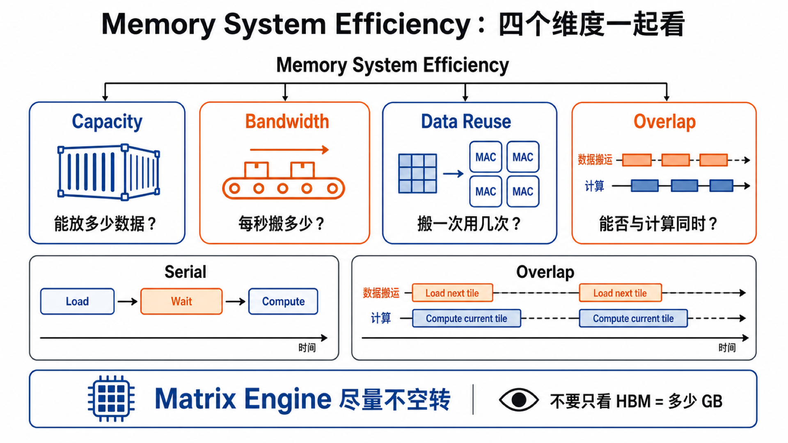
图 3：评估内存子系统真实有效效率的四个关键维度——容量（Capacity）、有效带宽（Bandwidth）、复用倍率（Reuse）与重叠度（Overlap）
容量（Capacity） ：决定模型权重、KV Cache 与中间激活能否装入高速显存，定义了单卡或集群所能承载的最大模型规模边界。有效带宽（Effective Bandwidth） ：衡量总线在实际复杂访存模式下的带宽利用率（Bus Saturation）。非连续地址跳跃读取会大幅降低总线有效传输效率。数据复用（Data Reuse） ：衡量片上分块算法对显存读取的摊薄程度，决定算术密度的实际提升倍率。重叠度（Overlap Degree） ：度量访存延迟在实际流水线中被计算有效掩盖的百分比。未被重叠的显存传输将直接转化为硬件停顿。
算子融合（Operator Fusion）的微架构本质
在软件栈优化中，算子融合（Operator Fusion） 是解决数据搬运瓶颈的最强工具之一。
以 Transformer 中常见的一连串逐元素操作为例：
\[\text{Output} = \text{LayerNorm}(\text{GELU}(X \cdot W + \text{Bias}) + \text{Residual})\]
若未进行融合，编译器将依次执行加偏置、GELU 激活、残差加法与层归一化四个独立算子。由于每个算子都需要从 HBM 读取输入张量，并将计算结果重新写回 HBM，中间产生的大量中间张量构成了巨大的无意义数据搬运：
未融合算子执行流:
Kernel 1 (Add Bias) : 从 HBM 读激活与偏置 → 计算 → 写回 HBM
Kernel 2 (GELU) : 从 HBM 读中间结果 → 计算 → 写回 HBM
Kernel 3 (Residual) : 从 HBM 读前序激活 → 计算 → 写回 HBM
Kernel 4 (LayerNorm): 从 HBM 读残差求和结果 → 计算 → 最终结果写回 HBM
当编译器执行算子融合后，上述所有操作被合并至单个核心算子（Fused Kernel）内部执行：
融合后算子执行流:
Fused Kernel: 从 HBM 读取一次初始输入 → 全部驻留片上寄存器/Shared Memory连续计算 → 最终结果一次写回 HBM
融合彻底消除了中间张量往返 HBM 的 3 次完整读写，将该子图从严重的 Memory-bound 带宽泥潭中彻底解放。这再次证明：现代 AI 系统性能优化的第一驱动力，永远是在想方设法减少物理总线上的数字搬运。
八、架构要点小结与工程思考 (Architectural Takeaways & Engineering Exercises)
核心架构要点
数据搬运是能耗与时延的主导者 ：执行浮点算术计算的物理代价微乎其微，在不同存储层级间搬运数据才是限制性能与消耗功耗的核心瓶颈。时延与带宽的分离 ：AI 加速器通过极高密度的并发线程机制隐藏访存时延，系统的性能天花板主要由持续显存带宽与片上复用率共同决定。分块 Tiling 的数学逻辑 ：Tiling 的核心价值在于利用局部性在片上高速存储中实现高倍率的数据复用，大幅减少片外总线传输总量。架构设计即是权衡 ：从 GPU 的通用分层缓存、TPU 的静态脉动数据流，到 Cerebras/Groq 的纯片上 SRAM，各加速芯片的技术路线代表了对存储层级权衡的不同解答。
工程思考题
思考题 1（量化推导：分块 Tiling 的访存压降） ：
若完全不采用分块技术（每次从 HBM 重新读取所需的行与列标量数据），计算所需从 HBM 搬运的总字节数，并估算仅访存所需的最短耗时。
若采用尺寸为 $T_M = 128, T_N = 128, T_K = 64$ 的分块方案缓存至片上 Shared Memory，计算此时所需的 HBM 访存总量及理论带宽传输耗时，并求出 Tiling 带来的有效访存压缩比。
参考解析提示 （点击展开 / 折叠）
无分块场景 ：朴素内积下，计算 $4096 \times 4096$ 个元素，每个元素需要访问 $A$ 的一行（$4096$ 个数）和 $B$ 的一列（$4096$ 个数），总读入次数为 $2 \times 4096 \times 4096 \times 4096$ 个数值，访存字节量为 $2 \times 4096^3 \times 2\ \text{B} \approx 274.88\ \text{GB}$。以 3 TB/s 带宽计算，纯数据搬运时间约为 $91.6\ \text{ms}$。Tiling 分块场景 ：沿 $K$ 轴切分为 $4096 / 64 = 64$ 次累加阶段。每个阶段需加载 $A$ 的分块列与 $B$ 的分块行，总加载量为 $64 \times (4096 \times 4096 \times 2 + 4096 \times 4096 \times 2) \approx 4.29\ \text{GB}$（加上输出写回 $4096 \times 4096 \times 2 \approx 0.033\ \text{GB}$）。总访存量缩减至约 $4.32\ \text{GB}$，在 3 TB/s 带宽下理论耗时降至 $1.44\ \text{ms}$。访存压缩比 ：$274.88\ \text{GB} / 4.32\ \text{GB} \approx 63.6$ 倍。
思考题 2（架构权衡：纯 SRAM 方案在大模型时代的边界） ：
参考解析提示 （点击展开 / 折叠）
容量维度受限 ：一个 70B（700 亿参数）模型以 FP16 精度仅静态权重即需 140 GB，若加上 Adam 优化器状态（每个参数 12 字节）与梯度，训练状态高达近 1 TB。单个 Groq 芯片仅有 230 MB SRAM，单个 Cerebras 晶圆仅有 44 GB SRAM。单芯片甚至单晶圆均无法独立容纳模型训练状态，必须通过海量芯片级联。互联墙取代内存墙 ：当容量受限导致模型必须被切分到上千颗单芯片时，原来片内的 Memory-bound 问题被转化为了跨芯片网络的 Communication-bound 难题。片间铜缆与光纤互联的带宽（通常百 GB/s 量级）远低于片内 SRAM 带宽，系统的实际瓶颈从芯片内部的“内存墙”转移到了分布式集群的“网络通信墙”。
九、后续延伸：阶段负载差异与状态缓存
本课剖析了芯片存储金字塔、内存墙物理制约以及 Tiling 和数据复用的微架构机理。
然而，在真实的大语言模型工作流中，数据复用并非静态不变的参数。同一个 Transformer 模型，在训练、Prompt 编码与逐字生成阶段，其数据的复用深度截然不同；更重要的是，自回归解码中诞生的关键状态——KV Cache ，在运行期持续动态膨胀，兼具巨大的显存容量消耗与严酷的访存带宽压迫。
这些机制构成了下一篇的核心探讨：Lesson 3：Training、Prefill、Decode 与 KV Cache——为什么同一个 Transformer 会产生完全不同的硬件负载
← 上一课 下一课 →
Lesson 3：Training、Prefill、Decode 与 KV Cache——为什么同一个 Transformer 会产生完全不同的硬件负载
在计算机体系结构分析中，评估一颗芯片的利用率不能脱离具体的软件执行阶段。许多工程师在初涉大模型基础设施时常常产生困惑：为什么参数量完全相同的同一个 Transformer 模型（例如 LLaMA-70B），在分布式预训练集群上能够跑满 Tensor Core 算力、达到极高的 MFU（Model FLOPs Utilization），而在交互式在线推理服务中，算力利用率却可能暴跌至 10%–20%，GPU 呈现严重的显存带宽瓶颈？
答案在于：同一个大语言模型在训练（Training）、推理 Prompt 编码（Prefill）与自回归逐字生成（Decode）三大阶段中，其计算图拓扑、张量几何形态（Tensor Shape）、数据复用深度以及运行期状态完全不同。
本课将深入剖析这三大工作负载阶段的微架构特征，推导状态缓存——KV Cache 的显存增长模型与带宽压迫机理，并揭示现代推理系统如何在计算密集与访存密集之间进行工程博弈。
一、大模型全生命周期的三大运行状态
深度神经网络的生命周期可严格划分为三个阶段：训练（Training） 、推理首字预填充（Prefill） 与 推理自回归解码（Decode） 。
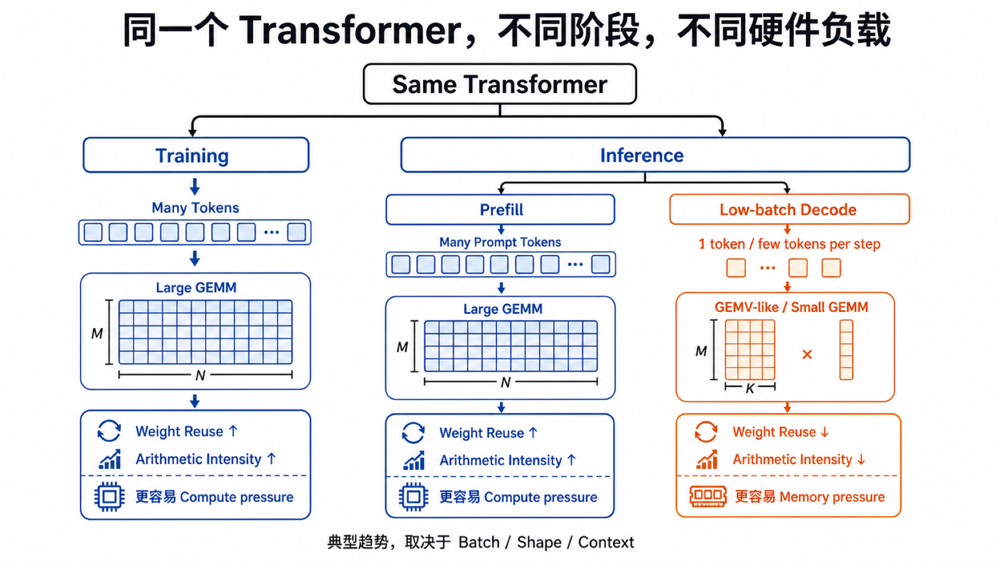
图 1：大语言模型的三大运行阶段——从高算术密度的大规模规整训练，到中大型 GEMM 的 Prompt 预填充，再到单步向量内积驱动的自回归解码
阶段 1: 训练 (Training) → 前向 + 反向 + 优化器更新，超大全局 Batch，大规模规整 GEMM (Compute-bound)
阶段 2: 推理预填充 (Prefill)→ 输入上下文并行全量编码，单请求即可形成中大型 GEMM (Compute-bound)
阶段 3: 推理自回归 (Decode) → 逐 token 串行前向，因果依赖导致单请求退化为 GEMV (极度 Memory-bound)
二、Training 阶段：大矩阵、高复用与计算受限
在模型预训练与全量微调（SFT）中，硬件系统的核心目标是追求极致的计算吞吐量（Tokens per Second）。训练过程由三个紧密耦合的步骤组成：
前向传播（Forward Pass） ：输入序列经过多层 Transformer 产生预测分布并计算 Loss。反向传播（Backward Pass） ：通过链式法则沿反向计算激活值与参数的梯度。由于反向传播同样需要计算激活梯度与权重梯度，其浮点运算量约为前向传播的 2 倍（$2 \times \text{Forward FLOPs}$）。参数更新（Optimizer Step） ：优化器（如 AdamW）读取梯度并更新权重，此步骤包含大量的逐元素矢量操作，并伴随庞大的优化器状态（一阶动量与二阶方差，每个参数各占用 4 字节）。
# 训练阶段单个 Transformer 线性层的浮点运算量分布
# 前向传播 (Y = XW) : 2 * M * N * K FLOPs
# 反向传播激活梯度 (dX = dY * W^T): 2 * M * N * K FLOPs
# 反向传播权重梯度 (dW = X^T * dY): 2 * M * N * K FLOPs
# 线性层总计算量 : 6 * M * N * K FLOPs
在训练场景下，系统通常通过张量并行（TP）、流水线并行（PP）与数据并行（DP）聚合庞大的全局批次（Global Batch Size，常常达到数百万 token）。即便分配至单张芯片，序列维度拼接后的有效批处理维度 $M$ 依然维持在数千乃至上万的量级。
这种规整的超大矩阵乘法赋予了系统极高的时间局部性与空间局部性。权重矩阵在从 HBM 加载至片上 SRAM 后，能够为上万个 token 的前向与反向流水线反复复用，系统的算术密度轻松突破数百 FLOPs/Byte。因此，大规模分布式训练是典型的计算受限（Compute-bound） 负载，能够极其充分地释放 Tensor Core 或 MXU 的标称峰值算力。
三、Prefill 阶段：上下文全量编码的并行优势
当训练好的模型投入在线推理服务时，计算被解构为两个特征截然相反的子阶段：Prefill 与 Decode 。
在 Prefill 阶段，用户向模型输入一段 Prompt（可能包含几十至数万个 token 的指令、文档或对话历史）。在生成首个回答 token 之前，模型必须对整个 Prompt 进行一次完整的全量特征提取。
由于整个 Prompt 的上下文内容是预先完全已知的，系统能够在序列维度天然并行，构建出维度为 $[S_{\text{prompt}} \times D]$ 的输入激活张量：
\[Y_{\text{prefill}} = X_{\text{prompt}} W, \quad [S_{\text{prompt}} \times K] \times [K \times N] \rightarrow [S_{\text{prompt}} \times N]\]
Prompt (例如 2048 tokens) → 构成高维张量 [2048 × 4096] → 乘以权重矩阵 [4096 × 4096]
计算模式: 中大型规整 GEMM，算术密度高，硬件瓶颈为算力饱和度 (Compute-bound)
关键优化指标: 首字时延 (Time to First Token, TTFT)
Prefill 在算子形态上几乎就是小规模的训练前向传播。只要输入 Prompt 序列长度达到一定规模（$S_{\text{prompt}} \ge 512$），其算术密度便足以将系统推向硬件平衡点。此时系统的核心业务度量为首字时延（Time to First Token, TTFT） ，而硬件层面的首要瓶颈在于矩阵计算阵列的吞吐速率与算力饱和度。
四、Decode 阶段：因果依赖引发的 GEMV 塌缩
首字生成完成后，系统立即进入自回归解码（Autoregressive Decoding） 阶段。
因果语言模型的核心生成逻辑由自回归概率分解定义：
\[P(x_{1:T}) = \prod_{t=1}^T P(x_t \mid x_{<t})\]
这种时间维度上的严格因果链，意味着生成第 $t+1$ 个 token 必须以模型自身在时间步 $t$ 生成的 token 作为输入条件。因此，在单请求视角下，生成步骤被物理锁死在严格串行的时间序列中，系统无法跨步并行。
时间步 t=1: 输入 Prompt 生成 token 1
时间步 t=2: 输入 [Prompt + token 1] 生成 token 2
时间步 t=3: 输入 [Prompt + token 1 + token 2] 生成 token 3
...
每一次时间步只向前推进 1 个 token (M = 1)
当 $M = 1$ 时，输入激活张量坍缩为一个细窄的行向量 $[1 \times K]$。全连接层的计算在微架构执行层面瞬间退化为矩阵-向量乘法（GEMV） ：
\[y = xW, \quad [1 \times K] \times [K \times N] \rightarrow [1 \times N]\]
在此状态下，生成每一个独立的 token，系统都必须将整个模型全量参数（例如 70B 模型在 FP16 下约为 140 GB）从片外 HBM 完整加载进芯片一次，却仅仅换取了每个参数与 1 个标量值的乘加运算。
此时算法的算术密度骤降至极限低点（$\approx 1.0\ \text{FLOP/Byte}$），比现代加速卡的硬件平衡点低了数百倍。硬件计算核心在此期间绝大部分时间处于空闲饥饿状态，芯片的有效性能完全被 HBM 的物理读取带宽死死锁死。在单批次解码下，决定生成速度（Tokens per Second per User）的唯一硬件变量就是显存带宽 。
五、KV Cache：避免重复计算的状态资产与代价
在自回归解码中，除了权重搬运的 GEMV 瓶颈外，多头自注意力机制（Multi-Head Attention）引入了另一重决定性的运行时开销——KV Cache（键值缓存） 。
1. 为什么必须引入 KV Cache？
在标准注意力机制中，第 $t$ 步的输出依赖于当前 Query 与前序全部历史 token 的 Key 进行内积，随后对 Value 向量进行加权求和：
\[\text{Attention}(Q_t, K_{1:t}, V_{1:t}) = \text{Softmax}\left( \frac{Q_t K_{1:t}^T}{\sqrt{d_k}} \right) V_{1:t}\]
注意到，对于所有已经生成的前序历史 token（$1 \le i < t$），其对应的 Key 向量 $K_i$ 与 Value 向量 $V_i$ 仅取决于前序 token 的表征与固定的投影权重，在后续生成步中数值完全恒定不变 。
若不缓存历史状态（Naive Autoregressive），每生成一个新 token，系统都必须将包含前序所有 token 的长序列重新穿透全部网络层重算一次。随着生成序列长度 $T$ 增长，总计算量呈平方级膨胀（$O(T^2)$），这在工程上是不可承受的。
因此，现代推理系统在 Prefill 阶段与每一次 Decode 步骤中，都会将计算出的历史 Key 与 Value 向量保存在高速显存中，构筑为 KV Cache 。在后续步骤中，系统仅需对新生成的单个 token 计算 $Q_t, K_t, V_t$，然后从显存中直接加载历史 $K_{1:t-1}$ 与 $V_{1:t-1}$ 拼接后完成注意力计算，从而将端到端计算复杂度大幅压降至 $O(T)$。
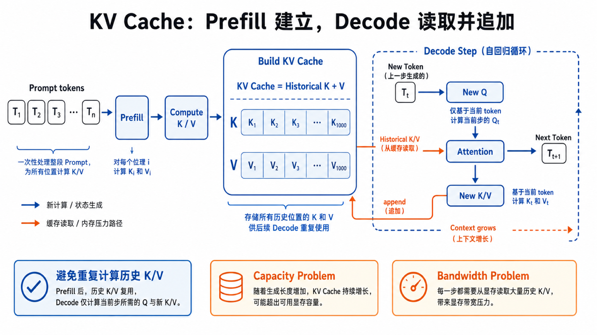
图 2：KV Cache 的生命周期与显存演进——Prefill 阶段全量构建初始上下文缓存，自回归 Decode 阶段步级追加单 token 向量，显存容量随时间步线性膨胀
2. KV Cache 的显存容量爆炸模型
尽管 KV Cache 节省了海量冗余计算，但它在物理显存中引入了随时间步单调递增的巨大状态沉淀。
设模型具有 $L$ 个网络层，并发批次为 $B$，当前上下文序列长度为 $S$，Key/Value 的注意力头数为 $H_{\text{kv}}$，每个注意力头的维度为 $D_{\text{head}}$，数据位宽占用 $Bytes$ 字节（如 FP16 为 2 字节，FP8 为 1 字节）。则整个系统占用的 KV Cache 物理显存量可严格量化为：
\[\text{Memory}{\text{KV}} = 2 \times B \times S \times L \times H {\text{kv}} \times D_{\text{head}} \times Bytes\]
其中常数系数 $2$ 代表同时存储 Key 与 Value 两个张量。
# 典型 70B 模型 (如 LLaMA-70B，采用 GQA 架构) 的 KV Cache 显存占用推算
def compute_kv_cache_bytes(batch_size, seq_len, layers=80, h_kv=8, d_head=128, bytes_per_elem=2):
return 2 * batch_size * seq_len * layers * h_kv * d_head * bytes_per_elem
# 场景 1: 单请求，短上下文 (B=1, S=2048, FP16)
# 占用显存 ≈ 67 MB (极小，可忽略)
# 场景 2: 高并发生产服务，长上下文 (B=64, S=8192, FP16)
# 占用显存 ≈ 34.36 GB (已占用单张 80GB 卡近一半容量!)
当上下文长度向数万至数十万 token（Long-Context）延伸、并发批次向数十上百扩展时，KV Cache 的体积将迅速突破几十上百 GB，甚至彻底超越模型静态权重本身，成为系统触发显存溢出（Out-of-Memory, OOM）的头号推手。
3. KV Cache 的访存带宽双重压迫
KV Cache 对推理系统的破坏不仅限于显存容量（Capacity），更在于对显存带宽（Bandwidth） 的持续掠夺。
在自回归解码的每一步中，即便单步计算仅生成 1 个 token，Attention 算子仍必须从 HBM 中完整读取历史全部上下文的 $K_{1:t}$ 与 $V_{1:t}$ 张量到片上完成内积与加权累加。
这意味着，随着生成步数的推进，单 token 解码所需要从显存读取的数据量随步数线性增加：
\[\text{Memory Traffic per Step} = \text{Model Weights} + \text{KV Cache}(t)\]
在超长上下文场景下，每生成一个 token 时加载 KV Cache 的总线耗时，将逐渐超过加载模型静态权重的耗时，进一步恶化 Decode 阶段的 Memory-bound 属性。
六、推理系统优化博弈：Weight 与 KV Cache 的权衡
为了在有限的硬件显存与带宽约束下最大化服务吞吐量，现代大模型推理服务引擎（如 vLLM、TensorRT-LLM、TGI）构建了复杂的系统级优化机制。
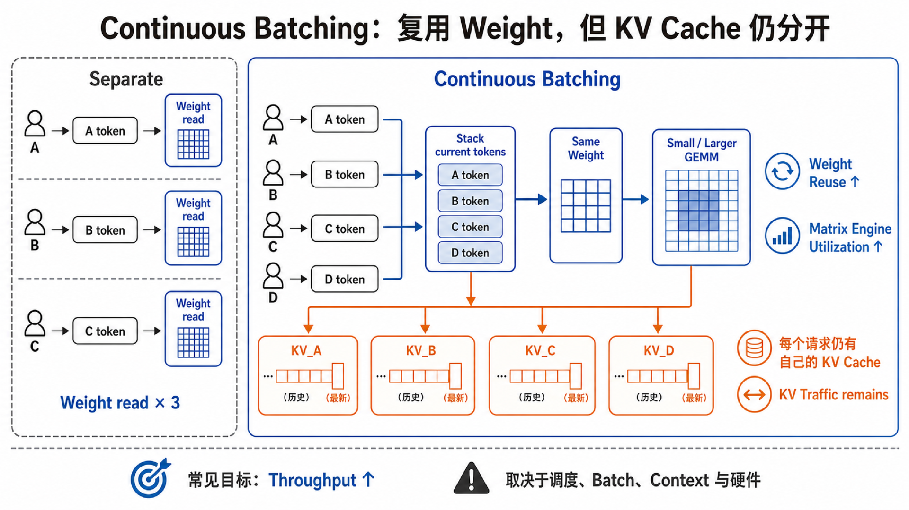
图 3：连续批处理（Continuous Batching）在模型权重与 KV Cache 之间的系统级权衡——增大 Batch Size 能够摊薄模型权重的访存开销，但同时会线性放大 KV Cache 的显存占用与访存带宽
1. 连续批处理（Continuous Batching）的双刃剑效应
正如 Lesson 1 所述，连续批处理通过聚合 $B_{\text{live}}$ 个并发请求，将单步 GEMV 提升为 Small GEMM，显著提高了权重复用倍率。
然而在存储视角下，增大 Batch Size $B$ 伴随着尖锐的工程妥协：
收益端 ：模型权重矩阵的读取开销被 $B_{\text{live}}$ 个请求分摊，单 token 均摊的权重显存搬运量下降为原来的 $1 / B_{\text{live}}$；成本端 ：活跃 KV Cache 的总显存占用和单步传输量随 $B_{\text{live}}$ 线性放大（$O(B_{\text{live}})$）。
Batch Size 增大:
- 权重均摊访存: 1 / B_live (持续收益，算术密度提升)
- KV Cache 负载: 随 B_live 线性激增 (容量受限，总线带宽被 KV 读取淹没)
系统最优 Batch: 权重均摊收益与 KV 访存开销的平衡极值点
2. 内存碎片治理：PagedAttention 机制
在传统的显存管理中，推理框架预先为每个请求分配一段固定长度的连续显存空间以存放 KV Cache。由于用户生成的序列长度无法预知，系统不得不按最大序列长度（如 4096）进行静态预分配，导致了高达 60%–80% 的内部显存碎片（Internal Fragmentation）。
vLLM 借鉴了操作系统的虚拟内存与分页机制，提出了 PagedAttention ：
将物理显存划分为固定尺寸的块（Physical Blocks，例如每个 Block 存放 16 个 token 的 KV 状态）；
为每个请求维护一个页表（Block Table），在时间步推进过程中按需动态申请非连续的物理块；
这一机制将内存碎片率降低至 4% 以下，使得同一张 GPU 能够承载高出 2–4 倍的并发 Batch 规模，直接拉升了实际服务吞吐量。
3. 注意力架构演进：MHA、MQA 与 GQA
为了从根本上削减 KV Cache 的体量，模型算法与硬件体系结构展开了深度的协同设计（Co-design）：
MHA (Multi-Head Attention) : Key 与 Value 的头数 = Query 头数 (H_kv = H_q) → KV Cache 庞大
MQA (Multi-Query Attention) : 所有 Query 头共享唯一 1 组 Key 和 Value (H_kv = 1) → 极端压缩，但轻微损伤模型泛化能力
GQA (Grouped-Query Attention): 将 Query 头分组，每组共享 1 组 Key 和 Value (如 8 组) → 兼顾容量压缩与模型表现 (当前业界主流)
以 70B 模型（64 个 Query 头）为例，采用 GQA（将 Key/Value 头数压缩为 8 个）之后，KV Cache 的显存容量与单步加载带宽开销被直接压缩至原来的 1/8 。这不仅让长上下文长文本推理成为可能，更从微架构层面大幅缓解了解码阶段的访存带宽墙。
七、全周期阶段特征综合对照
特征维度
Training（预训练/微调）
Inference Prefill（预填充）
Inference Decode（自回归解码）
序列处理方式 全序列双向全量处理
全序列 Prompt 并行全量处理
逐 token 串行生成（自回归因果约束）
核心算子形态 超大规模规整 GEMM
中大型 GEMM
单请求 GEMV / 并发 Small GEMM
计算量阶数 极高（约 6 FLOPs/参数/token）
中等（约 2 FLOPs/参数/token）
极低（单步仅 2 FLOPs/参数）
算术密度特征 极高（通常 $> 400$ FLOPs/Byte）
较高（$50 \sim 300$ FLOPs/Byte）
极低（低并发时仅 $1 \sim 10$ FLOPs/Byte）
核心硬件瓶颈 计算受限（Compute-bound） 计算受限（偏向算力饱和） 极度内存受限（Memory-bound）
运行期状态存储 优化器状态、中间激活检查点
构建初始 KV Cache
持续动态加载并追加膨胀的 KV Cache
系统优化核心指标 训练吞吐（Tokens/s）与 MFU
首字延迟（TTFT）
词间延迟（TPOT / ITL）与并发系统吞吐
硬件优化焦点 堆叠密集 Tensor Core 算力
算力阵列吞吐与大尺寸 Tiling 调度
极限 HBM 带宽、KV 显存管理（PagedAttention/GQA）
八、架构要点小结与工程思考 (Architectural Takeaways & Engineering Exercises)
核心架构要点
工作负载决定微架构瓶颈 ：同一个模型并非静态地表现为计算受限或访存受限。Training 与 Prefill 是天然的高利用率 GEMM，而自回归 Decode 则由于时间因果依赖退化为严酷的 GEMV 访存受限。KV Cache 是推理系统的关键变量 ：它以空间换时间将计算复杂度从 $O(T^2)$ 压降至 $O(T)$，但其容量随批次和序列长度线性膨胀，并在每一步产生巨大的显存总线读取流量。软硬件协同突破带宽墙 ：PagedAttention 通过分页消除显存碎片，GQA 通过压缩头数大幅削减 KV 规模，连续批处理则在权重访存与 KV 访存之间寻找最佳吞吐平衡点。
工程思考题
思考题 1（量化推导：KV Cache 吞吐与带宽占用） ：
当服务并发批次 $B = 32$、各请求当前序列长度均为 $S = 4096$ 时，计算此时全局 KV Cache 占用的显存容量。
在该状态下执行单步自回归解码，仅读取全量模型权重（约 140 GB）和当前全部 KV Cache，理论上单步从显存搬运的总数据量是多少？受限于显存带宽，单步生成的理论最小耗时（即词间延迟 TPOT 的物理下限）是多少？
参考解析提示 （点击展开 / 折叠）
KV Cache 显存容量计算 ：
\[\text{Memory}_{\text{KV}} = 2 \times 32 \times 4096 \times 80 \times 8 \times 128 \times 2\ \text{Bytes} \approx 34,359,738,368\ \text{Bytes} = 34.36\ \text{GB}\]
单步总访存量与延迟计算 ：
\[\text{Latency}_{\text{min}} = \frac{174.36\ \text{GB}}{3350\ \text{GB/s}} \approx 0.052\ \text{s} = 52\ \text{ms}\]
思考题 2（架构权衡：Prefill 与 Decode 混合部署的资源冲突） ：
参考解析提示 （点击展开 / 折叠）
消除计算资源抢占与调度气泡 ：Prefill 是高算术密度的大 GEMM，会长时间霸占 SM 算力核心，导致 Decode 线程无法按时获得调度，造成 Inter-Token Latency（ITL）剧烈抖动；实现硬件规格针对性匹配 ：Prefill 节点是典型的 Compute-bound，更适合配置高算力、中等显存带宽的算力密集型芯片；而 Decode 节点是典型的 Memory-bound，更适合配置配备超高 HBM 带宽和超大显存容量的显存密集型芯片；优化片上内存管理 ：物理分离后，Decode 节点的显存几乎可以 100% 专供 KV Cache 连续分配，无需频繁为突发的超长 Prompt Prefill 预留或清空显存缓冲区，从而使 Decode 节点的批处理并发度提升至极限。
九、后续延伸：走向具体芯片架构
前三课从算法工作负载出发，构建了完整的理论基础：
Lesson 1 解析了矩阵乘法、MAC 算子与算术密度，界定了 Compute-bound 与 Memory-bound 的物理边界；Lesson 2 揭示了存储层级金字塔、内存墙挑战，以及 Tiling 分块与软硬件重叠机制；Lesson 3 剖析了 Training、Prefill 与 Decode 的阶段负载差异，以及 KV Cache 对系统显存与带宽的双重压迫。
至此，大模型给底层硬件提出的所有核心挑战已经全景展开。从下一课开始，我们将正式进入真实的芯片物理世界，首先探索在这一演进浪潮中占据绝对统治地位的王者架构：Lesson 4：GPU——为什么“很多简单核心”最终成为 AI 计算的主流架构
← 上一课 下一课 →
Lesson 4：GPU——为什么“海量简单核心”最终成为 AI 计算的主流架构
在前三课中，我们从工作负载与访存机制的第一性原理出发，剖析了矩阵乘法、算术密度、内存墙以及 Transformer 全生命周期（Training / Prefill / Decode）中截然不同的硬件特征。在此基础上，一个更具工程现实意义的问题自然浮现：
既然 AI 的核心计算是海量规整的矩阵运算与数据搬运，为什么今天全球构建大模型计算系统最主流的硬件基座，不是某种极简的专用矩阵乘法器，而是脱胎于图形渲染的通用图形处理器（GPU）？
答案绝非简单粗暴的“GPU 核心数量多”。GPU 能够在 AI 算力竞赛中建立统治地位，根本原因在于其体系结构构筑了一套高度契合大规模并行数据流的执行哲学 ：通过硬件级轻量并发隐藏高访存时延，以 SIMT 机制兼顾大规模数据级并行与软件可编程性，再通过嵌入特化的 Tensor Core 矩阵微架构兑现极致的密集浮点吞吐。
一、架构分水岭：延迟导向的 CPU 与吞吐导向的 GPU
现代微处理器的演进史上存在两条截然相反的设计哲学分水岭：以现代通用 CPU 为代表的延迟优化（Latency-oriented） 路线，与以现代 GPU 为代表的吞吐优化（Throughput-oriented） 路线。
CPU 核心 (追求极低单线程时延):
┌──────────────┬──────────────┐
│ Control/OoO │ ALU │ 大量晶体管投入: 分支预测、乱序执行 (OoO)、
├──────────────┴──────────────┤ 深流水线、巨型多级片上 Cache
│ L1 / L2 / L3 Cache │ 目标: 让单个串行线程以极高时钟频率最快完成
└─────────────────────────────┘
GPU 核心 (追求极限并发吞吐量):
┌───┬───┬───┬───┬───┬───┬───┐
│ALU│ALU│ALU│ALU│ALU│ALU│ALU│ 绝大多数晶体管投入: 海量简单 ALU 运算阵列
├───┼───┼───┼───┼───┼───┼───┤ 精简控制单元与缓存，放弃乱序执行
│Control│ Shared Memory/L1 │ 目标: 用数万个并发线程互相掩盖时延，最大化聚合吞吐
└───┴───┴─────────────────────┘
CPU 的设计假设 ：需要处理操作系统内核、数据库、编译器与复杂业务逻辑等任意控制流程序。这些任务充斥着大量的分支跳转（if/else）与指针追踪（Pointer Chasing），单指令的执行延迟直接决定了业务响应速度。为此，CPU 不得不将超过 80% 的晶体管面积投入复杂的硬件分支预测器、超标量乱序执行（Out-of-Order）调度引擎以及巨型三级缓存层次，仅留出少量硅片面积用于实际算术运算。其目标是：让极少数复杂的串行线程跑得尽可能快 。GPU 的设计假设 ：起源于计算机图形学与三维渲染，场景中天然包含数百万个像素与顶点。这些数据需要经历完全相同的光影着色与几何投影运算。GPU 的设计者意识到，只要工作流中存在海量相似且互不依赖的数据元，最具能效比的策略就是摒弃复杂的乱序执行与投机控制逻辑，将绝大部分芯片面积和功耗预算直接浇筑为成千上万个高密度能效 ALU 。其目标是：在单位时间与功耗预算内，交付极限数量的数据处理总吞吐（Aggregate Throughput） 。
当深度学习尤其是 Transformer 架构兴起时，数亿乃至数千亿参数矩阵的乘加运算，与 GPU 骨子里的吞吐型架构构成了物理维度的完美契合。
二、从软件抽象到微架构：CUDA 编程模型与硬件映射
要理解 GPU 的运行机制，首先必须建立从软件编程模型（Software Abstraction）到微架构物理硬件（Hardware Realities）的层次映射。
以 NVIDIA CUDA 体系结构为例，GPU 构建了一套层次分明的三级执行模型：
软件抽象概念 (Software Abstractions) 硬件物理实体 (Hardware Realities)
┌─────────────────────────────────┐ ┌─────────────────────────────────┐
│ Thread (单个并发标量线程) │ ────映射─── │ CUDA Core / ALU (标量运算流水线) │
├─────────────────────────────────┤ ├─────────────────────────────────┤
│ Warp (32 个严格同步执行的线程束) │ ────映射─── │ Warp Scheduler / SIMD 流水线 │
├─────────────────────────────────┤ ├─────────────────────────────────┤
│ Thread Block / CTA (线程块) │ ────映射─── │ Streaming Multiprocessor (SM) │
├─────────────────────────────────┤ ├─────────────────────────────────┤
│ Grid (完整核函数发射网格) │ ────映射─── │ 全局 GPU 芯片 (Chip) │
└─────────────────────────────────┘ └─────────────────────────────────┘
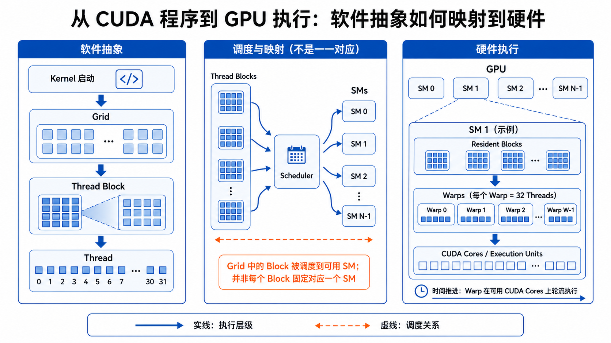
图 1：软件执行抽象到芯片微架构实体的物理映射——从单线程与 Thread Block，映射至硬件流水线、Warp 调度器与 SM 流式多处理器
SIMT 执行模型：为什么不是简单的 SIMD？
传统 CPU 的向量指令集（如 x86 AVX-512）采用的是 SIMD（Single Instruction, Multiple Data，单指令多数据） 机制。在 SIMD 模型中，程序员或编译器必须显式定义一个 512 位的向量寄存器，并在代码中显式打包多个数据并行运算。一旦算法中出现条件分支跳转，向量指令往往极难对齐甚至直接退化。
GPU 则引入了更高级的执行范式——SIMT（Single Instruction, Multiple Threads，单指令多线程） ：
面向程序员的软件视角 ：开发者只需编写处理单元素标量逻辑的代码（以单个 Thread 的视角展开编程）；面向硬件的物理执行视角 ：GPU 硬件控制器自动将连续的 32 个逻辑线程打包编组为一个不可分割的调度原子——Warp（线程束） 。在时钟周期推进中，Warp 内的 32 个线程共享同一个程序计数器（Program Counter, PC），以锁步（Lockstep）方式在不同的数据通道（Lanes）上并行执行相同的微指令。
# CUDA Kernel 软件视角: 程序员编写的是纯标量操作
# __global__ void vector_add(float* a, float* b, float* c) {
# int idx = blockDim.x * blockIdx.x + threadIdx.x;
# c[idx] = a[idx] + b[idx];
# }
# GPU 硬件微架构执行视角: 硬件 Warp 调度器自动将 32 个 Thread 捆绑为 Warp 并发发射
若 Warp 内发生分支条件分化（Warp Divergence ，例如前 16 个线程走 if 分支，后 16 个线程走 else 分支），硬件通过活动屏蔽掩码（Active Mask）以串行方式分别执行两个分支路径，其余不符合条件的线程暂时挂起。因此，编写高效 GPU 算子的首要法则之一就是消除 Warp 内的分支分化，保持 32 线程执行路径的一致性 。
三、流式多处理器（SM）：高并发执行工厂
GPU 物理芯片并非单一巨大的处理器，而是由数十至上百个独立而高度协同的流式多处理器（Streaming Multiprocessor, SM） 阵列构成。以 NVIDIA Hopper 架构的 H100 GPU 为例，其完整裸片集成了高达 132–144 个物理 SM。
每个 SM 内部高度集成了以下关键微架构模块：
┌────────────────────────────────────────────────────────────────────────┐
│ Streaming Multiprocessor (SM) 内部构造 │
│ │
│ ┌────────────────────────┐ ┌────────────────────────┐ │
│ │ Warp Scheduler 0 │ │ Warp Scheduler 1 │ ... (共 4 个调度器)│
│ │ Dispatch Unit │ │ Dispatch Unit │ │
│ └────────────────────────┘ └────────────────────────┘ │
│ │
│ ┌────────────────────────────────────────────────────────────────────┐ │
│ │ 巨型寄存器文件 (Register File: 64K x 32-bit registers, ~256 KB) │ │
│ └────────────────────────────────────────────────────────────────────┘ │
│ │
│ ┌───────────────┐ ┌───────────────┐ ┌──────────────┐ ┌────────────┐ │
│ │ FP32 Cores │ │ FP64 Cores │ │ INT32 Cores │ │ Tensor Core│ │
│ │ (基础浮点计算)│ │ (双精度计算) │ │ (地址计算等) │ │ (密集矩阵乘)│ │
│ └───────────────┘ └───────────────┘ └──────────────┘ └────────────┘ │
│ │
│ ┌────────────────────────────────────────────────────────────────────┐ │
│ │ 高速片上共享内存与 L1 缓存 (Shared Memory / L1 Cache: 128~256 KB) │ │
│ └────────────────────────────────────────────────────────────────────┘ │
└────────────────────────────────────────────────────────────────────────┘
Warp 调度与分发单元（Warp Schedulers & Dispatch Units） ：负责监控驻留在当前 SM 内部的所有活跃 Warp 状态，并在每个时钟周期挑选出没有数据依赖、处于就绪状态的 Warp，向计算执行流水线发射指令。海量寄存器堆（Register File） ：单个 SM 通常配备高达 256 KB 的物理寄存器堆（可容纳 65,536 个 32 位寄存器）。其巨大容量确保了数千个并发线程的全部上下文变量能够完整驻留在片上，完全消除了传统 CPU 在进行线程切换时沉重的堆栈保存与上下文切换（Context Switch）开销 。运算核心流水线（Execution Units） ：包含独立的 FP32、INT32、FP64 核心，以及专门负责张量乘加的 Tensor Core。统一共享内存与 L1 缓存（Shared Memory / L1 Cache） ：超高速片上 SRAM，由该 SM 运行的所有线程共享，用于分块 Tiling 数据复用。
四、延迟隐藏（Latency Hiding）与 Occupancy 机制
现代 AI 芯片设计面临的最核心矛盾之一是：从片外 HBM 读取数据的延迟长达数百个时钟周期（200–400 cycles），如果单纯等待，硬件计算阵列将不可避免地陷入长期饥饿。
CPU 的对抗手段是“做复杂的预测与巨额缓存试图消灭时延”；而 GPU 的对抗手段则是以极度充沛的并发度坦然接受时延，并将其“掩盖”在工作流之中 。这一核心机制被称为延迟隐藏（Latency Hiding） 。
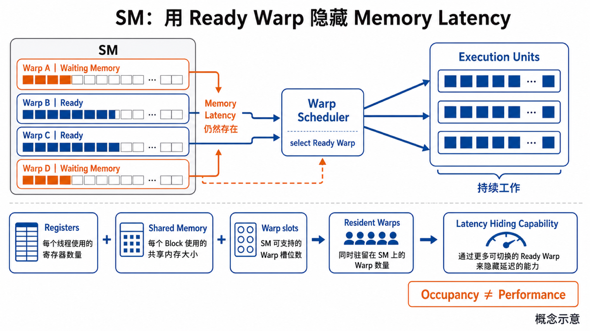
图 2：SM 的延迟隐藏与 Occupancy 调度机制——当 Warp 0 发射长时延访存指令并陷入挂起时，硬件调度器零开销切换发射就绪的 Warp 1 与 Warp 2，保持执行流水线持续饱满
1. 零开销并发切换
当 SM 内的 Warp 0 发射了一条全局内存读取指令（如从 HBM 加载模型权重 Tile），由于数据需要数百个周期才能送达，Warp 0 的后续计算指令自动进入挂起（Stalled）状态。
在传统的 CPU 架构中，操作系统的线程上下文切换需要消耗上千个周期的上下文保存开销。而在 GPU 内部，因为所有并发 Warp 的寄存器状态已经预先分配在巨型寄存器堆中，Warp Scheduler 可以在单个时钟周期内无缝将执行流水线切换至已经就绪的 Warp 1、Warp 2、Warp 3 执行 。
等到数百个周期过去、HBM 的数据真正到达寄存器时，Warp 0 重新被标记为就绪，调度器再次切回继续推进。通过在硬件中驻留数十个并发 Warp，长达几百纳秒的显存访存时延被其它 Warp 的有效计算完全充填与掩盖。
2. 占用率（Occupancy）及其物理制约
为了能够顺利实施延迟隐藏，SM 内部必须时刻维持足够数量的并发 Warp，这就引申出了 GPU 性能调优的关键指标——Occupancy（占用率） ：
\[\text{Occupancy} = \frac{\text{SM 当前驻留的活跃 Warp 数}}{\text{SM 硬件物理支持的最大 Warp 数}}\]
Occupancy 并不直接等同于计算性能，但它定义了系统隐藏访存延迟的抗压余量 。如果 Occupancy 过低，当驻留的少数 Warp 同时陷入访存等待时，SM 将发生算力饥饿，流水线瞬间出现气泡。
在工程实践中，限制 Occupancy 达到 100% 的往往是硬件资源的物理分配瓶颈：
# 决定 Occupancy 上限的三大硬件资源硬约束:
# 1. 寄存器约束: 线程消耗寄存器过多 -> 导致 SM 无法塞下足够多的并发线程
# 2. 共享内存约束: 单个 Thread Block 申请的 Shared Memory 过大 -> 限制了能共存的 Block 数量
# 3. 最大并发限额: 硬件规定的单 SM 最大线程数 (如 Hopper 架构为 2048 线程 / 64 Warps)
例如，若单个 Kernel 的每个线程申请了 128 个寄存器，则每个 Warp（32 线程）消耗 $32 \times 128 = 4096$ 个寄存器。受限于 SM 总共 65,536 个寄存器上限，该 SM 最多仅能驻留 $65536 / 4096 = 16$ 个 Warp，其实际 Occupancy 将被死死限制在 $16 / 64 = 25\%$。
五、Tensor Core 微架构与分层 GEMM 映射
尽管 SIMT 并发核心成功解决了延迟隐藏与并行扩展问题，但在处理纯粹的密集矩阵乘法时，基础的通用 CUDA Core（每个周期执行 1 次标量 MAC）在晶体管效率和算力密度上依然无法满足现代大模型的需求。
为此，NVIDIA 自 Volta 架构开始，在每个 SM 内部引入了专用的微架构引擎——Tensor Core 。
1. 硬件级矩阵乘加原语（MMA）
传统的 CUDA Core 面向标量编程，而 Tensor Core 直接面向小微矩阵运算。它在硬件逻辑层面固化了矩阵乘法与累加（Matrix Multiply-Accumulate, MMA） 电路，能够在单个时钟周期内完成例如 $4 \times 4$、甚至 $16 \times 8 \times 16$ 微矩阵的密集乘加运算：
\[D = A \times B + C\]
其中输入矩阵 $A, B$ 可采用低位宽浮点格式（如 FP16、BF16 或 FP8），累加器 $C, D$ 则采用高精度（FP32）以保障数值稳定性。一个配备 Tensor Core 的 SM，其矩阵算力密度相比纯通用 CUDA Core 直接跃升了 5 到 16 倍以上 。
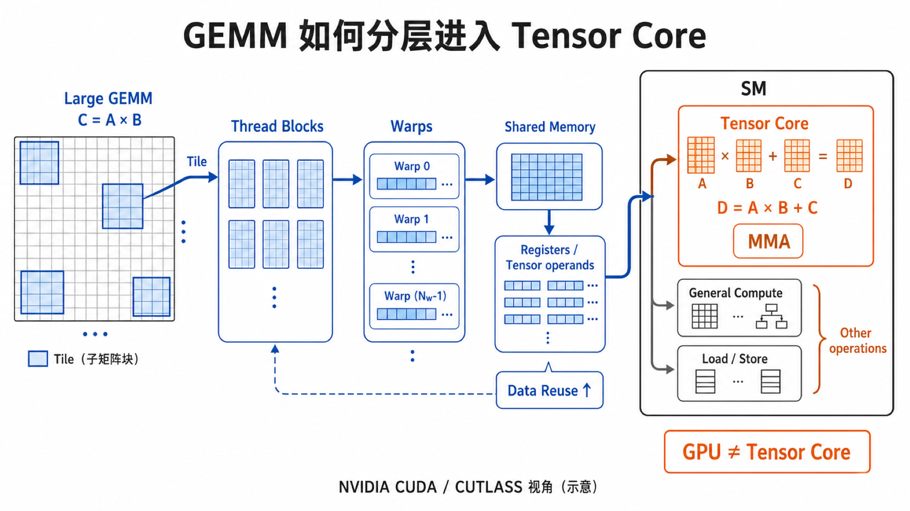
图 3：分层 GEMM 到 Tensor Core 的映射流水线——大矩阵在 Grid 级切分给 SM，在 Block 级缓存至 Shared Memory，在 Warp 级加载至寄存器切片，最终在微架构级由 Tensor Core 执行硬件 MMA
2. 分层 GEMM 硬件映射流水
在软件层面编写的超大矩阵乘法（例如 $[4096 \times 4096] \times [4096 \times 4096]$），正是通过 GPU 严密的分层结构，一步步降维映射至底层的 Tensor Core 硬件上的：
Grid 级分解（CTA Level） ：将全局超大矩阵沿输出维度切分为多个宏观 Block Tile（例如 $128 \times 128$），分配给 GPU 上的全部物理 SM 并行处理。Block 级分解（Shared Memory Level） ：单个 SM 内部的线程块通过 Tiling 算法，协同将 $A$ 与 $B$ 的分块数据从全局显存加载至片上 Shared Memory。Warp 级分解（Register Level） ：SM 内的各个 Warp 进一步从 Shared Memory 中抓取更小粒度的子分块（例如 $64 \times 32$），将其载入各自线程私有的寄存器片段（Register Fragments）。微架构级发射（Tensor Core MMA Level） ：Warp 内的 32 个线程协同发射一条硬件级 MMA 指令（如 mma.sync.aligned.m16n8k16），驱动底层的 Tensor Core 电路在单个硬件拍内完成微矩阵乘加并输出到累加寄存器中。
这种“宏观切分分流、微观硬件特化”的层级设计，使得 GPU 既保留了灵活调度任意尺寸矩阵的通用性，又完全释放了硬件专用矩阵阵列的极速吞吐。
六、CUDA Core 与 Tensor Core 的系统级分工协同
在许多对 GPU 架构的误解中，人们常常以为有了 Tensor Core 之后，通用的 CUDA Core 就变得可有可无。而在实际的大模型执行链路中，两者构成了一个紧密配合的“前锋与后卫”协同系统：
Transformer Layer 执行链路中的硬件分工:
Linear (Q/K/V 投影) ──> Tensor Core (稠密高吞吐矩阵乘法，承担 >95% FLOPs)
Softmax (注意力权重归一化)──> CUDA Core (指数函数、逐行求和与归一化标量/矢量运算)
Linear (Attention 输出) ──> Tensor Core (稠密高吞吐矩阵乘法)
LayerNorm / RMSNorm ──> CUDA Core (均值、方差与通道缩放矢量运算)
FFN (通道投影与升维) ──> Tensor Core (超大规整 GEMM，算力峰值主战场)
SwiGLU / GELU (激活函数) ──> CUDA Core (逐元素非线性激活函数与门控逐位相乘)
Residual Add (残差连接) ──> CUDA Core (逐元素张量向量加法与内存写回)
Tensor Core 是系统的“算力重炮”，专攻占据总 FLOPs 95% 以上的大型稠密矩阵乘法，追求极限的单位面积算力密度与功耗比；CUDA Core 则是不可或缺的“全能基石”，负责所有非矩阵、高度发散或逐元素的轻量算子，以及内存物理地址计算和线程同步控制。如果剥离了通用 CUDA Core 与灵活的 SIMT 调度，复杂的全链路大模型甚至无法完成一次标准的前向传播。
七、架构启示：GPU 在不同负载阶段的真实状态
结合前文建立的理论框架，我们终于能够透彻解释 GPU 在大模型不同执行阶段呈现的性能分化根源：
1. Training 与大型 Prefill 阶段:
- 矩阵维度极大，Warp 能够被海量数据持续喂饱
- Tiling 复用深度极高，有效算术密度轻松跨越硬件平衡点
- Tensor Core 持续满载作业，GPU 呈现极高的算力利用率 (MFU > 50%)
2. 低并发单步 Decode 阶段:
- 序列因果依赖导致单请求批次坍缩为 M=1，矩阵乘法退化为向量内积 GEMV
- 权重复用率归零，算术密度跌至极限低点 (I ~ 1.0 FLOPs/Byte)
- 尽管驻留了大量线程，但所有 Warp 均在等待片外 HBM 供给数据
- 延迟隐藏机制失效 (因为缺少可供交替计算的足量计算任务)
- Tensor Core 严重饥饿并长期挂起，GPU 呈现极度的显存带宽受限
这充分说明：GPU 是一台极其强大的吞吐型计算机器，但它的威力完全建立在“是否有足够的数据级并发与复用能够喂饱其硬件流水线”这一物理前提之上。
八、架构要点小结与工程思考 (Architectural Takeaways & Engineering Exercises)
核心架构要点
吞吐导向的体系结构本质 ：GPU 放弃了复杂的乱序预测逻辑，将晶体管全力投入海量并发执行单元，以整体吞吐量最大化为设计目标。SIMT 与 Warp 的硬件基石 ：SIMT 模型在软件层暴露标量编程抽象，在硬件层通过 32 线程组成的 Warp 锁步调度执行。延迟隐藏而非消灭延迟 ：利用海量驻留寄存器堆实现纳秒级零开销线程切换，当某些 Warp 陷入显存访存等待时，无缝切换就绪 Warp 填满流水线。分层 GEMM 驱动硬件特化 ：大矩阵通过 Grid、Block、Warp、Tensor Core 四级映射，将算法数学模型与微架构 MMA 电路严密咬合。
工程思考题
思考题 1（微架构推导：寄存器开销对 Occupancy 的压制） ：
若算子经编译器优化后，每个线程消耗 32 个寄存器，每个 Block 消耗 16 KB Shared Memory，计算此时该 SM 所能达到的理论最大 Occupancy。
若该工程师引入了复杂的片上临时数组，导致每个线程消耗的寄存器激增至 96 个（Shared Memory 保持不变），重新计算此时 SM 的最大 Occupancy，并分析这会对延迟隐藏能力产生何种微架构影响。
参考解析提示 （点击展开 / 折叠）
场景 1 计算 ： 线程数上限约束：最多驻留 $2048 / 256 = 8$ 个 Blocks。
Shared Memory 约束：$128\ \text{KB} / 16\ \text{KB} = 8$ 个 Blocks。
寄存器约束：每个 Block 消耗 $256 \times 32 = 8192$ 个寄存器，SM 可容纳 $65536 / 8192 = 8$ 个 Blocks。
综合可驻留 8 个 Blocks（共 2048 个线程，64 个 Warps）。理论 Occupancy 为 $64 / 64 = 100\%$。
场景 2 计算 ： 每个 Block 消耗寄存器激增为 $256 \times 96 = 24,576$ 个。
寄存器约束：$65536 / 24576 = 2.66 \rightarrow$ 整数取整最多只能驻留 2 个 Blocks 。
2 个 Blocks 对应 $2 \times 256 = 512$ 个线程，即 16 个 Warps。
理论 Occupancy 暴跌至 $16 / 64 = 25\%$。
微架构影响 ：活跃 Warp 数量锐减了 75%，当这 16 个 Warp 发起全局显存访问时，SM 内很快耗尽可供切换的就绪 Warp，导致算术单元出现大量的流水线停顿，无法有效隐藏 HBM 访存延迟。
思考题 2（架构权衡：通用 SIMT 机制的硬件代价） ：
参考解析提示 （点击展开 / 折叠）
SIMT 的硬件面积与功耗开销 ：
专用芯片（DSA/TPU）的取舍逻辑 ：
九、后续延伸：当矩阵乘法直接成为机器的物理中心
GPU 通过“SIMT 通用并发体系 + 特化 Tensor Core”的路线，成功统治了当前的大模型算力市场。然而，正如思考题 2 所揭示的，通用的代价是必须为复杂的动态调度机制付出可观的硅片面积与能耗开销。
如果我们在设计之初就确信这颗芯片的唯一宿命就是计算海量矩阵，是否可以直接剥离所有的通用指令调度，让矩阵乘法本身成为整台硬件机器的物理组织中心？
这正是专用体系结构（DSA）的起点，也是下一课的核心主角：Lesson 5：TPU——当矩阵乘法成为机器的中心
← 上一课 下一课 →
Lesson 5：TPU——当矩阵乘法成为机器的物理中心
在探索了 GPU 的通用 SIMT 架构后，我们看到了一条极其成功的 AI 计算路线：构建一台高度通用、拥有海量并发线程与层次化内存的机器，利用软件驱动通用计算核心，并通过硬件特化的 Tensor Core 加速矩阵乘法。然而，这种通用性并非毫无代价。
在 GPU 的硅片上，相当大比例的晶体管面积和功耗预算被分配给了指令抓取与译码流水线、动态 Warp 仲裁调度器、多级缓存一致性协议以及规模庞大的物理寄存器堆。
如果我们将目光收敛至大语言模型计算的物理本质：绝大部分浮点预算完全被可预知的矩阵乘加（MAC）所主导。这自然催生出计算机体系结构的另一条激进路线——领域专用架构（Domain-Specific Architecture, DSA） ：
如果我们已经确切知道机器 95% 以上的时间都在执行矩阵乘法，是否有必要彻底剥离通用的动态指令调度开销，让矩阵乘法本身直接成为整颗芯片物理组织的绝对中心？
由 Google TPU（Tensor Processing Unit）所代表的体系结构路线，正是对这一问题的工程解答。TPU 并没有简单地复制“拥有更多核心的 GPU”，而是从底层重构了数据经过计算单元的方式，奠定了以脉动阵列（Systolic Array） 与编译器强规划数据流（Compiler-Planned Dataflow） 为核心的 AI 计算范式。
一、传统冯·诺依曼架构的访存瓶颈与能耗浪费
在传统的处理器（无论是 CPU 还是通用 GPU 的标量核心）中，执行一次标准乘加操作 $C \leftarrow A \times B + C$ 的典型微架构流程如下：
传统体系结构执行 1 次乘加的微指令循环:
1. 从指令缓存读取指令并译码 (Instruction Fetch & Decode)
2. 从寄存器堆寻址并读取操作数 A 与 B (Register File Read: 消耗读端口与走线功耗)
3. 算术逻辑单元 ALU 执行浮点乘法与加法 (ALU Compute: ~1 pJ 能耗)
4. 将中间计算结果写回寄存器堆 (Register File Write)
5. 维护程序计数器 PC 并准备发射下一条指令
在此流程中，真正用于执行数学计算的 ALU 电路所消耗的能量仅占整个系统的一小部分；超过 80% 的晶体管与动态功耗被消耗在指令译码、分支仲裁以及频繁进出寄存器堆的数据搬移上。
更严峻的是，当计算扩展至大矩阵乘法时，由于每个元素需要参与多次内积计算，传统架构依赖不断从寄存器堆读取相同的操作数。寄存器堆本质上是片上静态多端口 SRAM，频繁高并发的高速充放电会产生巨大的发热量，导致芯片迅速撞上功耗墙（Power Wall） 。
因此，专用体系结构的核心突围方向非常明确：能否设计一种硬件结构，使数据在读取一次之后，能够在运算单元之间直接传递复用，而无需在每一步计算中都反复进出寄存器或片外内存？
二、脉动阵列（Systolic Array）：时空节拍中的数据流
1978 年，计算机体系结构先驱 H. T. Kung 与 Charles Leiserson 提出了脉动阵列（Systolic Array） 理论。“Systolic”一词借用自医学中的“心脏收缩脉动”（Systole）：如同心脏有节奏地将血液泵入全身动脉与毛细血管网络，脉动阵列让数据在规则互联的处理单元（Processing Elements, PEs）网格中，随着系统时钟节拍整齐划一地向前流动。
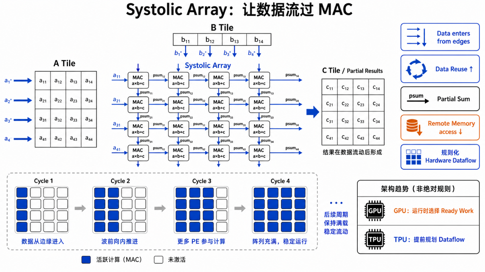
图 1：脉动阵列的时空执行机理——在 Weight Stationary 模式下，权重被预加载并固化在 2D 处理单元（PE）中，输入激活与部分和随着时钟节拍像波浪一样在网格中脉动流动并逐级累加
1. 权重常驻（Weight Stationary）脉动阵列的执行机制
在 Google TPU 的矩阵计算单元（MXU）中，最典型的微架构实现为权重常驻（Weight Stationary） 数据流：
输入激活 X (以斜角波形按拍推入)
↓ ↓ ↓ ↓
X00 X01 X02 X03 ...
│ │ │ │
┌──────────────────┼───┼───┼───┼──────────────────┐
│ 处理单元 (PE) 阵列│ │ │ │ │
│ ┌──────────────┐ │ │ │ │ │
───> │ │ PE (W00固化) │─┼───┼───┼───┼─> 激活水平向右传递 │
│ └──────┬───────┘ │ │ │ │ │
│ │ 部分和 │ │ │ │ │
│ ↓ │ │ │ │ │
───> │ ┌──────────────┐ │ │ │ │ │
│ │ PE (W10固化) │─┼───┼───┼───┼─> 激活水平向右传递 │
│ └──────┬───────┘ │ │ │ │ │
│ │ 部分和 │ │ │ │ │
│ ↓ │ │ │ │ │
└────────┼─────────┴───┴───┴───┴──────────────────┘
↓ ↓ ↓ ↓
最终累加输出矩阵 Y (自底端逐拍输出)
其物理工作步骤如下：
预加载阶段（Weight Preload） ：在矩阵计算开始前，整块权重矩阵被一次性加载并静态锁存在二维处理单元（PE）内部的本地存储锁存器中，在整个计算波次中保持静止不动。激活注入阶段（Activation Streaming） ：输入激活张量以精密的倾斜波阵面（Skewed Wavefront）形式，每个时钟周期沿水平方向向右推入一列。乘加与垂直传递（MAC & Accumulation） ：每个 PE 单元内部仅包含一个硬件乘法器、一个累加器以及极简的流水线寄存器。在每一个时钟上升沿：PE 将从左侧邻居接收到的激活值，与自身锁存的常驻权重相乘；
将乘积与来自上方邻居传递下来的部分和（Partial Sum）累加；
在下一拍将激活值无损传递给右侧邻居，同时将新的部分和向下传递给下方邻居。
结果流出阶段（Result Collection） ：随着计算波浪穿过整个网格，完整的矩阵乘法结果从阵列最底部一拍接一拍流出，直接送入累加缓冲器或输出激活流水线。
2. 极致的能效杠杆：从片上移动中榨取复用
脉动阵列的革命性优势在于其数据流动拓扑 ：
输入激活值在水平向右传递的过程中，被沿途整整一整行的 PE 依次复用；
权重参数驻留在 PE 内部，在整批数据流过期间被复用成百上千次；
中间部分和仅在相邻 PE 之间沿垂直极短金属走线流动，从始至终无需读写中央寄存器堆，更无需往返任何片上 Cache 。
# 脉动阵列 PE 单元的硬件微逻辑 (每个时钟周期仅执行单拍流水)
def pe_step(activation_in, psum_in, weight_stationary):
# 局部乘加
psum_out = psum_in + (activation_in * weight_stationary)
# 单拍短走线传递
activation_out = activation_in
return activation_out, psum_out
这种设计消除了传统处理器中 90% 以上的指令控制开销与长距离走线充放电能耗，使得 TPU 能够在极其严苛的功耗预算下，将绝大部分硅片直接铺设为数万个密集算术单元。
三、矩阵计算单元（MXU）微架构演进
在物理芯片实现层面，Google TPU 将脉动阵列工程化封装为矩阵乘法单元（Matrix Multiply Unit, MXU） 。
TPU 代际演进关键规格对比:
┌───────────┬──────────────┬──────────────┬──────────────────┬──────────────┐
│ 硬件代际 │ 制造工艺 │ MXU 阵列尺寸 │ 计算数值格式 │ 存储子系统 │
├───────────┼──────────────┼──────────────┼──────────────────┼──────────────┤
│ TPU v1 │ 28 nm │ 256 x 256 │ INT8 (专供推理) │ 28 MB DDR3 │
│ TPU v2/v3 │ 16 / 16 nm │ 128 x 128 │ BF16 / FP32 累加 │ 16 / 32GB HBM│
│ TPU v4 │ 7 nm │ 128 x 128 │ BF16 / INT8 │ 32 GB HBM2e │
│ TPU v5p │ 4 nm │ 128 x 128 │ BF16 / FP8 │ 95 GB HBM3 │
└───────────┴──────────────┴──────────────┴──────────────────┴──────────────┘
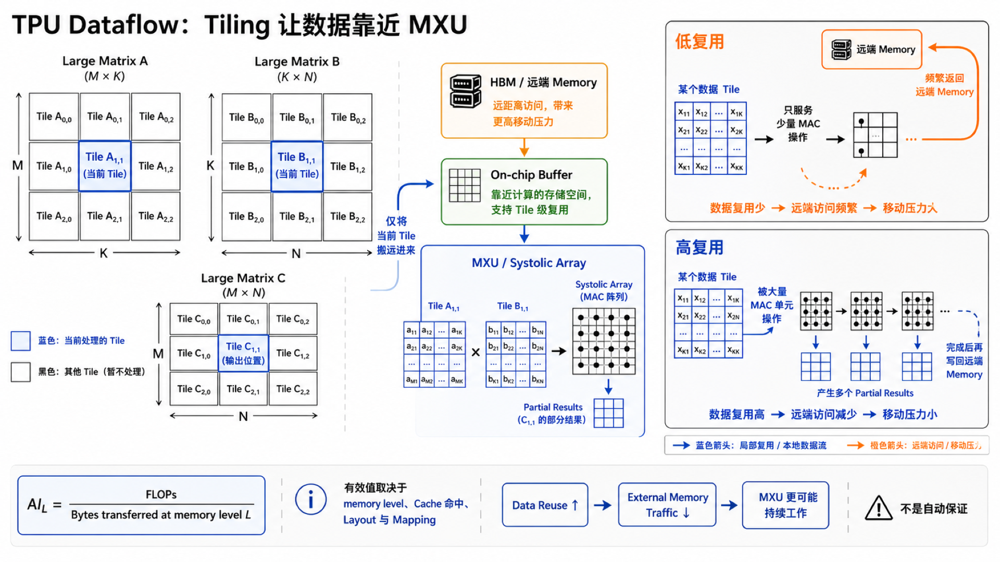
图 2：TPU 芯片内部的数据流、分块（Tiling）与存储协同——大容量片外 HBM 与片上向量内存（VMEM）通过宽总线向 MXU 脉动阵列持续注数
在初代用于数据中心推理加速的 TPU v1 中，Google 激进地集成了单一超大尺寸的 $256 \times 256$ 脉动阵列，能够在单个时钟周期内完成 65,536 次 8 位整数乘加操作。
然而随着深度学习向大模型训练演进，过大的阵列尺寸在面对非完美对齐的张量维度时会产生严重的边缘闲置。因此，从 Cloud TPU v2 开始直至当前的 TPU v5p/v6e，Google 将 MXU 规格标准化为双核或四核并联的 $128 \times 128$ 脉动网格 ：
单个 $128 \times 128$ MXU 在单个周期完成 16,384 次浮点乘加；
原生支持 Brain Floating Point（BF16）与 FP8 精度，并在 PE 内部采用 FP32 宽累加器防止精度损失；
每个 TPU 核心配备独立的大容量向量内存（Vector Memory, VMEM） 与片外高带宽 HBM，配合双向环形/网格高速片间互联（Inter-Core Interconnect, ICI）。
四、规则化阵列的工程代价：填充与利用率陷阱
任何体系结构的特化，必然伴随着通用性的牺牲。脉动阵列极高的计算能效，建立在输入数据与阵列物理几何尺寸严格对齐的前提之下。
当矩阵维度能够被 $128$ 整除时（例如 $M, N, K = 2048$），输入数据流水线能够无缝充填整个网格，硬件 PE 的有效利用率可逼近 100%。
然而，一旦进入非规则矩阵维度：
维度非对齐（Dimension Mismatch） ：若输入的特征通道维度仅为 $K = 37$（未达 128），阵列中其余 $128 - 37 = 91$ 个维度的物理 PE 将完全处于空转停顿状态，硬件利用率瞬间跌落至不足 30%。零值填充（Zero-Padding）开销 ：为了让小矩阵能够穿透固定的硬件网格，编译器或驱动程序必须人为插入大量的无效零（Padding），这不仅浪费了宝贵的片上内存空间，更造成了无意义的功耗浪费。低批次解码塌缩 ：当运行自回归单步解码时（$M = 1$），$1 \times K$ 的向量无法形成连续流动的二维波浪。整整拥有 16,384 个 PE 的巨大网格在单拍内仅有一排甚至几个 PE 在进行有效运算，脉动阵列退化为极其低效的标量乘法器。
这正是为什么在大语言模型服务中，TPU 系统甚至比 GPU 更加极端地依赖连续批处理（Continuous Batching） 与请求聚合 ——其目的就是将输入维度强行拼接至 128 的整数倍，拯救庞大的脉动阵列免于硬件空转。
五、编译器主导范式：OpenXLA 与静态执行图规划
在传统 GPU 编程中，硬件 Warp 调度器承担了极繁重的动态调度职责：在运行时根据缓存命中情况实时决定切换哪一个线程。
而 TPU 彻底剔除了这些复杂的动态控制电路。那么，究竟是谁来决定何时加载权重、何时推入激活、数据如何在片上 VMEM 与片外 HBM 之间调度？
答案是：离线编译器——XLA（Accelerated Linear Algebra） 。
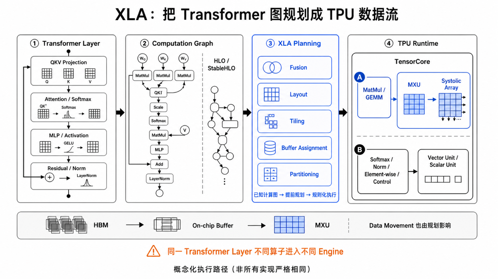
图 3：XLA 编译器规划 Transformer 到 TPU 硬件的端到端执行路径——从计算图层级融合，到多维张量分块与内存静态排布，最终生成完全确定性的无气泡硬件控制流水线
1. 全局静态计算图与端到端编译
现代大语言模型的前向与反向传播在数学层面上具有极强的结构确定性（Deterministic Graph）。与通用软件充斥着动态分支不同，Transformer 的每一层维度、张量连接关系与参数大小在编译期均完全已知。
XLA 编译器充分利用了这一特征，在模型运行之前便完成了极其宏观的全局优化：
全局算子融合（Graph Fusion） ：不仅将相邻的激活与归一化算子融合，更能直接将矩阵乘法与前后的偏置、残差连接在编译期融合成一个超大复合算子，消灭一切多余的内存往返；静态内存生命周期分配（Static Memory Allocation） ：XLA 在离线状态下静态分析每个张量的生命周期，直接为它们在片上 VMEM 中分配固定的物理地址偏移，彻底抹除了运行期动态内存分配（malloc/free）与垃圾回收带来的时延抖动 ；分块与流水线排布（Static Tiling & Scheduling） ：XLA 自动将大矩阵切分为 $128 \times 128$ 的标准几何块，并精准计算出 DMA 数据搬运与 MXU 脉动计算的时钟周期差，在没有硬件动态调度器介入的情况下，生成完全无流水线气泡的确定性控制流。
GPU 范式: 依靠硬件动态调度器在运行时解决延迟与冲突 (Hardware Dynamic Scheduling)
TPU 范式: 依靠离线编译器在编译期静态规划一切数据流动与同步 (Compiler Static Orchestration)
六、GPU 与 TPU：两类架构哲学的系统级对比
深入理解 GPU 与 TPU 的差异，绝不仅是比较两颗加速卡的峰值算力，而是审视两种截然不同的体系结构世界观：
评估维度
NVIDIA / AMD GPU 架构路线
Google TPU 架构路线
核心执行范式 动态多线程并行（SIMT） 静态空间数据流（Spatial Dataflow / Systolic）
矩阵计算单元 分布式小粒度 MMA 核心（Tensor Core，如 $16 \times 8 \times 16$）
集中式大粒度脉动阵列（MXU，如 $128 \times 128$）
延迟隐藏机制 硬件 Warp 调度器实时交替并发线程（动态隐藏）
脉动阵列空间短距离直传 + 编译器离线规划（设计规避）
片上内存体系 硬件管理的多级 Cache + 程序员可控的 Shared Memory
编译器显式管理的扁平向量内存（VMEM）+ 缓冲区
通用可编程性 极强：任意 C/C++ 逻辑均可通过 CUDA 高效映射
专用：高度针对稠密张量计算，通用标量与指针逻辑极其低效
执行行为特征 存在运行期缓存命中、线程分化等微架构不确定性
行为高度确定，时钟周期级可预测
生态护城河 极为成熟的通用算子库（cuBLAS/CUTLASS）与开发者社区
深度绑定于高级框架（JAX / TensorFlow / PyTorch-XLA）与云端服务
七、架构启示：大模型时代的特化思考
通过 TPU 的工程实践，我们可以提炼出专用 AI 芯片体系结构的三大核心法则：
计算不是瓶颈，数据流动才是根本 ：TPU 之所以具备极高能效，并非其乘法器比 GPU 更快，而是通过脉动阵列让数据在二维网格内被反复消费，将绝大部分访存限制在单周期极短金属走线上，从而大幅削减了总线能耗。硬件的简化必须以软件的智能化为对价 ：TPU 剥离了动态调度硬件，获得了更高的算力面积比，但这一红利的代价是必须构建一套极其庞大复杂的现代编译器（XLA）。没有世界级的图编译技术，纯脉动阵列在工程上根本无法运转。工作负载形态决定架构生存空间 ：在超大规整的预训练与长序列 Prefill 中，TPU 的脉动数据流能够爆发惊人的效率；而在单批次、高分支或动态维度的应用中，GPU 的 SIMT 动态调度则展现出无可替代的韧性。
八、架构要点小结与工程思考 (Architectural Takeaways & Engineering Exercises)
核心架构要点
脉动阵列的数据流本质 ：通过 Weight Stationary 或 Output Stationary 机制，数据如脉动波浪般在相邻 PE 之间流动复用，消除了海量中间张量读写寄存器堆的高昂能耗与时延。集中式大阵列微架构 ：现代 TPU 采用 $128 \times 128$ 脉动网格设计，在保持极致算力密度的同时，比早期的 $256 \times 256$ 阵列具备更好的张量几何对齐弹性。软件静态编译取代硬件动态调度 ：XLA 编译器在离线期接管计算图融合、Tiling 切分与 VMEM 内存静态排布，实现了零气泡的完全确定性执行流。对齐即是生命线 ：脉动阵列的有效利用率高度敏感于矩阵尺寸是否为 128 的整数倍。非规整维度会导致严重的 PE 边缘闲置与填充浪费。
工程思考题
思考题 1（微架构推导：脉动阵列尺寸与利用率损耗） ：
若硬件不支持动态切分，必须将该矩阵通过补零（Zero-padding）填充至一个完整的 $128 \times 128$ 阵列中执行，计算此时脉动阵列中有效处理单元（Active PEs）的百分比。
结合此场景，分析为什么在进入通用大语言模型时代后，TPU 未进一步盲目扩大单阵列物理尺寸（如做到 $512 \times 512$），而是选择收敛至 $128 \times 128$ 甚至探索多小核协同？
参考解析提示 （点击展开 / 折叠）
利用率推算 ： 完整硬件阵列单周期提供的有效乘加容量为 $128 \times 128 = 16,384$ 个 PE；
算法所需的实际有效乘加维度为 $M=64, K=32, N=96$。在单拍网格覆盖中，实际参与有用计算的输出维度仅为 $64 \times 96 = 6144$ 个点，且累加深度 $K$ 仅为 32（仅占深度 128 的 $25\%$）；
综合硬件有效利用率约为 $\frac{64 \times 32 \times 96}{128 \times 128 \times 128} = \frac{196,608}{2,097,152} \approx 9.38\%$。超过 $90\%$ 的硬件算力与物理空间被空转与补零浪费；
尺寸收敛的架构权衡 ：
思考题 2（系统级权衡：编译器确定性调度的风险） ：
参考解析提示 （点击展开 / 折叠）
重编译开销与长编译暂停（Compilation Overhead） ：
不得不退守“分桶填充”（Bucket Padding） ：
动态分支与稀疏路由（如 MoE）调度困难 ：
九、后续延伸：架构路线的百花齐放
通过 GPU 与 TPU 的对比，我们建立了一个核心认识：AI 芯片的架构演进，本质上是在通用可编程性、硬件调度复杂度、数据流规则性与能效比之间寻求最佳平衡点。
然而，世界的选择从来不局限于 GPU 和 TPU 这两种范式。围绕着片上存储设计、互联带宽与编译范式，业界涌现出了一批极具颠覆性的架构挑战者：
AMD 押注先进 Chiplet 封装与开放生态；AWS Trainium 探索云原生定制的矩阵数据流；Cerebras 制造整片晶圆级超大芯片试图消灭一切通信墙；Groq 彻底弃绝 HBM 追求单芯片纯 SRAM 的极致确定性延迟。
这些精彩纷呈的硬件探索，将在下一篇展开全面检阅：Lesson 6：AMD、Trainium、Cerebras、Groq——AI 芯片不只有 GPU 和 TPU 两种答案
← 上一课 下一课 →
Lesson 6：AMD、Trainium、Cerebras 与 Groq——AI 芯片多元架构路线与系统边界重塑
在分析了以 NVIDIA 为代表的通用 SIMT 架构与以 Google TPU 为代表的脉动阵列数据流架构之后，人们很容易产生一种非此即彼的二元直觉：构建 AI 计算系统，要么走通用 GPU 路线，要么走 TPU 风格的专用矩阵阵列路线。
然而，真实的半导体工业设计空间远比这广阔。随着大模型参数量向千亿乃至万亿规模膨胀，内存墙、互联墙与功耗墙在物理边界上全面收紧。围绕着“计算与存储的物理距离”、“片上集成度极限”以及“硬件调度与离线编译的职责划界”，业界涌现出了一批代表不同工程哲学的先锋架构：
AMD Instinct ：坚守通用 GPU 编程范式，但在芯片封装、Chiplet 先进集成与极限 HBM 规格上重塑系统边界；AWS Trainium ：依托超大规模公有云基础设施，探索软硬件垂直深度整合的云原生专用数据流；Cerebras WSE ：打破光刻掩模尺寸限制，直接以整片 300mm 晶圆制造巨型芯片，将数十万核心与全量高速 SRAM 熔铸于一体；Groq LPU ：彻底弃绝 HBM 与一切硬件动态调度，依靠纯片上 SRAM 与静态编译器时钟表，构建确定性流式执行流水线。
理解这四颗芯片，核心目的并非对比商业产品的技术参数，而是透过它们的设计抉择，建立一套多维度的计算机体系结构分析框架（Design Space Exploration） 。
一、AI 芯片设计空间的四种“架构押注”
所有 AI 芯片的设计初衷均高度一致：在有限的成本、硅片面积与功耗预算下，最大化大模型工作负载的有效执行性能。然而，不同的芯片架构师对“系统最大的瓶颈究竟在哪里”给出了不同的假设，由此形成了四种截然不同的系统边界迁移（Boundary Shifts） ：
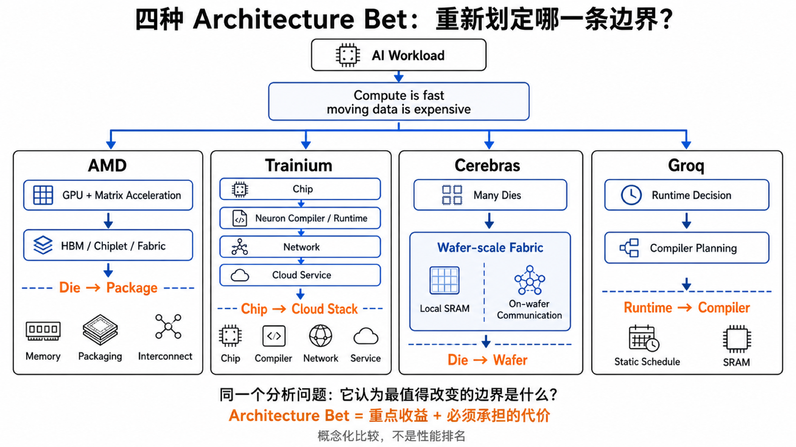
图 1：四种代表性 AI 芯片架构路线的系统边界迁移——AMD 拓展先进封装与显存容量边界，Trainium 推进云原生垂直集成，Cerebras 突破单芯片物理面积边界，Groq 彻底重塑硬件与编译器的确定性调度边界
┌─────────────────┬───────────────────────────────────┬─────────────────────────────────┐
│ 架构代表 │ 核心架构押注 (Architecture Bet) │ 系统边界迁移路径 (Boundary Shift)│
├─────────────────┼───────────────────────────────────┼─────────────────────────────────┤
│ AMD Instinct │ 坚守 GPU 范式，押注先进 Chiplet 封│ 将创新重点从单一裸片内部，迁移至│
│ (MI300X) │ 装与极限 HBM 容量/带宽 │ 多 Die 垂直堆叠与先进封装系统 │
├─────────────────┼───────────────────────────────────┼─────────────────────────────────┤
│ AWS Trainium │ 依托公有云全栈，押注成本优化与云原│ 将硬件设计与数据中心机架拓扑、虚│
│ (Trainium 1/2) │ 生专有矩阵引擎 (NeuronCore) │ 拟化网络及云实例深度绑定 │
├─────────────────┼───────────────────────────────────┼─────────────────────────────────┤
│ Cerebras │ 坚信片间互联通信太昂贵，押注晶圆级│ 打破光刻单芯片边界，将整个 300mm│
│ (WSE-2 / WSE-3) │ 超大集成与全片上超高带宽 SRAM │ 晶圆转化为一颗无需外部通信的巨芯│
├─────────────────┼───────────────────────────────────┼─────────────────────────────────┤
│ Groq LPU │ 坚决消除硬件动态不确定性，押注纯片│ 剥离动态调度与外存，将执行时序完│
│ (TSP) │ 上 SRAM 与编译器单周期确定性控制 │ 全交由离线编译器进行空间流式排布│
└─────────────────┴───────────────────────────────────┴─────────────────────────────────┘
二、AMD Instinct：先进封装与极限显存容量的系统突破
AMD 的 Instinct 系列（以 CDNA 3 架构的 MI300X 为代表）并未试图在编程范式上另起炉灶，而是选择正面迎接 NVIDIA GPU 的竞争。AMD 深刻认识到：在 CUDA 生态已经构筑起极深开发者护城河的现实下，推翻 GPU 编程模型需要付出巨大的软件生态代价。
因此，AMD 选择在硬件封装体系结构 与内存供给能力 上开辟差异化战场。
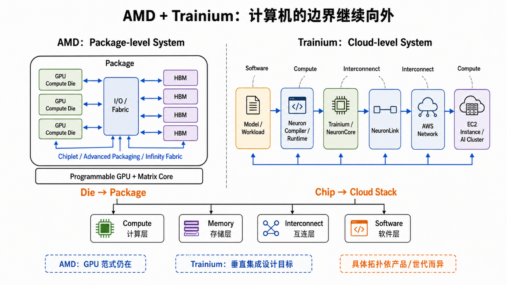
图 2：AMD 与 Trainium 的系统级设计——AMD 通过 3D Chiplet 混合堆叠将 192GB 巨型 HBM3 融为一体；Trainium 则通过 NeuronCore 专用数据流与云端 NeuronLink 形成垂直集成闭环
1. Chiplet 先进封装：封装本身成为超级计算机
随着芯片制造逼近单次光刻的物理掩模极限（Reticle Limit，通常约为 $858\ \text{mm}^2$），单颗巨型单片（Monolithic Die）的良率呈指数级崩溃，制造成本急剧攀升。
AMD 率先将自研的先进多芯片封装技术（Chiplet）引入高性能 AI 加速器：
3D 垂直混合键合（3D Hybrid Bonding） ：MI300X 底部铺设 4 颗有源 I/O 裸片（IOD，采用成熟高良率的 6nm 工艺），上方通过硅通孔（TSV）高密度垂直堆叠 8 颗计算加速裸片（XCD，采用更先进的 5nm 算力工艺）；水平超高带宽总线（Infinity Fabric） ：各计算裸片与 I/O 裸片之间通过超高密度互联总线连为一体，在软件视角下呈现为一个逻辑统一的巨型 GPU 核心。
这种异构 Chiplet 设计大幅摊薄了先进工艺的制造良率风险，使得 AMD 能够在单颗芯片物理封装内集成高达 1530 亿个晶体管。
2. 极限 HBM 容量的破局点
在存储子系统上，MI300X 做出了极具侵略性的硬件押注：直接在封装基板上集成了高达 192 GB 的 HBM3 显存 ，并交付高达 5.3 TB/s 的实测峰值带宽。
对比同时期 NVIDIA H100（80 GB HBM3，3.35 TB/s），这一容量优势在推理工程中带来了质的飞跃：
一个拥有 700 亿参数（70B）的大模型，以 FP16 精度部署时权重即需 140 GB 显存；
在 80 GB 的 H100 系统中，单个 GPU 无论如何无法容纳该模型，工程师必须强制配置至少 2 张卡进行张量并行（Tensor Parallelism, TP） 。这不仅增加了系统硬件采购成本，更在单步推理中引入了频繁跨卡的 All-Reduce 网络通信开销；
而在 192 GB 的单张 MI300X 上，整个 70B 模型及其初始 KV Cache 可以被完整装载于单颗芯片物理显存内部 ，以单卡独立推理彻底消除了跨芯片网络通信墙，显著降低了中小规模集群的服务部署门槛。
三、AWS Trainium：公有云基础设施的垂直整合闭环
AWS Trainium（以及推理专用的 Inferentia）代表了另一股不可忽视的系统力量：超大规模公有云服务商（CSP）的自研专用芯片 。
通用芯片厂商设计芯片时，必须面向千差万别的客户场景：游戏玩家、高校科研、私有数据中心、自动驾驶等。而 AWS 设计 Trainium 时的约束极其专一且明确：它不需要在公开市场上售卖裸片，它的唯一任务是直接作为 EC2 云端算力实例交付，以极致的拥有总成本（TCO）服务公有云上的 AI 开发者 。
1. NeuronCore 专用矩阵与向量数据流
在芯片微架构层面，Trainium 摒弃了通用 GPU 复杂的图形管线与通用显示控制器，每个核心封装为专有的 NeuronCore ：
内部明确划分为三个协同硬件引擎：专攻 GEMM 的 Tensor Engine、负责激活与归一化的 Vector Engine，以及执行标量控制的 Scalar Engine；
软件工具链（Neuron SDK）与 PyTorch、TensorFlow 等主流框架原生打通，并深度集成了类似 XLA 的图编译器。
2. 机架与数据中心级的系统闭环
Trainium 的真正核心竞争力在芯片之外。AWS 拥有从机架供电、服务器水冷、Nitro 虚拟化控制器到自研 EFA（Elastic Fabric Adapter）网络适配器的全栈工程主导权：
NeuronLink 原生片间互联 ：Trainium 芯片之间直接通过低延迟环形/网格总线相连，单服务器节点可实现极高密度的 Scale-up 扩展；成本效益最大化 ：AWS 通过自研芯片大幅削减了向第三方芯片巨头采购的巨额溢价，使得 Trainium 能够以显著低于同等性能通用 GPU 实例的定价向云上客户出租算力，从系统 TCO 维度构筑起强大的商业壁垒。
四、Cerebras WSE：消灭片间互联的晶圆级极端暴力美学
在现代超大模型训练中，上万颗 GPU 通过光纤和交换机组网。数据在芯片内部以数十 TB/s 的片上总线传输，然而一旦跨出芯片边界，进入 SerDes 串行收发器与网线，通信带宽瞬间暴跌数十倍，能耗和时延急剧恶化。
Cerebras 提出了一条极其激进的架构反问：既然芯片到芯片的跨封装通信如此昂贵，我们为什么非要将晶圆切割成数百颗小芯片，然后再费尽周折用铜线和光纤把它们连起来？
Cerebras 的答案是直接打破光刻机的物理单片边界，将整整一张 300 毫米直径的完整单晶硅晶圆 作为一颗单一芯片交付——这便是 Wafer-Scale Engine（WSE） 。
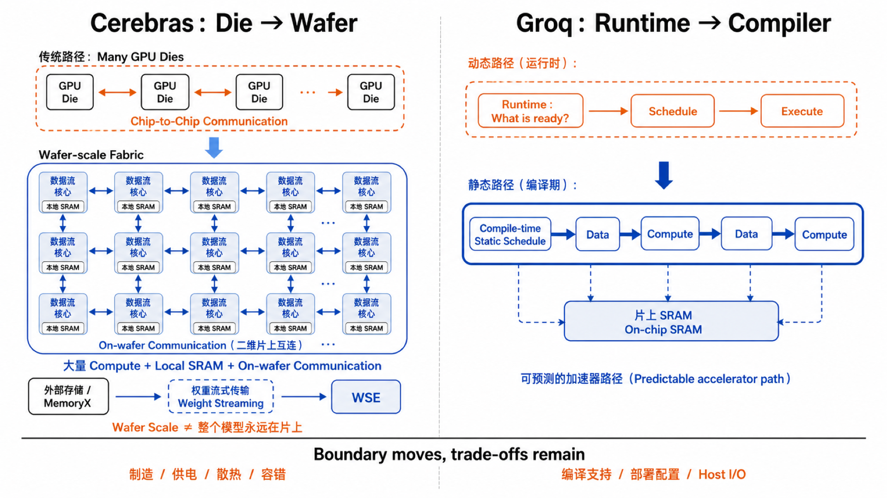
图 3：Cerebras 与 Groq 的极端设计范式——Cerebras 在整片晶圆上集成 44GB 超大纯片上 SRAM 与 21 PB/s 极端带宽；Groq 则利用 230MB 纯片上 SRAM 与单周期编译器空间流水实现极致确定性时延
1. 晶圆级超大芯片的微架构物理规格
以 Cerebras 第三代晶圆级芯片 WSE-3 为例，其技术指标达到了半导体工业的物理巅峰：
# Cerebras WSE-3 晶圆级芯片物理规格
wse3_specs = {
"Silicon Area" : "46,225 mm² (几乎覆盖完整 300mm 晶圆，面积约为普通 GPU 的 56 倍)",
"Transistors" : "4.0 万亿 (4 Trillion Transistors)",
"AI Cores" : "900,000 个自主研发的独立 AI 计算核心",
"On-chip Memory" : "44 GB 纯片上超高速 SRAM (完全抛弃外部板载 HBM)",
"Memory Bandwidth": "21 PB/s (21,000 TB/s，约为典型 GPU HBM 带宽的数千倍)",
"Fabric Bandwidth": "214 Pbps 晶圆级 2D 织网互联带宽"
}
在 WSE-3 上，90 万个计算核心均匀分布于整片晶圆表面，核心与核心之间通过超低延迟的二维 Mesh 网络直连。任何两颗核心之间的通信都在硅片内部完成，数据传输延迟仅为数个纳秒，能耗相比传统片间互联下降了两个数量级。
2. 极端工程背后的物理代价
制造一张晶圆级巨芯，必须克服一系列极其严苛的工程天堑：
缺陷容忍机制（Defect Tolerance） ：在半导体制造中，整张晶圆不存在任何制造缺陷（零 Defect）的概率在数学上为零。Cerebras 在硅片上预先冗余制造了额外的核心与走线通道，通过自研的硬件旁路网络，一旦测试发现某处硅片存在制造瑕疵，硬件自动切断故障单元并在纳秒内绕行至备用核心，确保了整片晶圆的功能完整性。极限制冷与供电（Power & Thermal Management） ：整张晶圆在满载运转时的功耗高达 20 千瓦（20 kW）以上。传统的风冷散热在此完全失效，Cerebras 设计了专有的垂直水冷铜板系统，通过高压冷却液直接穿透晶圆背面进行均匀散热，配合专门的定制机柜垂直供电母线。Weight Streaming 架构模式 ：尽管 44 GB 片上 SRAM 极其庞大且带宽惊人，但其绝对容量依然无法独立装载动辄数百 GB 的千亿参数模型。为此，Cerebras 采用了 MemoryX / SwarmX 外部存储流式解耦架构：模型静态权重存放在外部专用存储节点中，以前向流的形式有节奏地广播推入晶圆，晶圆内部 90 万核心专职负责承载海量激活值计算，从而规避了片上容量上限。
五、Groq LPU：编译器确定性与单周期空间流水线
如果说 Cerebras 是在空间集成度上走到了极致，那么由前 Google TPU 核心团队创立的 Groq（Language Processing Unit, LPU / TSP） ，则在时序确定性（Timing Determinism） 上开创了另一个极端。
1. 软件动态不确定性的根源
在现代通用处理器（CPU 与 GPU）中，为了最大化硬件利用率，体系结构集成了大量的硬件级动态预测机制：
硬件分支预测器动态猜测跳转路径；
乱序执行引擎动态重排指令序列；
硬件多级缓存动态响应 Cache Hit 与 Cache Miss；
GPU 硬件调度器在不同 Warp 之间实时仲裁发射。
这些动态硬件机制虽然提升了对未知复杂程序的适应能力，但在大语言模型推理中引入了巨大的时延抖动（Latency Jitter） 与硬件面积冗余。芯片的执行时间变成了黑盒，软件无法在编译期准确预知某条指令究竟会在哪一个确切的时钟周期完成。
2. 纯静态确定性空间数据流
Groq 提出了一个极其激进的体系结构假设：大语言模型自回归解码的每一步张量流动在数学上是完全确定的，既然运行时的每一步都可以被预先精确计算，为什么还要在硬件里浪费硅片去“动态猜测”？
基于这一假设，Groq LPU 进行了颠覆性的硬件精简：
彻底消灭硬件动态调度器 ：芯片内部没有任何分支预测器、没有乱序仲裁、没有硬件 Warp 调度逻辑；彻底抛弃外部 HBM 内存 ：单芯片物理集成 230 MB 的纯片上超高速 SRAM ，交付高达 80 TB/s 的片上访存带宽与单周期确定性读取；空间流式排布（Spatial Pipeline） ：芯片内部将计算单元（Matrix Execution Units）、向量单元（Vector Units）、存储单元（SRAM Slices）与数据交换单元（Switch Units）物理排布为并行的长条带状流水线。
Groq LPU 空间流水线微架构布局:
[ Matrix Unit ] ──数据单向流动──> [ Vector Unit ] ──> [ Switch/Router ] ──> [ SRAM Slice ]
每个功能单元在空间上物理对齐，数据如同流水线装配车间一般沿着空间方向单向推进
3. 编译器充当“木偶大师”
在 Groq 的体系中，编译器（Groq Compiler）扮演着全知全能的超级调度者角色。
编译器不仅负责将数学算子拆解为底层微指令，更精确规划了每一个数据在每一个绝对时钟周期位于芯片的哪一个物理坐标 。哪一拍从 SRAM 读取、哪一拍到达乘法器、哪一拍输出结果，全部在编译期锁死。
这种极致确定性带来了颠覆性的推理体验：
极限超低延迟与惊人吞吐 ：在低 Batch 自回归解码场景下，由于完全不存在 HBM 访存墙、不存在 Cache Miss 停顿，数据以单周期延迟穿透流水线，能够轻松交付单用户每秒数百甚至近千 token 的极速响应；系统代价 ：单芯片 230 MB SRAM 极其有限，无法装载哪怕一个最小的大模型。要部署一个 70B 模型，系统必须使用专用的全互联网络，将数百颗 Groq 芯片级联成一个庞大的服务器集群机架。系统的工程挑战从单片微架构转移到了极其复杂的多芯片静态路由与集群编译拓扑之上。
六、四大架构路线系统对比与工程权衡
架构路线
代表产品
核心存储选择
调度控制核心
最大架构红利
最大工程瓶颈 / 代价
通用 GPU 先进封装 AMD MI300X
大容量 192GB HBM3 (5.3 TB/s)
软硬件结合：SIMT 线程并发调度
单卡容纳百亿大模型，消除小集群 TP 通信墙
软件栈与算子生态（ROCm）面临成熟 CUDA 生态的持续压力
云原生定制 DSA AWS Trainium 2
HBM + 专有片上缓冲
软硬件协同：Neuron 编译器 + 专用引擎
深度绑定云基础设施，交付极具竞争力的云实例 TCO
芯片不对外公开销售，应用场景局限于云端自有实例
晶圆级超大集成 Cerebras WSE-3
44GB 纯片上 SRAM (21 PB/s)
空间数据织网直传 + 外部流式注入
彻底消灭片间互联通信墙，片上带宽与算力密度冠绝全球
制造良率、二十千瓦供电散热工程挑战极大，单片无法独立常驻模型
确定性空间数据流 Groq LPU
230MB 纯片上 SRAM (80 TB/s)
纯离线编译器时钟级静态排程
单 token 解码延迟极低，执行完全确定，无任何流水线气泡
需数百颗芯片组网方能承载大模型，集群通信调度复杂度极高
七、架构启示：没有神话，只有边界的选择
审视 AMD、Trainium、Cerebras 与 Groq 的技术路线，我们能够得出一条深刻的体系结构共性法则：
计算机体系结构领域不存在无代价的魔法。每一个被冠以“划时代突破”的技术创新，本质上都是芯片架构师将系统瓶颈在不同物理边界之间进行的主动转移。
当你想要极致的编程通用性（GPU），你就必须容忍复杂的硬件调度电路带来的硅片面积与功耗开销；
当你想要极大的显存容量（AMD），你就必须为先进 3D 封装与高昂的 HBM 堆叠承担成本与良率代价；
当你想要彻底抹除片间通信墙（Cerebras），你就必须直面晶圆缺陷修复与几十千瓦超大功率散热的极端物理挑战；
当你想要极致确定性的单周期推理延迟（Groq），你就必须接受极其有限的片上容量，并将数千倍的调度复杂度甩给离线编译器与庞大的多芯片互联网络。
理解这些边界的移动轨迹，是每一位 AI Infra 工程师洞察未来芯片演进的最核心心智资产。
八、架构要点小结与工程思考 (Architectural Takeaways & Engineering Exercises)
核心架构要点
系统创新的多维空间 ：AI 芯片的竞争早已超越了单纯的“算力核心频率”。先进封装（Chiplet）、存储介质（HBM vs 纯 SRAM）、物理尺寸（单片 vs 晶圆级）与调度模式（动态硬件 vs 静态编译）构成了多元的设计空间。容量即是竞争力 ：AMD MI300X 凭借 192GB 超大 HBM3，开创了在单卡内完整承载 70B 模型的新范式，以单片内存突破消除了跨卡张量并行（TP）的高昂网络通信开销。消除通信墙的极端尝试 ：Cerebras 以整片晶圆为芯片，将 90 万核心与 44GB SRAM 锁死在纳米级片上互联中，交付了 21 PB/s 的天量显存带宽。确定性重构推理引擎 ：Groq 彻底去除外部 HBM 与动态硬件控制，以纯片上 SRAM 和离线编译器精确调度每一个时钟周期，将推理解码延迟压缩至物理极限。
工程思考题
思考题 1（架构推演：大显存容量对集群拓扑的降维打击） ：
方案 A（NVIDIA H100 80GB） ：单卡显存 80 GB，显存带宽 3.35 TB/s；必须配置 2 卡张量并行（TP=2）。方案 B（AMD MI300X 192GB） ：单卡显存 192 GB，显存带宽 5.3 TB/s；单卡即可完整独立装载模型，无需跨卡并行（TP=1）。
参考解析提示 （点击展开 / 折叠）
通信开销完全消除 ：方案 A 采用 TP=2，每个 Transformer 层的注意力机制与 MLP 模块在前向传播中各需要一次跨卡 All-Reduce 集合通信（单层共 2 次，全模型 80 层累计执行 160 次网络通信）。单卡方案 B 完全在单芯片内部完成数据流转，通信开销直接归零，显著降低了词间延迟（TPOT）；服务并发与调度灵活性（Throughput Elasticity） ：在 8 卡服务器节点中，方案 A 最多只能构建 4 个独立的推理服务副本（$8 / 2 = 4$）；而方案 B 可以独立运行 8 个互不干扰的完整推理副本，在突发高并发流量下展现出更优的弹性与吞吐扩展性；系统容错性（Fault Tolerance）大幅提高 ：TP=2 方案中任意一张 GPU 发生硬件故障会导致两个副本同时崩溃；方案 B 各卡物理完全解耦，单卡故障仅影响局部单副本，系统可用性与运维复杂度显著优化。
思考题 2（系统级权衡：Groq 纯 SRAM 架构的 TCO 现实考量） ：
参考解析提示 （点击展开 / 折叠）
硬件采购成本与芯片效率（Silicon Area TCO） ：
机房能耗与占地密度 ：
长上下文（Long-Context）的致命瓶颈 ：
九、后续延伸：让每一个参与计算的数字变小
在前六课中，我们探讨的视角始终集中在“如何为既定的模型运算设计更强大的计算单元、更大的内存总线以及更高效的互联拓扑”。
然而，体系结构设计还有另一条更加根本、甚至更具颠覆性的突破路径：与其不断建造更宽的高速公路去运输庞大的数字，为什么不直接让参与计算的每一个数字本身变得更小？
如果我们将 32 位、16 位的浮点数，直接压缩至 8 位、4 位甚至微缩放格式，系统的存储、访存能耗与算力吞吐将爆发怎样的质变？这正是下一篇的核心焦点：Lesson 7：低精度计算——为什么 AI 芯片不断降低数值位宽
← 上一课 下一课 →
Lesson 7：低精度计算——为什么 AI 芯片不断降低数值位宽
在探索了 GPU、TPU 以及各类异构 DSA 的计算单元与存储层级设计之后，系统设计面临的另一重根本物理制约逐渐显现：即便通过精巧的微架构优化了流水线与数据复用，搬运和存储每一个 bit 依然受限于硅片面积、互联总线与功耗上限。为了在有限的物理资源下承载参数量不断膨胀的超大模型，体系结构演进开辟了另一条核心路径——通过压缩数值表示位宽，从根本上降低系统的访存能耗与通信负载 。
从早期科学计算统治时期的 64 位双精度（FP64）与 32 位单精度（FP32），到深度学习爆发初期的 16 位半精度（FP16/BF16），再到当前以 NVIDIA Hopper/Blackwell 为代表的 8 位（FP8）乃至 4 位微缩放格式（NVFP4/MXFP4），数值精度（Precision）已经从纯粹的数学概念，演变成为现代 AI 计算系统最强有力的体系结构杠杆 。
一、数值位宽对计算系统的全栈杠杆效应
当一个大语言模型将参数与激活值的数值表示位宽由 16 bit 压缩至 8 bit 甚至 4 bit 时，给底层计算系统带来的收益绝不仅仅是“数值精度轻微变化”，而是触发了全栈维度的物理重塑：
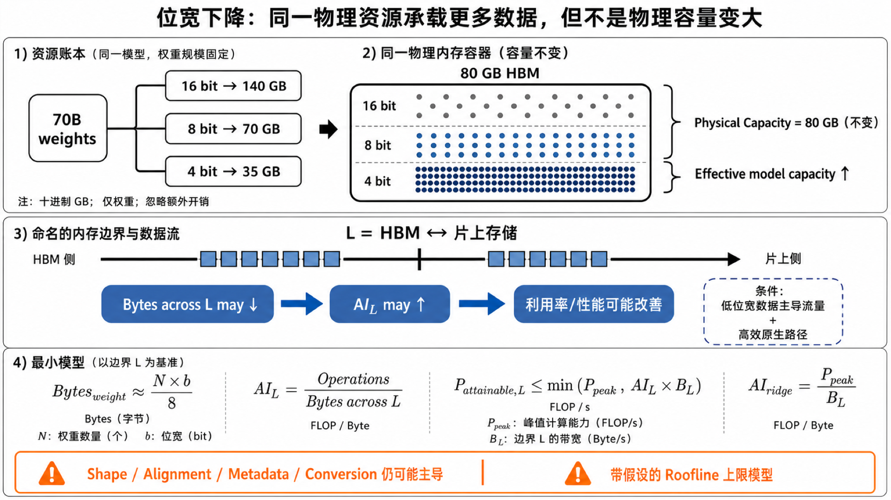
图 1：数值位宽下降对系统全栈成本的杠杆压缩效应——从片外存储容量、总线访存能耗，到硬件乘法器面积与峰值算力吞吐的立体收益
位宽下降 (16-bit -> 8-bit -> 4-bit) 带来的全栈连锁收益:
1. 显存容量占用减半 (Memory Footprint / 2) -> 相同物理 HBM 可承载 2x-4x 模型参数与 KV Cache
2. 总线数据搬运减半 (Data Traffic / 2) -> 访存带宽压力直接下降 50%-75%，有效缓解内存墙
3. 乘法器硬件面积与功耗剧降 (Area ~ O(b²)) -> 相同硅片面积可塞入 2x-4x 数量的硬件乘法器核心
4. 标称峰值算力成倍翻番 (Peak FLOPS x 2~4) -> Tensor Core 矩阵乘加吞吐呈倍数级飞跃
1. 显存容量与总线带宽减负
对于拥有 $N$ 个参数的大模型，若采用位宽为 $b$ bit 的数据格式，仅静态权重所需的物理显存容量约为：
\[\text{Bytes}_{\text{weight}} \approx N \times \frac{b}{8}\]
以拥有 700 亿参数（70B）的模型为例，不同位宽下的静态权重显存需求呈现出陡峭的阶梯下降：
# 70B 模型在不同精度位宽下的静态权重显存量化对照
fp16_weight = 70e9 * (16 / 8) / 1e9 # 140 GB (需 2 张 80GB 卡分片)
fp8_weight = 70e9 * (8 / 8) / 1e9 # 70 GB (单张 80GB 卡即可独立装载)
fp4_weight = 70e9 * (4 / 8) / 1e9 # 35 GB (单卡可预留高达 45GB 专供 KV Cache 扩展)
在自回归解码（Decode）这一严酷的 Memory-bound 场景下，由于算术密度极低，端到端生成延迟直接由模型权重加载耗时所统治。将位宽由 16 位降至 8 位，意味着每一步总线传输的数据量被腰斩，在带宽不变的前提下，理论生成速率直接提升近一倍。
2. 硬件算术逻辑单元的平方级压缩
在集成电路物理实现中，加法器的硅片面积大致与位宽 $b$ 成正比（$O(b)$），而二进制硬件乘法器（Multiplier）的硅片面积与功耗开销大致与位宽的平方成正比（$O(b^2)$）。
将 16 位浮点乘法器降级为 8 位乘法器，单个硬件单元的晶体管面积开销可缩减近 70% 。这意味着芯片架构师能够在相同的芯片物理尺寸与功耗预算内，铺设数量翻倍乃至翻四倍的 Tensor Core 矩阵计算流水线，直接驱动芯片标称峰值算力（FLOPS）翻番。
二、浮点数表示基础：符号、指数与尾数的权衡
在计算机体系结构中，浮点数遵循标准的科学计数法思想，将有限的 bit 划分为三个功能字段：符号位（Sign） 、指数位（Exponent） 与 尾数位（Mantissa / Fraction） 。
在标准 IEEE 754 规范中，一个浮点数的值由下式计算：
\[V = (-1)^S \times 2^{E - \text{Bias}} \times \left( 1 + \frac{M}{2^m} \right)\]
其中：
符号位 $S$（1 bit） ：决定正负号；指数位 $E$（$e$ bits） ：通过偏移值（Bias）编码数值的阶码大小，直接决定了数值能够表示的动态范围（Dynamic Range） ；尾数位 $M$（$m$ bits） ：编码有效数字的精度，直接决定了两个相邻可表示数值之间的离散分辨率（Precision / Granularity） 。
标准浮点数通用位布局:
┌───────┬──────────────────────────┬──────────────────────────────────────┐
│ S (1) │ Exponent (e bits) │ Mantissa (m bits) │
└───────┴──────────────────────────┴──────────────────────────────────────┘
符号位 决定动态范围 (有多大) 决定数值分辨率 (有多细)
在有限的比特总预算内，指数位与尾数位构成了一对永恒的工程矛盾：若分配更多 bit 给指数位，数值的动态范围就更宽，更不易发生数值溢出；但代价是尾数位减少，相邻数值的间隔拉大，量化舍入误差剧增。
三、16 位浮点路线之争：FP16 与 BF16
在从传统的 FP32（1+8+23）走向 16 位精度的演进历程中，业界诞生了两种截然不同的数值格式：
FP32 : [S (1)] [Exponent: 8 bits (Bias 127)] [Mantissa: 23 bits] 动态范围: ~10^±38
FP16 : [S (1)] [Exponent: 5 bits (Bias 15) ] [Mantissa: 10 bits] 动态范围: ~10^±5
BF16 : [S (1)] [Exponent: 8 bits (Bias 127)] [Mantissa: 7 bits] 动态范围: ~10^±38
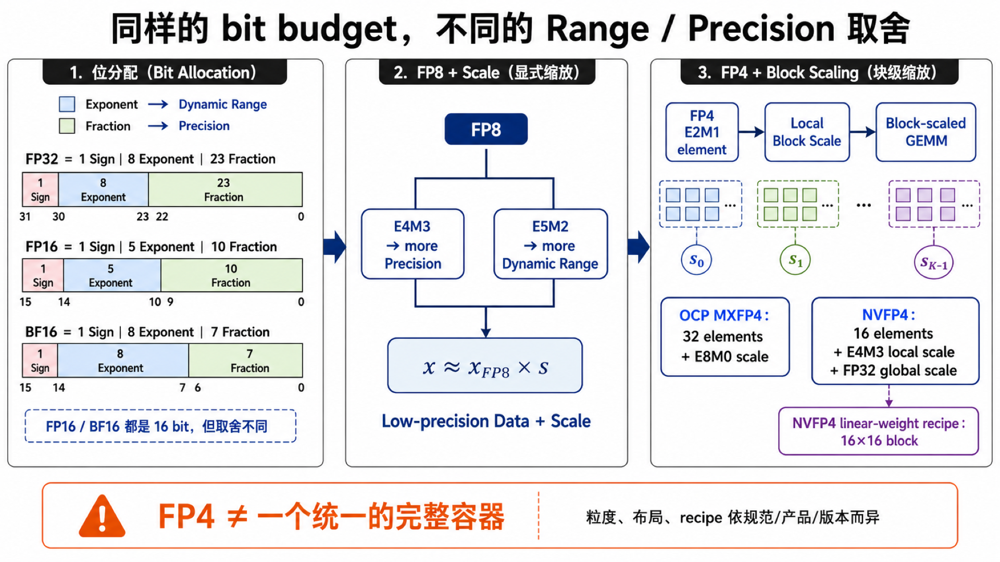
图 2：浮点数格式的动态范围与精度权衡——FP16 追求尾数精度却牺牲动态范围，BF16 继承 FP32 动态范围避免溢出，FP8/FP4 则引入动态缩放（Scaling）攻克极小位宽表征
为什么大模型训练全面倒向 BF16？
早期的深度学习主要采用 FP16 。然而在大语言模型训练中，工程师频繁遭遇数值灾难：
FP16 的指数位仅有 5 bit，其最大可表示正数为 $65504$，最小非零正正规数为 $2^{-14} \approx 6.1 \times 10^{-5}$；
深度网络在反向传播计算梯度时，极小的梯度值极其容易跌入下溢区（Underflow，数值直接归零），而偶尔突发的大梯度又会瞬间导致上溢（Overflow，变成 Inf 或 NaN），导致整场训练崩溃。为了稳定 FP16 训练，工程师不得不开发复杂的动态损失缩放（Loss Scaling）机制。
为了彻底消除这一系统脆弱性，Google 在 TPU v2 中率先推出了 Bfloat16（Brain Floating Point 16） ：
BF16 做出了一个极其大胆的微架构剪裁：直接保留与 FP32 完全相同的 8 位指数位 ，将尾数位压缩至极简的 7 bit ；
BF16 拥有与 FP32 完全一致的动态范围（高达 $10^{\pm 38}$），反向传播中的梯度下溢与上溢概率被直接抹除，算法工程师无需调整任何损失缩放超参数即可直接训练；
尽管 7 位尾数牺牲了有效数字精度（相当于仅保留约 2–3 位有效十进制数字），但大量深度学习实证表明：深度神经网络对微弱的高斯舍入噪声具有天然的容忍度，但对极值截断与梯度溢出具有致命的脆弱性 。
这一体系结构权衡取得了巨大成功，如今 BF16 已成为全球大模型预训练的绝对标准事实格式。
四、进入 8 位时代：FP8 的双子格式与动态缩放
当位宽进一步压缩至 8 bit 时，仅凭固定格式已无法同时满足深度学习全链路的需求。为此，开放计算项目（OCP）联合 NVIDIA、ARM 与 Intel 共同标准化了两种互补的 FP8 格式 ：
FP8-E4M3: [S (1)] [Exponent: 4 bits] [Mantissa: 3 bits] 最大值: 448 精度较高，动态范围窄
FP8-E5M2: [S (1)] [Exponent: 5 bits] [Mantissa: 2 bits] 最大值: 57344 精度极低，动态范围宽 (与 FP16 相同)
E4M3 格式 ：保留 3 位尾数，精度相对较高，但最大可表示数值仅为 448。它极其适合用于数值分布相对集中、对精度敏感的前向传播激活值（Activation）与模型权重（Weight） 。E5M2 格式 ：拥有与 FP16 完全一致的 5 位指数位，动态范围极宽，但仅保留 2 位尾数。它极其适合用于动态跨度极大、容易产生局部梯度突变的反向传播梯度张量（Gradients） 。
动态范围自适应：Delayed Scaling 机制
由于 E4M3 的动态范围上限极低（448），一旦矩阵中出现大于 448 的异常值，数值将直接饱和截断；反之若数值过小，有效信息将被低阶下溢清零。
为了让张量数据精准落入 FP8 的有效动态视窗内，现代加速系统（如 NVIDIA Transformer Engine）引入了延迟缩放（Delayed Scaling） 机制：
# FP8 动态缩放逻辑抽象
def quantize_to_fp8(tensor_fp16, scale_factor):
# 利用缩放因子将张量峰值映射到 FP8 可表示的最大值附近
tensor_scaled = tensor_fp16 * scale_factor
tensor_fp8 = clip_and_round(tensor_scaled, min_val=-448, max_val=448)
return tensor_fp8, scale_factor
系统在当前迭代步统计张量的历史绝对最大值（$A_{\max}$），在下一次迭代中动态更新缩放系数 $Scale = \text{Max_FP8} / A_{\max}$。通过软硬件协同的动态缩放，FP8 成功在大模型预训练中实现了几乎无损的收敛表现，同时兑现了算力吞吐与显存利用率翻倍的巨大红利。
五、跨入 4 位纪元：Microscaling（微缩放块）机制
当体系结构向 4-bit（如 NVFP4 / MXFP4）甚至更低位宽突进时，传统的全张量单标量缩放（Per-Tensor Scaling）彻底失效。
在 4 bit 精度下，整个数值系统仅能表示区区 $2^4 = 16$ 个离散状态（例如 E2M1 格式仅能表达 0、0.5、1、1.5、2、3、4、6 及其负数）。在大模型激活值中，天然存在极少数数值极大（比均值高出数十倍）的离群异常值（Activation Outliers） 。若采用全局统一缩放因子，为了不让异常值溢出，绝大部分正常区间的微小数值将被强制压缩映射至同一个离散值甚至归零，造成灾难性的精度塌缩。
为了解决这一物理困境，以 OCP Microscaling 标准与 NVIDIA Blackwell 架构为代表的最新体系结构，引入了革命性的微缩放块（Microscaling, MX） 机制。
传统全张量缩放 (Per-Tensor Scaling):
[ 一个巨型张量: 100 万个浮点数 ] ──全员共享唯一的──> [ 1 个 Scale Factor (FP32) ]
缺陷: 极少数异常大值迫使 Scale 缩小，毁掉其余 99.9% 正常数值的分辨率
微缩放块机制 (Microscaling, MX / NVFP4):
┌─────────────────────────┬─────────────────────────┬─────────────────────────┐
│ Block 0 (16/32 elements)│ Block 1 (16/32 elements)│ Block 2 (16/32 elements)│
│ 每个元素占用 4 bit │ 每个元素占用 4 bit │ 每个元素占用 4 bit │
└────────────┬────────────┴────────────┬────────────┴────────────┬────────────┘
│ │ │
↓ ↓ ↓
[Scale 0 (8-bit E8M0)] [Scale 1 (8-bit E8M0)] [Scale 2 (8-bit E8M0)]
优势: 局部独立缩放，将异常大值的破坏力严格隔离在其所在的极小微块内
微块切分 ：将多维张量切分成极小的固定微块（例如每 16 个或 32 个连续元素构成一个 Block）；双层数值编码 ：每个微块内部的 16/32 个元素采用极致精简的 4 位浮点格式（如 E2M1），而每个微块共享一个专属的高动态范围 8 位尺度因子（如 E8M0）；局部隔离异常值 ：异常大值仅影响其所在的局部微块缩放，其余微块能够维持极高的局部离散分辨率；硬件级原生支持 ：Blackwell 架构的第五代 Tensor Core 在微架构硅片上直接固化了微缩放浮点乘加流水线，能够在硬件内部单拍完成 4 位操作数与 8 位缩放因子的乘加外积，交付高达前代架构 2–4 倍的真实 PFLOPS 吞吐。
六、混合精度全景：按工作负载选型
低精度计算的工程终局并非“盲目让全栈所有算子都运行在最低位宽下”，而是根据算法不同维度的敏感性，实施混合精度协同（Mixed-Precision Strategy） ：
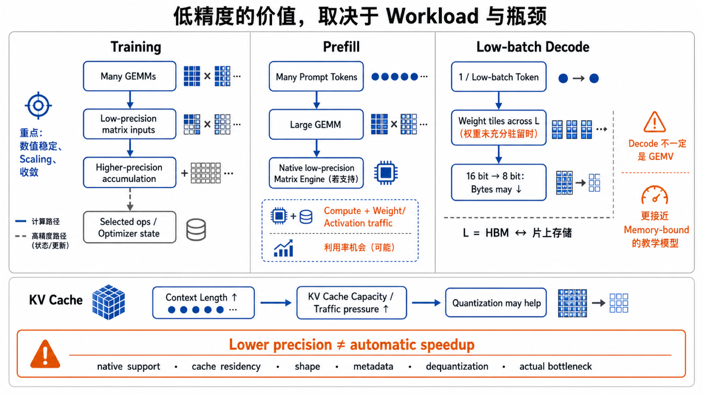
图 3：按模型工作负载与算子特征实施低精度混合映射——训练反向与主权重依赖宽动态范围，Prompt Prefill 与 GEMM 核心拥抱 FP8/FP4，低 Batch Decode 依赖权重轻量化削减访存
Transformer 内部各算子的高能效精度选型策略:
┌───────────────────────────┬───────────────────┬──────────────────────────────────────────┐
│ 模型运算区域 │ 推荐采用精度 │ 微架构设计考量 │
├───────────────────────────┼───────────────────┼──────────────────────────────────────────┤
│ 优化器主权重与动量状态 │ FP32 │ 累积极小的参数更新量，防止梯度长期更新失效│
├───────────────────────────┼───────────────────┼──────────────────────────────────────────┤
│ 线性层 GEMM (Q/K/V/FFN) │ FP8 (E4M3) / FP4 │ 占据 95% FLOPs，数据高度规整，算力效益最大│
├───────────────────────────┼───────────────────┼──────────────────────────────────────────┤
│ 反向传播激活与权重梯度 │ FP8 (E5M2) / BF16 │ 梯度动态跨度极大，优先保障宽动态范围 │
├───────────────────────────┼───────────────────┼──────────────────────────────────────────┤
│ Softmax 与 LayerNorm │ FP32 / BF16 │ 涉及指数运算、方差求和，对数值截断极其敏感│
├───────────────────────────┼───────────────────┼──────────────────────────────────────────┤
│ 自回归 Decode 静态权重 │ INT4 / FP4 (W4A16)│ 纯带宽受限，优先压缩权重搬运量以突破内存墙│
├───────────────────────────┼───────────────────┼──────────────────────────────────────────┤
│ 超长上下文 KV Cache │ FP8 / INT8 (KVC) │ 兼顾容量膨胀压缩与单步注意力精度维持 │
└───────────────────────────┴───────────────────┴──────────────────────────────────────────┘
七、架构启示与性能权衡
位宽的每一次阶梯式下探，其背后的体系结构本质是用极轻微的算法精度折损，换取物理层面的硬件爆发 ：
有效算力而非标称算力 ：将位宽从 16 位降到 8 位，并不只是数字变小，它直接将系统的机器平衡点（$I_{\text{machine}}$）拔高了一倍。原本处于 Memory-bound 泥潭中的算子，因访存量减少一半而重新获得了迈向 Compute-bound 的可能。硬件复杂度向数值分析的转移 ：在 FP32 时代，工程师几乎无需考虑数值溢出或量化下溢；而走向 FP8 与 FP4 后，系统必须引入复杂的延迟缩放、微块管理与量化校准流水线。系统复杂度的天平，从硬件电路制造全面倾斜向了软硬件协同的数值算法设计。推理解码与预训练的差异化收益 ：在预训练中，低精度主要依靠双倍乃至四倍的 Tensor Core 乘加吞吐赚取时间；而在长上下文交互式推理中，低精度更核心的价值在于将庞大的 KV Cache 与静态权重压缩在有限的高速 HBM 之内，让单张卡能够承载更大的 Batch 与更长的序列。
八、架构要点小结与工程思考 (Architectural Takeaways & Engineering Exercises)
核心架构要点
多维收益的物理杠杆 ：压缩位宽同时带来了显存占用减半、总线数据传输减半、乘法器硬件面积平方级缩减，以及算力峰值成倍飙升。动态范围优先于尾数精度 ：大模型训练对绝对精度展现出极高的容错弹性，但对数值溢出具有致命脆弱性。BF16 凭借继承 FP32 的 8 位指数位成为训练黄金标准。微缩放（Microscaling）突破 4 位天堑 ：NVFP4 与 MXFP4 通过细粒度微块独立共享高动态尺度因子，成功将离群异常值的破坏力限制在局部微块内，守住了极低位宽的表征精度。混合精度的系统精髓 ：大矩阵乘法全力拥抱低位宽以释放硬件极限吞吐，归一化、激活求和与优化器状态维持高精度以守住数值收敛底线。
工程思考题
思考题 1（量化推导：FP8 升级对 Roofline 临界点的重塑） ：
参考解析提示 （点击展开 / 折叠）
机器平衡度计算 ：
\[I_{\text{machine}}^{\text{FP16}} = \frac{1000 \times 10^{12}}{3.35 \times 10^{12}} \approx 298.5\ \text{FLOPs/Byte}\]
\[I_{\text{machine}}^{\text{FP8}} = \frac{2000 \times 10^{12}}{3.35 \times 10^{12}} \approx 597.0\ \text{FLOPs/Byte}\]
单步解码算术密度推算 ：
性能与算力利用率剖析 ：耗时变化 ：由于权重传输量从 $2KN$ 字节直接腰斩至 $1KN$ 字节，受限于固定的显存带宽，单步前向数据搬运时间直接缩减了整整 50%（速度提升一倍） ；算力利用率现状 ：尽管耗时缩短了一半，但这一收益完全来自于 HBM 搬运量减半，翻倍的 $2000\ \text{TFLOPS}$ 算力单元在大部分时间内依然处于饥饿挂起状态，计算单元的实际利用率并未得到有效拉升。
思考题 2（架构权衡：微缩放块尺寸的系统级代价） ：
从算法数值表现的角度看，这一改变带来了什么收益？
从硬件硅片面积开销与有效显存带宽利用率的角度看，这一改变带来了什么物理代价？
参考解析提示 （点击展开 / 折叠）
九、后续延伸：从单芯片极致走向分布式集群
至此，我们已经完整建立了单芯片维度的全部性能拼图：
计算模式（GEMM / GEMV）、
存储层级（Memory Wall & Tiling）、
运行阶段（Training / Prefill / Decode / KV Cache）、
芯片体系（GPU / TPU / 异构 DSA）、
数值位宽（低精度与微缩放）。
然而，面对动辄数千亿、数万亿参数的超大规模前沿模型，哪怕使用最高工艺制程、配备最大 HBM 显存并采用 4 位极限精度的单颗芯片，也终究存在一个无法逾越的物理天花板：单颗芯片的显存容量、计算吞吐与光刻面积终究是有限的。
大模型的终极计算工程，必然跨越单芯片边界，走向由数千、数万乃至十万颗加速芯片组成的庞大分布式集群。当计算跨出芯片物理外壳的那一刻起，系统的第一瓶颈再次发生转移：Lesson 8：从一颗 GPU 到 AI Cluster——Scale-up、Scale-out 与高速互联
← 上一课 下一课 →
Lesson 8：从一颗 GPU 到 AI Cluster——Scale-up、Scale-out 与高速互联
在前七课中，我们的体系结构推演始终聚焦于单颗加速芯片的微架构物理极限：从矩阵算子、片上存储金字塔、DSA 脉动数据流，到 4 位微缩放精度的极限压榨。然而，面对大语言模型参数量以每年数倍的速率指数膨胀，半导体物理规律筑起了一道不可逾越的绝对红线：单颗芯片的算力、HBM 容量与光刻掩模面积终究是有限的 。
以当前最先进的制造工艺为例，单颗芯片的光刻掩模极限（Reticle Limit）被死死锁在约 $858\ \text{mm}^2$ 左右；单封装内允许堆叠的 HBM 堆栈通常不超过 8–12 颗；而单芯片功耗预算在突破 700–1000 瓦（W）之后，供电与热设计功耗（TDP）已逼近物理散热极限。若仅凭单颗顶级加速卡，训练一个千亿参数的大模型往往需要耗费数十乃至上百年。
大模型的计算工程，必然跨越单颗物理芯片的外壳，走向成千上万颗芯片协同运作的AI 超级计算集群（AI Cluster） 。而在这一刻，系统的性能决定方程发生了根本性的维度质变：
\[\text{Performance} = f(\text{Compute}, \text{Memory}, \text{Communication})\]
从计算节点脱离单芯片边界的那一刻起，系统的第一瓶颈迅速从芯片内部的“内存墙”，全面转移至跨节点流动的通信墙（Communication Wall） 。
一、双层互联体系：Scale-up 与 Scale-out
构建一个由上万颗芯片组成的 AI 集群，不可能采用单一扁平的网络拓扑。物理布线密度、信号完整性与交换机端口成本决定了现代 AI 数据中心必然采用层次化的双层互联体系 ：节点内纵向扩展（Scale-up） 与 跨节点横向扩展（Scale-out） 。
┌────────────────────────────────────────────────────────────────────────┐
│ Scale-out 域 (跨节点横向扩展网络: InfiniBand / RoCEv2 高速以太网) │
│ 带宽: 400~800 Gbps (50~100 GB/s) | 时延: 微秒级 (~微秒) | 节点数: 数千~万 │
└───────────────────────────────────┬────────────────────────────────────┘
│ 网络网卡 (NIC / HCA)
┌───────────────────────────────────┴────────────────────────────────────┐
│ 单服务器节点 (Server Node / Pod) │
│ │
│ Scale-up 域 (节点内纵向扩展网络: NVLink / NVSwitch / TPU ICI) │
│ 带宽: 900~1800 GB/s | 时延: 纳秒级 (<1 微秒) | 统一编址内存域 │
│ │
│ ┌─────────┐ NVLink ┌─────────┐ NVLink ┌─────────┐ ┌─────────┐ │
│ │ GPU 0 │<══════════>│ GPU 1 │<══════════>│ GPU 2 │..│ GPU 7 │ │
│ └─────────┘ └─────────┘ └─────────┘ └─────────┘ │
└────────────────────────────────────────────────────────────────────────┘
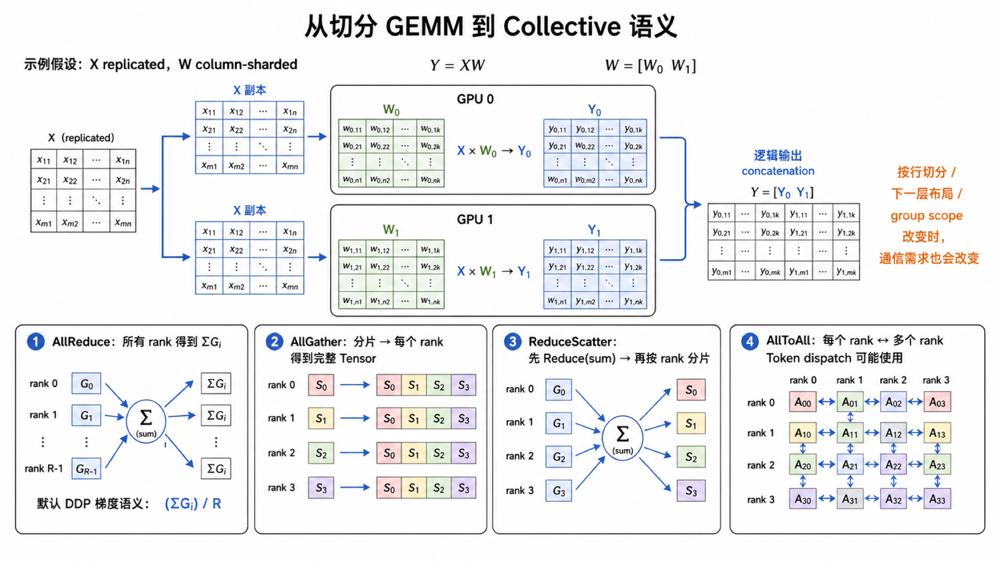
图 1：从矩阵分片到集合通信（Collective Communication）——切分 GEMM 产生跨芯片同步依赖，驱动了底层 All-Reduce 与 Reduce-Scatter 高速通信流
1. Scale-up：构建节点内的“逻辑单机”
Scale-up 旨在通过超高密度总线，将同一服务器机箱（或机柜）内部的一组加速器（通常为 8 颗、16 颗或如 NVL72 中的 72 颗 GPU）紧密粘合成一台逻辑上的巨型加速器 ：
互联技术 ：NVIDIA NVLink / NVSwitch 网络、Google TPU ICI（Inter-Core Interconnect）；物理特性 ：双向聚合带宽高达 900 GB/s 至 1.8 TB/s （比传统 PCIe Gen5 高出一个数量级），通信延迟低至数百纳秒；微架构抽象 ：支持硬件级内存直接访问（RDMA）与共享虚拟内存（SVM）。任意两颗 GPU 之间可以通过负载存储指令（Load/Store）直接读取对方的 HBM，无需经过主机 CPU 内存中转。
2. Scale-out：跨越数据中心的横向织网
当算力规模突破单机柜物理容纳极限时，系统必须通过数据中心网络向数千乃至数万颗芯片进行 Scale-out 扩展：
互联技术 ：InfiniBand（IB）无损网络，或基于 RDMA 的融合以太网（RoCEv2）；物理特性 ：目前单网卡物理端口带宽普遍在 400 Gbps 到 800 Gbps （折合单向 50–100 GB/s），比 Scale-up 域的总线带宽低了一个数量级，端到端网络时延通常在数微秒量级；网络拓扑 ：采用无阻塞胖树拓扑（Fat-Tree）或多维超立方体拓扑（Torus），依赖机顶交换机（ToR）与核心导向器交换机完成多级交换。
将什么样的并行切分任务放在超高带宽的 Scale-up 域、将什么样的解耦通信放在相对受限的 Scale-out 域，是现代分布式系统架构师的核心考量。
二、集合通信原语（Collective Communication）
在分布式深度学习中，芯片之间极少发生不可控的随机点对点寻址，绝大多数跨卡通信均表现为高规则、模式化的协同动作。这些动作在软件与硬件底层被形式化为标准的集合通信原语（Collective Communication Primitives） 。
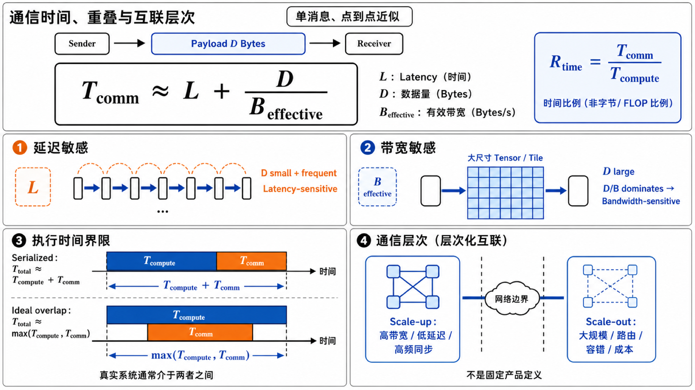
图 2：集合通信算法与网络层次映射——环形（Ring）与树形（Tree）算法在物理层级中交织，通信耗时取决于数据体量、网络链路带宽与链路物理延迟
核心集合通信原语数据流动语义:
┌─────────────────┬───────────────────────────────────┬─────────────────────────────────┐
│ 原语名称 │ 数据流向逻辑 │ 大模型典型应用场景 │
├─────────────────┼───────────────────────────────────┼─────────────────────────────────┤
│ All-Reduce │ 所有卡贡献数据求和，最终所有卡得到│ 张量并行 (TP) 前向输出合并、 │
│ │ 完整规约总和 │ 传统数据并行 (DP) 反向梯度聚合 │
├─────────────────┼───────────────────────────────────┼─────────────────────────────────┤
│ Reduce-Scatter │ 所有卡贡献数据求和，但将总和切分，│ ZeRO-3 / FSDP 反向梯度规约分片 │
│ │ 每张卡仅保留自己的一小部分分片 │ │
├─────────────────┼───────────────────────────────────┼─────────────────────────────────┤
│ All-Gather │ 每张卡贡献自己的本地小分片，拼接后│ ZeRO-3 / FSDP 前向计算前重构全量│
│ │ 广播，最终所有卡得到全量完整张量 │ 模型参数权重 │
├─────────────────┼───────────────────────────────────┼─────────────────────────────────┤
│ All-to-All │ 每张卡将自己内部的不同分片，分别发│ 混合专家模型 (MoE) 跨卡分发与 │
│ │ 送给其余不同卡 (全重定向转置) │ 收集不同 Token 激活 (Dispatch) │
└─────────────────┴───────────────────────────────────┴─────────────────────────────────┘
Ring All-Reduce 的数学带宽模型
以集群中最常用的 Ring All-Reduce（环形规约） 算法为例，设参与通信的物理芯片数量为 $P$，待规约的张量大小为 $S$ 字节，物理链路单向传输带宽为 $B$：
算法在物理逻辑上将 $P$ 颗芯片组织成闭合环路，分两个阶段执行：
Scatter-Reduce 阶段 ：每个节点将自己的张量均分为 $P$ 份，沿环路顺时针传递并累加。经 $P-1$ 步后，每颗卡上各自持有一个切片的最终规约和；All-Gather 阶段 ：各节点将自己手中算好的规约和切片沿环路顺时针广播。经 $P-1$ 步后，所有卡均获得完整全局规约结果。
在每个阶段中，每个节点每一步传输的数据量为 $\frac{S}{P}$。整个算法在两阶段内累计传输的数据总量严格为：
\[\text{Traffic}_{\text{Ring}} = 2 \times \frac{P - 1}{P} \times S\]
其通信时延公式为：
\[T_{\text{comm}} = 2(P - 1) \times \alpha + 2 \times \frac{P - 1}{P} \times \frac{S}{B}\]
其中 $\alpha$ 为每次启动传输的链路固有物理时延。
注意到当芯片数量 $P$ 较大时，系数 $\frac{P-1}{P} \rightarrow 1$。这意味着：Ring All-Reduce 搬运的数据总量几乎与参与节点数 $P$ 无关，通信时间完全由张量体积 $S$ 与单向带宽 $B$ 决定 。这奠定了超大集群数据并行线性扩展的数学基石。
三、3D/4D 混合并行模式与物理网络拓扑的严格映射
面对参数量数千亿的巨型 Transformer，单一种类的并行模式已无法满足需求。工业界普遍采用由张量并行（TP）、流水线并行（PP）、数据并行（DP/FSDP）与专家并行（EP）构成的 3D/4D 混合并行体系 。
分布式系统设计的精髓，在于将不同并行的通信强度与物理网络的带宽层级进行精密契合：
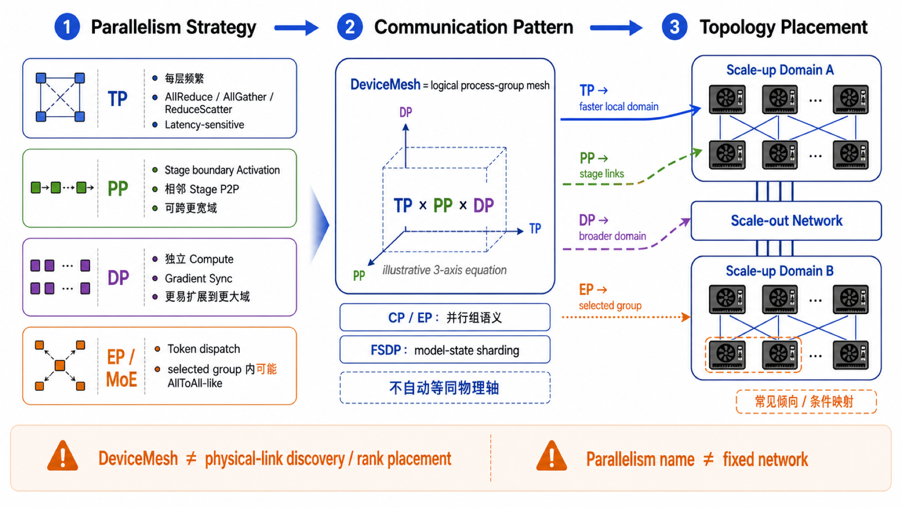
图 3：分布式并行模式与物理网络拓扑的严格层次映射——高频 TP 锁死在 Scale-up 域，点对点 PP 穿透 Scale-out 边界，跨卡 MoE 则对双分带宽发起严酷挑战
混合并行模式与网络物理层级的映射矩阵:
┌───────────┬──────────────┬──────────────┬──────────────────┬──────────────────────────┐
│ 并行模式 │ 通信频率 │ 通信数据量 │ 核心集合通信原语 │ 必须绑定的物理网络层级 │
├───────────┼──────────────┼──────────────┼──────────────────┼──────────────────────────┤
│ **TP** │ 极高 │ 中等 │ All-Reduce │ **Scale-up 域** │
│ (张量并行)│ (每层 2 次) │ (激活张量) │ (每步数十纳秒级) │ (NVLink / TPU ICI 必须!) │
├───────────┼──────────────┼──────────────┼──────────────────┼──────────────────────────┤
│ **PP** │ 极低 │ 极小 │ P2P (Send/Recv) │ **Scale-out 域** │
│ (流水并行)│ (阶段边界) │ (边界激活值) │ (点对点异步排程) │ (跨网络节点 / 跨机柜) │
├───────────┼──────────────┼──────────────┼──────────────────┼──────────────────────────┤
│ **DP/FSDP**│ 中等 │ 极大 │ All-Gather / │ **混合层级** │
│ (数据并行)│ (反向/每层) │ (全量模型梯度│ Reduce-Scatter │ (节点内 NVLink 优先， │
│ │ │ 或模型参数) │ │ 跨节点分级重叠) │
├───────────┼──────────────┼──────────────┼──────────────────┼──────────────────────────┤
│ **EP** │ 极高 │ 极大 │ All-to-All │ **强依赖无阻塞全双工带宽**│
│ (专家并行)│ (每个 MoE 层)│ (动态 Token) │ (全球换位重定向) │ (逼迫 Scale-up 域无限扩大│
└───────────┴──────────────┴──────────────┴──────────────────┴──────────────────────────┘
1. 张量并行（TP）：为什么绝不可跨出 NVLink 域？
张量并行（如 Megatron-LM）将单个注意力层内部的矩阵乘法进行纵向或横向切分：
Attention 中的 $W_Q, W_K, W_V$ 沿列切分（Column Parallel），输出投影矩阵 $W_O$ 沿行切分（Row Parallel）；
在计算前向输出时，多张卡计算出的局部结果必须立即执行一次全局 All-Reduce 进行加和合并。
在每个标准的 Transformer Block 内部，前向传播需要执行 2 次 All-Reduce（Attention 一次，MLP 一次），反向传播同样需要执行 2 次 All-Reduce。这意味着一个 80 层的模型在单次前向与反向流水中，必须发生整整 320 次全局集合通信 ！
由于通信发生在微架构算子间隙，通信耗时直接串行阻塞在算子计算流中。如果将 TP 放置在跨节点的 RoCE/IB 网络上，每次几十微秒的网络延迟与受限带宽会瞬间将有效计算利用率（MFU）击穿至个位数。因此，张量并行的大小（TP Size）必须严格小于等于单节点 Scale-up 域的最大物理芯片数（通常 $\text{TP} \le 8$） 。
2. 流水线并行（PP）：轻量通信跨越机柜边界
流水线并行将网络的不同层（例如 0–19 层分配给 Stage 0，20–39 层分配给 Stage 1）划分到不同的物理机器上。
在流水线执行中，Stage 0 仅在计算完成当前微批次（Micro-batch）后，向下一个 Stage 发送切片张量边界处的激活值（Activation）。这种通信是纯粹的点对点单向通信（Point-to-Point P2P） ，通信量极小且频率较低，天然适合跨越 Scale-out 的网络交换机边界进行机柜级连接。
3. 专家并行（EP）：MoE 对集群双分带宽的极限榨取
在混合专家模型（MoE，如 Mixtral、DeepSeek-V3）中，系统通常将数百个独立 Expert 分散部署于不同的物理卡上。在每个 MoE 层内部，Router 门控网络动态决定每个 token 应该被分发至哪一个 Expert。
此时，来自不同并发请求的 token 必须跨越全局网络，被精准定向发送至目标专家所在的物理卡上，计算完成后再将输出原路收集。这种全换位通信（All-to-All） 在数学上要求网络每一颗芯片在同一时钟周期内，同时向全集群其余所有芯片全速双向对发数据。
All-to-All 将数据中心网络的双分带宽（Bisection Bandwidth） 推向了绝对极限。任何网络拥塞或非平衡交换机排队（Incast 冲突），都会瞬间造成严重的跨卡长尾停顿。这直接催生了以 NVIDIA NVL72 为代表的极端硬件演进——通过背板铜缆将整整 72 颗 GPU 封装进同一个单机柜 Scale-up 域，提供高达 130 TB/s 的无阻塞全互联双向带宽，专为 MoE 的全局 All-to-All 扫清物理通信墙。
四、通信与计算重叠（Communication-Computation Overlap）
在顶尖 AI 基础设施的性能调优中，衡量工程水准的终极标准不是“通信跑得多快”，而是“能否让系统完全感觉不到通信的存在” 。
这依赖于深度软硬件协同的通信与计算重叠（Overlap） 流水线设计：
未重叠的串行执行流 (严重通信气泡):
[ 计算 Layer N 反向梯度 ] ──> [ All-Reduce 梯度通信 (GPU 算力空转) ] ──> [ 计算 Layer N-1 反向 ]
完美重叠的异步流水执行流 (Zero-Bubble Communication):
┌── 计算 Layer N 反向梯度 ──┐
└───────────────────────────┴── 计算 Layer N-1 反向 ──┬── 计算 Layer N-2 反向 ──┐
│ (异步通信引擎在后台运转) │ (异步通信引擎在后台运转) │
└── All-Reduce Layer N ──┴── All-Reduce Layer N-1 ──┘
以数据并行（ZeRO / FSDP）的反向传播为例：
当系统计算出当前层（Layer N）的参数梯度时，控制流立即发射一条异步 Reduce-Scatter 指令交由通信引擎处理；
算力核心不停顿，立即投入前一层（Layer N-1）的反向链式求导计算；
只要前一层的浮点计算耗时，大于等于当前层梯度的网络传输耗时，昂贵的分布式网络通信开销便被 100% 隐藏在计算流内部，集群整体吞吐能够近乎线性地逼近理论峰值。
五、架构启示与性能权衡
从单芯片演化至 AI Cluster，系统工程的复杂性发生了数量级的跃升：
阿姆达尔定律在网络维度的再现 ：在万卡集群中，哪怕只有 1% 的通信算子无法与计算重叠，这 1% 的网络串行延迟也会随着集群规模放大，成为锁死数千颗加速卡运算效率的主导瓶颈。木桶效应与网络长尾（Stragglers） ：在集合通信中，All-Reduce 的完成时间严格取决于集群中最慢的那一张卡。单根光纤的光模块误码、单个网卡降频、微秒级的丢包重传，都会在集合通信屏障（Barrier）处被急剧放大，引发成百上千颗芯片的连锁停顿。软硬件共同定义集群拓扑 ：没有脱离并行算法的纯粹网络硬件，也没有脱离网络拓扑的纯粹分布式软件。现代 AI Infra 工程师必须同时精通 Transformer 算子因果依赖与交换机队列流量控制，方能在物理世界交付高利用率的大模型算力集群。
六、架构要点小结与工程思考 (Architectural Takeaways & Engineering Exercises)
核心架构要点
系统维度的质变 ：分布式大模型集群的性能天花板由计算、存储与通信三要素协同定义。跨芯片通信墙取代内存墙成为集群系统的第一制约。层级化网络拓扑 ：节点内 Scale-up 域（NVLink/ICI）交付超大带宽与超低延迟，承载高频张量切分；节点间 Scale-out 域（IB/RoCE）构建胖树网络，承载大吞吐流水与数据扩展。集合通信是分布式基石 ：All-Reduce、Reduce-Scatter、All-Gather 与 All-to-All 构成了并行算法的数学抽象；Ring 算法等高效拓扑使得大张量通信开销与节点数量解耦。混合并行与物理拓扑严密映射 ：TP 严禁跨出 Scale-up 边界，PP 穿透跨节点网络，MoE 逼迫集群双分带宽极致放大。
工程思考题
思考题 1（量化推导：Ring All-Reduce 通信耗时与扩展瓶颈） ：
计算此算法在单次反向迭代中，每颗卡所需实际通过网卡发送的总数据量。
忽略链路物理寻址时延 $\alpha$，计算该集合通信的理论耗时下限。若单步反向计算耗时为 $1.5\ \text{s}$，分析该网络配置能否通过异步流水实现完全的通信掩盖？
参考解析提示 （点击展开 / 折叠）
每卡实际数据发送量推算 ：
\[\text{Traffic}_{\text{per_rank}} = 2 \times \frac{P - 1}{P} \times S = 2 \times \frac{63}{64} \times 140\ \text{GB} \approx 275.6\ \text{GB}\]
通信耗时与重叠分析 ：
\[T_{\text{comm}} = \frac{275.6\ \text{GB}}{50\ \text{GB/s}} \approx 5.51\ \text{s}\]
系统瓶颈剖析 ：由于单步计算耗时仅为 $1.5\ \text{s}$，而纯网络通信耗时长达 $5.51\ \text{s}$（超过计算耗时 3.6 倍！），系统发生极度严重的 Communication-bound 。即便使用最完美的异步重叠流水，依然会有高达 $5.51 - 1.5 = 4.01\ \text{s}$ 的纯通信网络气泡，GPU 将有超过 $70\%$ 的时间在停顿等待网络传输，分布式线性加速比彻底崩溃。这证明了在跨节点集群中，为什么必须引入 ZeRO/FSDP 分级通信或加大批次以拉长计算时间。
思考题 2（架构设计：NVL72 机柜级设计的微架构必然性） ：NVL72 （将整机柜 72 颗 GPU 通过内部 NVLink 背板连接成一个巨大的 Scale-up 域）。请结合 Mixture-of-Experts（MoE）模型中的 All-to-All 集合通信特征，阐明为什么传统的“8 卡 NVLink + 跨机 IB 网络”方案在应对超大规模 MoE 模型时会遭遇严重的网络瓶颈，而 72 卡统一 Scale-up 域能带来决定性的效率突破？
参考解析提示 （点击展开 / 折叠）
传统 8 卡节点应对 MoE 的双分网络崩溃 ：
NVL72 统一内存域的架构红利 ：整个 MoE 的全量路由通信可以 100% 封闭在单机柜的高速 NVLink 域内完成 ，彻底消除了跨机交换机拥塞与网卡协议栈开销，从体系结构层面彻底解除了 MoE 算法的通信墙诅咒。
七、后续延伸：软件栈如何将一切连为一体
从单颗芯片的矩阵运算，到跨越数万颗芯片的集群互联，我们已经完整走完了现代 AI 计算系统的全部硬件蓝图。
然而，硬件只是冰冷的硅片与光纤。如何将算法科学家在 Python 中写下的 torch.matmul(A, B) 或一段高层分布式并行配置，跨越数个抽象层次，精确转化为硬件寄存器的指令发射、片上 SRAM 的 Tiling 切分、异步 TMA 硬件搬运，以及跨越上千网卡的 RDMA 集合通信？
这便引申出了整个计算体系的“灵魂中枢”——Lesson 9：AI 芯片软件栈——从 PyTorch/JAX 到 CUDA、ROCm 与 XLA
← 上一课 下一课 →
Lesson 9：AI 芯片软件栈——从 PyTorch/JAX 到 CUDA、ROCm 与 XLA
在前八课中，我们构建了从单芯片微架构到万卡超级计算集群的完整物理全景：我们看到了矩阵乘加（MAC）在硅片上的硬件实现、存储层级金字塔与内存墙的制约、Training 与 Decode 的阶段负载差异、GPU 的 SIMT 延迟隐藏、TPU 的脉动数据流、多元异构 DSA 架构、4 位微缩放精度，以及支撑分布式集群的 Scale-up/Scale-out 互联体系。
然而，摆在工程师面前的最后一座高山是：硬件本身只是冰冷、沉默的物理电路。
当算法工程师在 Python 中轻描淡写地敲下一行 y = model(x) 时，高层的人类数学意图与底层纳秒级的晶体管开关之间，存在着巨大的抽象鸿沟（Abstraction Gap） 。如何将这行代码无缝、高效且确定性地转化为 SM 寄存器的微指令发射、Shared Memory 的分块 Tiling 搬运、异步 TMA 硬件流水以及跨节点的 RDMA 集合通信？
这便是AI 芯片软件栈（AI Chip Software Stack） 的终极使命。在现代计算系统中，软件栈从来不是硬件之上的薄薄外壳，它与微架构深度缠绕共生，是决定芯片硬件理论算力能否兑现为真实生产力的灵魂中枢 。
一、软硬件之间的抽象距离与软件栈五层模型
现代深度学习软件系统是一个严密分层、各司其职的高阶工程体系。从高层算法表达到底层微架构执行，软件栈自顶向下清晰地划分为五个层级：
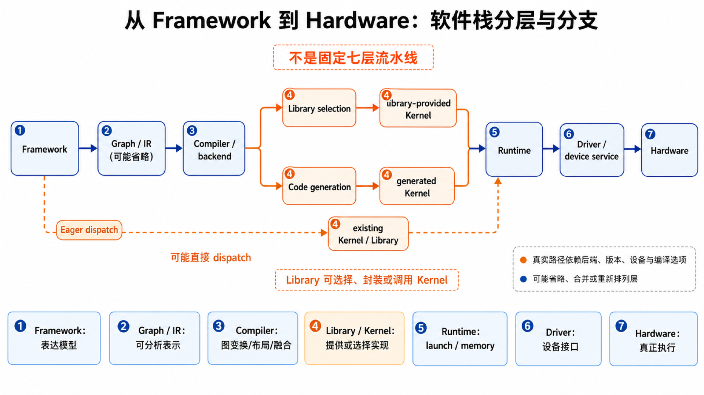
图 1：AI 芯片软件栈的五层分级模型及其生态分支——从高层声明式框架，到计算图与中介表示，再到图编译器、高性能算子库与底层微架构驱动
┌────────────────────────────────────────────────────────────────────────┐
│ 1. 高层算法表达框架 (Framework Level) │
│ 代表: PyTorch, JAX, TensorFlow │
│ 职责: 面向算法科学家，提供张量声明、自动微分、动态图构建与高层并行 API │
├────────────────────────────────────────────────────────────────────────┤
│ 2. 计算图与中介表示 (Graph & Intermediate Representation, IR) │
│ 代表: Torch FX, StableHLO, MLIR, ONNX │
│ 职责: 将动态 Python 代码捕获为平台无关的有向无环图 (DAG)，剥离语言开销│
├────────────────────────────────────────────────────────────────────────┤
│ 3. 图编译器与代码生成器 (Compiler & Code Generation) │
│ 代表: torch.compile (Inductor), OpenXLA, Triton, TVM │
│ 职责: 全局算子融合、内存生命周期规划、自动分块代码生成与硬件指令映射 │
├────────────────────────────────────────────────────────────────────────┤
│ 4. 高性能数学算子库 (Accelerated Math Libraries & Hand-tuned Kernels) │
│ 代表: cuBLAS, CUTLASS, FlashAttention, rocBLAS, Composable Kernel │
│ 职责: 专家级手写汇编特化算子，为标准 GEMM 与注意力提供物理性能天花板 │
├────────────────────────────────────────────────────────────────────────┤
│ 5. 硬件驱动与底层运行时 (Driver & Low-Level Hardware Runtime) │
│ 代表: NVIDIA CUDA Driver/Runtime, AMD ROCm KFD, Google PJRT │
│ 职责: 设备显存物理分配、硬件流 (Streams) 调度、上下文切换与固件通信 │
└────────────────────────────────────────────────────────────────────────┘
在这套分层模型中，每一层都在向下屏蔽底层硬件的异构细节，同时向上为上一层提供抽象的计算接口。然而，跨越层级的过程并非免费，每一次抽象都伴随着开销与信息丢失。优秀的系统软件工程，核心就在于在保持高即可编程性的同时，将算法意图无损地映射至底层最极致的硬件物理流水中 。
二、编译器的终极核心任务：消灭数据搬运（Data Movement）
在许多人的传统印象中，编译器的主要任务是“将高级语言翻译为汇编机器码”。而在现代 AI 加速芯片的语境下，编译器的核心使命发生了根本转向：它最重要的工作是最小化芯片内部与片外总线上的数据搬运（Data Movement） 。
正如 Lesson 2 中所揭示的，在现代工艺下，从片外 HBM 读写一个数值的能耗与时延比执行算术运算高出数百倍。在传统的 Python 解释执行（Eager Mode）下，连续的算子会导致中间张量频繁往返全局显存：
# 传统 Eager 模式执行一连串算子:
def unoptimized_block(x, w, bias, residual):
y1 = torch.matmul(x, w) # Kernel 1: 读 x, w -> 计算 -> 写回 HBM
y2 = y1 + bias # Kernel 2: 读 y1, bias -> 计算 -> 写回 HBM
y3 = torch.relu(y2) # Kernel 3: 读 y2 -> 计算 -> 写回 HBM
y4 = y3 + residual # Kernel 4: 读 y3, residual -> 计算 -> 写回 HBM
return y4 # 内存墙极其严重!
现代图编译器（如 PyTorch Inductor 或 XLA）通过捕获计算图，在全局视角下执行高级变换：
算子垂直与水平融合（Operator Fusion） ：将连续的矩阵乘加、偏置相加、激活函数与残差连接合并入单个硬件 Kernel 内部。输入数据从 HBM 仅被读取一次，随后全部在片上寄存器或 Shared Memory 内部完成全部数学运算，最终结果一次性写回。这直接抹除了 3 次全局显存的往返读写；静态内存规划（Static Memory Planning） ：提前推演全图张量的生命周期，对互不重叠的临时激活缓冲区实施显存地址复用，彻底消除了运行期频繁调用显存分配器导致的碎片与性能抖动；针对硬件维度的自动分块（Auto-Tiling） ：编译器根据目标芯片的物理 SRAM 容量与 Tensor Core/MXU 规格，自动搜索并生成最优的 $T_M \times T_N \times T_K$ 分块循环代码，确保片上复用率达到最高。
三、三大软件生态路径的范式透视
全球 AI 计算系统的软件版图，高度收敛为三条代表不同技术哲学的生态路线：
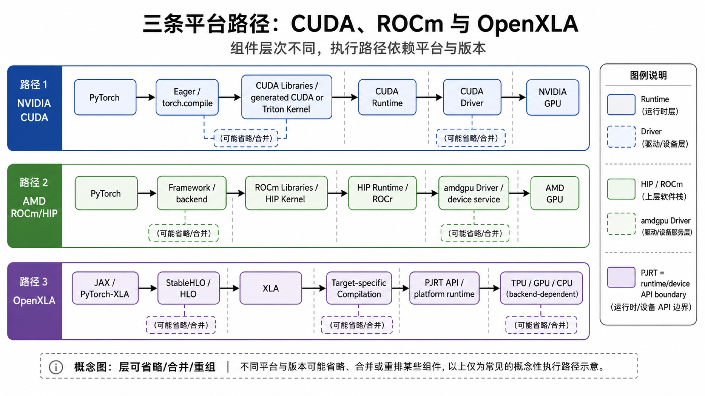
图 2：三大平台软件路径深度对比——NVIDIA 拥有从 Eager 到 Triton/Inductor 的深厚护城河，AMD 依靠 HIP 与开源栈对齐追赶，Google 则以 JAX、StableHLO 与 XLA 构建统一函数式图编译
三大平台软件栈技术路线与核心组件对比:
┌───────────┬─────────────────────┬─────────────────────┬─────────────────────┐
│ 生态分支 │ NVIDIA CUDA 路线 │ AMD ROCm 路线 │ Google OpenXLA 路线 │
├───────────┼─────────────────────┼─────────────────────┼─────────────────────┤
│ 编程范式 │ 命令式动态图 + JIT │ 源码级对齐 CUDA │ 纯函数式变换 + AOT │
│ 核心驱动层│ CUDA Driver / C++ │ ROCm KFD / ROCR │ PJRT 统一硬件接口 │
│ 图中间表示│ Torch FX / AOTGraph │ Torch FX / MLIR │ StableHLO / HLO │
│ 核心编译器│ Inductor / Triton │ Inductor / Triton │ XLA (CPU/GPU/TPU) │
│ 高性能底座│ cuBLAS / CUTLASS │ rocBLAS / CK │ 编译器内建生成算子 │
│ 核心护城河│ 20 年极致工程沉淀 │ 快速兼容 CUDA 生态 │ 纯净端到端编译能效 │
└───────────┴─────────────────────┴─────────────────────┴─────────────────────┘
1. NVIDIA 路径：深厚的生态护城河与现代编译演进
NVIDIA 的统治地位，本质上是其历经二十年构建的 CUDA 开发者护城河 。NVIDIA 的软件策略始终兼顾“极佳的开发者体验”与“极致的底层吞吐”：
经典库生态（cuBLAS / CUTLASS） ：NVIDIA 投入顶级体系结构专家，用纯手写汇编将标准 GEMM 与卷积在每一代微架构上优化至逼近光速极限（Speed-of-Light）；动态图与静态编译的融合（torch.compile） ：在早期，PyTorch 的动态 Eager 模式虽然易用但性能受限。PyTorch 2.0 引入了以 TorchDynamo 为核心的图捕获引擎与 Inductor 编译器后端，配合由 OpenAI 开发的 Triton 中间语言，使得普通工程师无需编写繁复的 CUDA C++ 汇编，仅用 Python 即可编写出自动融合、性能直逼手写专家级 Kernel 的高性能算子；软硬件深度协同迭代 ：当硬件新增 TMA（张量存储加速器）或异步屏障时，CUDA 软件栈（如 CUTLASS 3.x）总能在第一时间交付对应的软件原语，使硬件创新在最短时间内被上层模型开发者兑现。
2. AMD 路径：HIP 源码移植与开源生态追赶
面对庞大的 CUDA 代码资产，AMD 做出了务实的战略选择：不推翻 CUDA 编程习惯，而是在源码级别进行全面对齐与兼容 。
HIP（Heterogeneous-Compute Interface for Portability） ：AMD 推出的 C++ 运行时 API，其语法与 CUDA 几乎一一对应（例如将 cudaMalloc 映射为 hipMalloc）。通过配套的 hipify 工具链，开发者能够以极低的人力成本将数百万行现有 CUDA 代码无缝转换为可在 AMD GPU 上编译执行的代码；可组合算子库（Composable Kernel, CK） ：AMD 自研的现代 C++ 模板元编程算子库，采用类似 CUTLASS 的分层思想，支持在编译期自由组合矩阵分块、数据布局与低精度运算；生态现实挑战 ：虽然 HIP 解决了“代码能不能跑”的问题，但“跑得是否足够快”则依赖极其漫长的软硬件微调。深度优化一个先进算子往往需要对芯片的 Cache 层次、Wavefront 调度甚至寄存器分配器进行长达数月的底层调优。
3. Google 路径：函数式纯粹性与全图编译器（JAX / OpenXLA）
Google 走了另一条截然不同的学者型路线：彻底拥抱全图编译与函数式编程范式 。
JAX 体系结构 ：完全放弃命令式状态变更，将模型抽象为纯数学函数。通过 jit（即时编译）、grad（自动求导）、vmap（自动向量化批处理）以及 pmap（跨芯片分布式并行）四个核心高阶变换，以极其优雅简洁的数学形式表达最复杂的分布式训练；StableHLO 标准中间表示 ：Google 将图编译器的前端与后端解耦，推动了 StableHLO（High-Level Operations） 规范的开源标准化。上层框架（JAX、PyTorch-XLA）只需将模型降低（Lowering）为 StableHLO，底层的 XLA 编译器 即可自动为 TPU、NVIDIA GPU 或 CPU 生成最优机器码；PJRT 统一运行时 ：为不同的硬件厂商定义了标准化的插件接口，使得新出现的 AI 加速芯片只需实现一套 PJRT 驱动，即可直接接入完整的 JAX/XLA 生态。
四、同一个算子，为什么在不同软件栈下性能相差数倍？
在实际工程生产中，经常出现一个耐人寻味的现象：在同一张物理 GPU（例如 H100）上运行数学定义完全相同的同一个操作（如 torch.matmul 或 Attention），采用不同的软件执行路径，其实测端到端吞吐可能产生数倍的巨大鸿沟 。
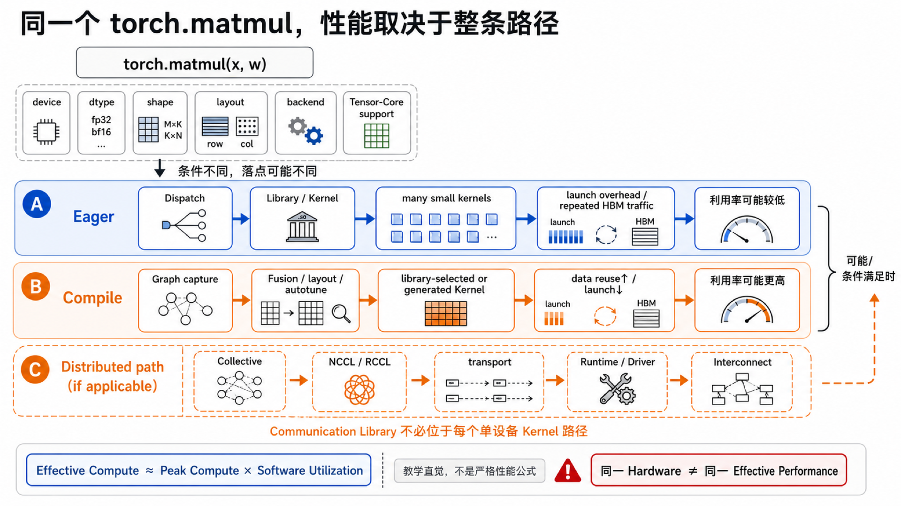
图 3：同一个算子在不同软件栈路径下的执行轨迹分化——未经优化的 Eager 路径遭遇高昂内存往返与调度开销，而经图编译与专家级 Kernel 融合的路径能够直接逼近硬件物理极限
同一计算在不同软件执行路径下的物理行为对照:
┌─────────────────┬───────────────────────────────────┬─────────────────────────────────┐
│ 执行路径 │ 微架构物理行为 │ 最终硬件有效性能 (MFU) │
├─────────────────┼───────────────────────────────────┼─────────────────────────────────┤
│ 1. 朴素 Eager │ 频繁触发 Python 解释器开销，算子 │ 极低 (通常仅 10%~20%) │
│ 逐算子调用 │ 间中间张量频繁往返片外 HBM，受内存│ 严重的显存带宽瓶颈，流水线停顿 │
│ │ 墙完全制约 │ │
├─────────────────┼───────────────────────────────────┼─────────────────────────────────┤
│ 2. 传统调用 │ 矩阵乘法部分调用专家级 cuBLAS，性能│ 中等 (约 35%~50%) │
│ 标准库 │ 良好；但前后非线性激活依然独立存 │ GEMM 计算高效，但依然存在算子间 │
│ │ 在，产生额外数据搬运 │ 的显存往返开销 │
├─────────────────┼───────────────────────────────────┼─────────────────────────────────┤
│ 3. 图编译融合 │ 全图消除多余显存读写，Triton 自动 │ 极高 (可达 60%~75% 以上) │
│ (Inductor / │ 搜索最优分块参数，充分释放 Tensor │ 逼近芯片物理极限，算力单元与 │
│ FlashAttn) │ Core 吞吐，软硬件重叠完美执行 │ 访存总线协同达到平衡饱和 │
└─────────────────┴───────────────────────────────────┴─────────────────────────────────┘
以自然语言处理中最关键的 FlashAttention 为例：它的核心贡献根本没有修改注意力机制的数学逻辑（输出数学结果与传统 Attention 完全一致），其唯一的突破在于软件层面彻底重构了数据搬运流 。通过将 Softmax 的在线规约（Online Softmax）与矩阵乘法在片上 SRAM（Shared Memory）内部紧密结合，FlashAttention 消除了传统注意力在显存中读写巨型 $S \times S$ 注意力矩阵的物理动作，单凭纯软件算法工程，便直接在同等硬件上榨取出高达 2–4 倍的实际速度提升与数倍的显存节省。
这无可辩驳地揭示出计算系统的本质规律：硬件决定了算力与带宽的物理天花板，而软件栈决定了系统究竟能将这块天花板兑现多少。
五、软硬件协同设计（Hardware–Software Co-design）时代
随着半导体工艺物理缩放逼近极限，单纯依靠“硬件架构师闭门造芯片、造好后扔给软件工程师去适配”的传统开发模式已经彻底终结。当今世界最顶尖的 AI 计算系统，无一例外建立在软硬件协同设计（Hardware–Software Co-design） 的现代工程范式之上。
现代软硬件协同设计的双向反馈闭环:
┌─────────────────────────────────┐ ┌─────────────────────────────────┐
│ 算法与软件栈需求 (Software Driven)│ ──向硬件提出需求─>│ 硬件微架构演进 (Hardware Design) │
│ - 激活离群值需要微块缩放保护 │ │ - Blackwell 硬件支持 NVFP4 算子 │
│ - 注意力机制需要片上自回归规约 │ │ - Hopper 硬件固化 TMA 异步拷贝 │
│ - 跨节点 MoE 需要超大双分互联 │ │ - NVL72 物理单机柜 72 卡统一域 │
└─────────────────────────────────┘ └─────────────────────────────────┘
▲ │
└──────────────────释放全新算法范式────────────────┘
算法反哺硬件 ：Transformer 架构对巨量乘加的极端收敛，催生了 Tensor Core 与脉动阵列；长上下文对显存带宽的压迫，催生了 HBM3e 的巨额堆叠与 NVL72 机柜级扩展；低精度算法中对微缩放块的探索，直接驱动了新一代芯片在硬件内部物理固化微缩放解码电路。硬件赋能算法 ：当芯片硬件交付了 TMA 异步拷贝引擎与数千 TB/s 的片上带宽后，软件编译器能够从容实现更加激进的算子融合流水，从而使参数量达到万亿级别的超前大模型成为现实。
六、全课程知识体系大收敛：从工作负载到计算系统
至此，《AI 芯片与大模型计算系统》全套 9 篇课程的核心拼图在软件栈的高度上实现了大一统收敛。回顾整个体系，我们始终在沿着一条严密的因果链条向前推演：
工作负载本质 (Lesson 1: Workload & GEMM)
↓ 决定了计算以海量乘加 (MAC) 为主导，引申出算术密度与 Roofline 模型
存储子系统制约 (Lesson 2: Memory Wall & Data Movement)
↓ 面对物理总线能耗与时延墙，必须构建存储金字塔并通过 Tiling 分块实现片上复用
模型阶段分水岭 (Lesson 3: Training / Prefill / Decode & KV Cache)
↓ 因果依赖导致自回归单步解码退化为 GEMV 访存瓶颈，KV Cache 带来双重显存压迫
主流并行体系 (Lesson 4: GPU Throughput Architecture)
↓ 以 SIMT、Warp 调度与海量并发线程动态隐藏访存延迟，并用特化 Tensor Core 爆发算力
专用数据流范式 (Lesson 5: TPU & Systolic Array)
↓ 剥离动态调度开销，让矩阵乘法直接成为机器物理中心，依靠脉动阵列与 XLA 编译强排
多元架构与边界重塑 (Lesson 6: AMD / Trainium / Cerebras / Groq)
↓ 在先进封装、云原生定制、晶圆级超大芯片与纯 SRAM 确定性时钟中寻找工程平衡
数值精度杠杆 (Lesson 7: Low-Precision & Microscaling)
↓ 从 FP32、BF16 到 FP8 与微缩放 NVFP4，以极轻微数值折损换取显存、带宽与算力的乘数级爆发
超大规模互联 (Lesson 8: Scale-up / Scale-out & Clusters)
↓ 跨越单芯片物理天花板，在双层网络中利用集合通信原语与 3D/4D 混合并行构建万卡集群
系统软件中枢 (Lesson 9: Software Stack & Co-design)
↓ 跨越抽象鸿沟，以图编译、算子融合与软硬件协同设计将冰冷硅片最终点化为大模型生产力
未来面对任何一颗全新发布的加速芯片或前沿系统架构时，你已不再需要迷失于纷繁的产品营销参数之中。只需按照本课程建立的九维心智模型，直击其本质：它的目标 Workload 是什么？主要矩阵形状如何？数据存放在哪里？复用机制是什么？采用何种计算体系？数值位宽几何？互联拓扑多大？以及它的软件栈究竟能释放多少真实效能？
七、架构要点小结与工程思考 (Architectural Takeaways & Engineering Exercises)
核心架构要点
软件栈是算力兑现的灵魂 ：硬件参数定义理论峰值，软件栈（框架、IR、编译器、高性能库、驱动）决定真实生产环境下的有效吞吐（MFU）。编译器的核心使命是消除数据搬运 ：算子融合与静态内存规划将原本需要频繁进出全局显存的中间张量锁定在片上，从软件维度攻克内存墙。三大生态范式的并存 ：NVIDIA 依靠深厚护城河与 Triton/Inductor 实现从 Eager 到编译的渐进演进；AMD 依靠 HIP 与开源栈快速对齐生态；Google 依靠 JAX 与 OpenXLA 探索纯函数式图编译的高能效上限。软硬件协同设计成为新常态 ：硬件微架构与算法软件栈处于持续互为因果、双向赋能的螺旋演进之中。
工程思考题
思考题 1（微架构推导：算子融合带来的显存带宽解压） ：
若采用传统的未经融合的 Eager 执行模式，计算运行这三个算子所需要与片外 HBM 交换的理论数据搬运总量，并计算受限于显存带宽的最短纯访存耗时。
若通过编译器（如 torch.compile）将这三个算子融合成单个 Fused Kernel，计算此时的片外 HBM 数据搬运总量与理论纯访存耗时，并求出软件融合带来的访存加速比。
参考解析提示 （点击展开 / 折叠）
思考题 2（架构深度分析：动态即时跟踪（JIT Tracing）与离线整图编译（AOT）的系统级权衡） ：torch.compile（通过 TorchDynamo 在运行时拦截 Python 字节码并动态追踪生成计算图）与 Google XLA（依赖静态预定义的计算图在运行前完成整图优化与内存分配）代表了两种截然不同的编译哲学。请结合现代大模型在线推理系统（涉及变长 Prompt、动态组批、分支逻辑与投机解码）的工程复杂性，对比这两种编译机制在“系统通用灵活性”与“极致物理执行效率”之间的深刻权衡。
参考解析提示 （点击展开 / 折叠）
torch.compile 的动态跟踪优势与代价优势 ：深度尊重 Python 动态特性，通过字节码拦截（Bytecode Frame Evaluation）仅在检测到张量运算时进行局部局部图提取（Sub-graph capture）。当遇到 Python 动态控制流、第三方库或复杂数据结构时，能够自动安全地降级回退（Guard Fallback）到 Python 原生执行，对动态 Batch 与动态序列长度展现出极高的工程兼容性与灵活性； 代价 ：由于图边界被动态逻辑割裂，编译器难以施加最彻底的全图全局内存复用优化，且运行期 Guard 检查会带来微秒级的调度额外开销；XLA 离线整图编译的效率红利与动态困境 ： 优势 ：在假定计算图完全静态封闭的前提下，XLA 能够实施最激进的端到端全局融合与静态内存绝对编址，彻底抹除一切运行时动态调度和内存分配开销，交付极致的硅片能效与执行确定性； 代价 ：在面对在线推理中剧烈变化的序列长度、投机解码中的动态接受长度验证时，静态编译假定被击碎。系统极易触发昂贵的高频重编译（Recompilation Spikes），工程师被迫使用强制分桶补零（Bucket Padding）妥协，反而抵消了部分纯编译优化带来的性能红利。
基线完结确认：全套 9 篇课程已全面遵循系统架构师专家视角，确立了自然严谨、高信息密度、独立深色卡片与默认折叠思考题的统一技术写作基准。
← 上一课 下一课 →
Lesson 10：当代前沿 AI 芯片全景纵览、体系结构押注与系统级对决
在摩尔定律与登纳德缩放（Dennard Scaling）走向物理极限的背景下，通用 CPU 的单线程性能增速已从 20 世纪 80 年代的年均 52% 骤降至当下的不足 3%。2018 年，图灵奖得主 John Hennessy 与 David Patterson 在图灵演讲《计算机体系结构的新黄金时代》中明确指出：通用处理器的收益递减必然倒逼计算系统走向领域专用架构（Domain-Specific Architectures, DSA）。随着以 Transformer 为代表的大语言模型以指数级吞吐需求横扫全球数据中心，现代计算机体系结构正式迎来了前所未有的寒武纪大爆发。
从主流的通用大规模并行流水线（NVIDIA 与 AMD GPU）、深耕规则化矩阵数据流的专用脉动阵列（Google TPU 与 AWS Trainium），到突破半导体光刻视场物理极限的晶圆级引擎（Cerebras WSE）以及剥离全部动态调度硬件开销的确定性流式处理器（Groq LPU），当代芯片工程师正在以截然不同的哲学押注重构计算边界。本课作为全课程的综合升华，以完整的硬件微架构、封装互联与系统软件视角，全面梳理当代前沿 AI 加速器的技术路线，并在此基础上建立起全维度的单芯片与机架级系统横向对比矩阵。
1. 算力本质与内存墙终极博弈
大模型工作负载在底层硬件视角呈现为极其规则的张量流：自注意力机制中的 $Q/K/V$ 投影、Attention 矩阵乘、输出 Projection 以及前馈网络（FFN）构成了计算密度的绝对核心，其间穿插着 LayerNorm、RMSNorm、激活函数与残差累加等逐元素算子。训练与前沿推理服务单次完整的生命周期，需要在硅片物理电路上激荡超过 $10^{25}$ 次标量乘加（Multiply-Accumulate, MAC）运算。
然而，大模型在不同运行生命周期中的张量形状（Shape）对硬件资源提出了截然相反的瓶颈约束：
大批次训练（Training）与大型上下文预填充（Prefill） ：模型将海量 token 沿批次维度并发推入各层神经网络。数千个 token 能够同时复用同一组模型权重矩阵，计算形态表现为高度规整的大规模矩阵乘矩阵（GEMM）。此时有效算术密度（Arithmetic Intensity）极高，系统轻松越过硬件平衡拐点并进入计算受限（Compute-bound）区域，直接考验芯片 Tensor Core 或脉动阵列的峰值算力利用率（MFU）；自回归单步解码（Autoregressive Decode） ：自回归生成具有严格的因果时序依赖（Token $N+1$ 的生成必须等待 Token $N$ 的输出），单请求批次坍缩为 $M=1$。矩阵乘法退化为向量内积（GEMV），生成每一个新 token 均需将整网参数从片外显存完整读取一次，同时伴随对极长历史 KV Cache 的全量扫描。算术密度发生量级暴跌，系统死死受困于访存带宽受限（Memory-bound）区域。
大模型工作负载分化与硬件约束:
- Training / Prefill: GEMM -> 权重高度复用 -> 高算术密度 -> 计算受限 (Compute-bound: 考验 Tensor Core 吞吐)
- Autoregressive Decode: GEMV -> 权重复用归零 -> 极低算术密度 -> 带宽受限 (Memory-bound: 考验 HBM 吞吐与容量)
- Serving Optimization: 连续批处理 (Continuous Batching) 将并发请求重新折叠为 GEMM，但随之带来 KV Cache 流量线性剧增
任何芯片微架构的本质设计，都是围绕“数据存放在何处、如何搬运到计算单元、计算单元形态为何、以及多芯片如何规模化互联” 这四大物理支柱展开的系统权衡。
2. NVIDIA GPU：大规模通用并行流水线与全栈生态护城河
NVIDIA GPU 的根本哲学是大规模硬件多线程与动态延迟隐藏 。其技术假定是：由 Host CPU 统一编排调度、通过 CUDA 统一向开发者暴露抽象、并包含数万个并发硬件线程的可编程加速器，是承载高度并行化算法的最通用物理机器。在二十年的代际演进中，NVIDIA 在保持编程模型前向兼容的前提下，持续在流多处理器（Streaming Multiprocessor, SM）内部集成专用的硬件加速原语。
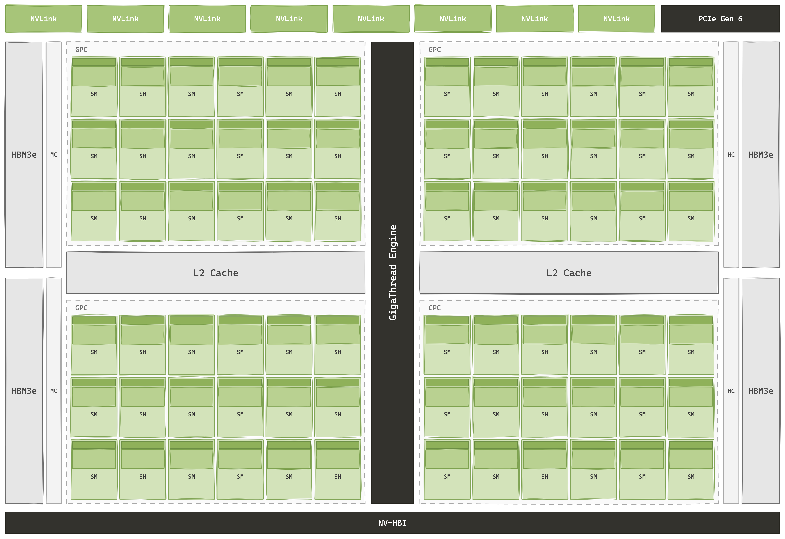
图 1：Blackwell B200 双裸片物理版图——居中的 GigaThread 引擎贯穿双半区，外围环绕 8 组 HBM3e 控制器与高密度 NVLink/PCIe Gen 6 接口，中央 NV-HBI 接口交付 10 TB/s 的全双工无缝拼接带宽
微架构与计算拓扑
在最新的 Blackwell 架构（B200）中，由于单裸片面积已达到台积电光刻极限（Reticle Limit, ~858 $mm^2$），NVIDIA 首次引入了基于台积电 CoWoS-L 的双裸片拼接方案。两枚计算裸片通过高密度 10 TB/s 双向高带宽互连接口（NV-HBI）直接打通，在片上 L2 缓存与统一内存寻址层面表现为单颗逻辑 GPU。
每个物理裸片内部包含贯穿中轴的高吞吐 GigaThread 引擎，负责将全局线程网格（Grid）仲裁分发至数十个图形处理集群（GPC）。GPC 内部进一步划分为多个流多处理器（SM）。每个 SM 内部包含四个独立的子分区（Sub-core），各自拥有专属的 Warp 调度器、指令分派单元、64 KB 标量寄存器堆以及第五代 Tensor Core。
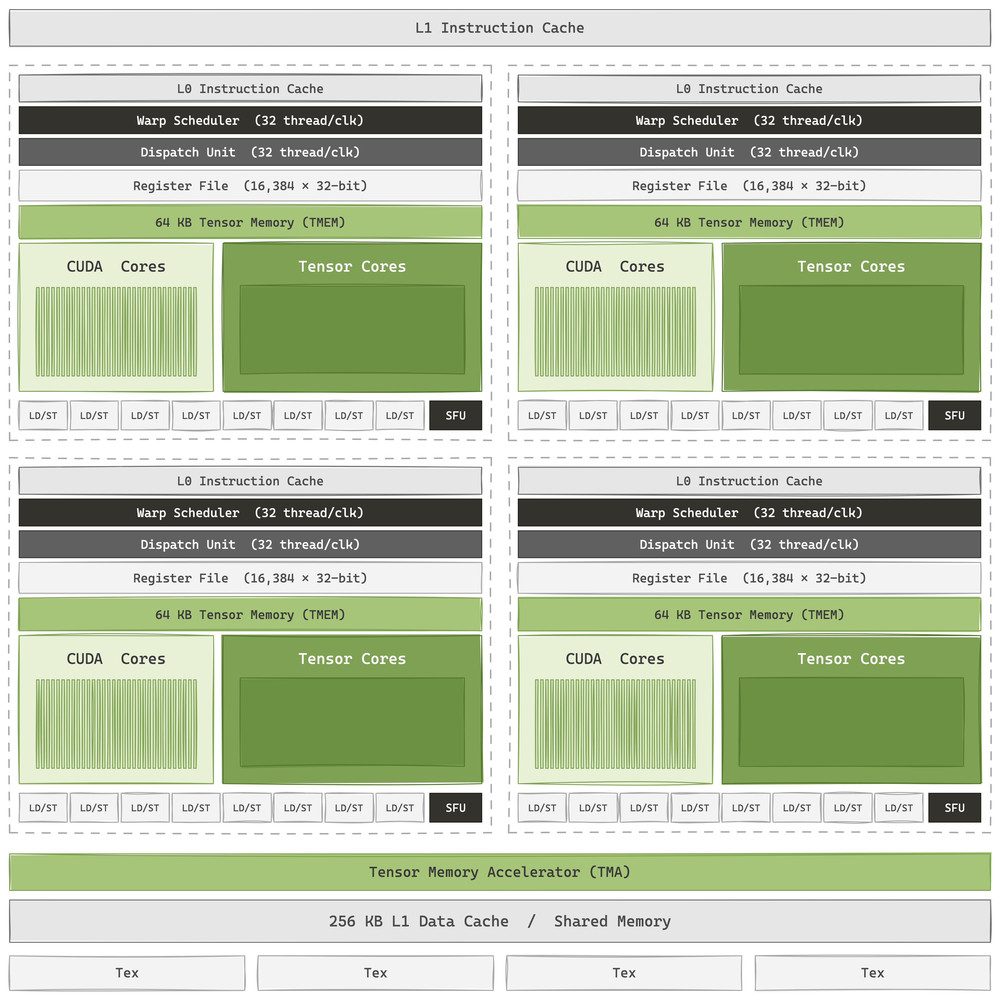
图 2：Blackwell SM 微架构细节——四个子分区共享底部的统一可配置 L1 数据缓存/共享内存（Shared Memory）以及异步张量内存加速器（TMA）
为了彻底解放算术单元的流水线等待，NVIDIA 在硬件层面深度演进了异步数据搬移与线程束专业化（Warp Specialization） ：
Tensor Memory Accelerator (TMA) ：集成专用的硬件 DMA 引擎。SM 无需再由通用线程执行显存寻址计算与多层加载指令，而是直接由 TMA 硬件在 HBM 与片上共享内存（Shared Memory）之间实现多维张量 Tile 的零拷贝异步搬移；Warp Specialization 机制 ：将 SM 内部的一组 Warp 物理指定为专门的 Producer（仅驱动 TMA 发起数据预取并在 Barrier 处等待），另一组 Warp 指定为 Consumer（直接消费已到达片上的数据并满载驱动 Tensor Core 矩阵乘乘加）。软硬件的解耦使指令流水线完全重叠了片外访存等待。
在数值格式上，Blackwell 全面引入了 NVFP4 （E2M1 尾数编码）与基于微缩放（Microscaling）的块缩放因子引擎。在 16 元素或 32 元素微块内，利用局部高动态范围缩放系数保护低位宽下小张量特征的表征精度，从而将 Tensor Core 的矩阵吞吐推向惊人的每芯片 9 PFLOPS（FP4 稠密算力）。
纵向扩展（Scale-up）与横向扩展（Scale-out）
NVIDIA 在系统扩展维度的核心优势在于其构建机架级单一致性域（Rack-scale Coherent Domain） 的工程统治力。
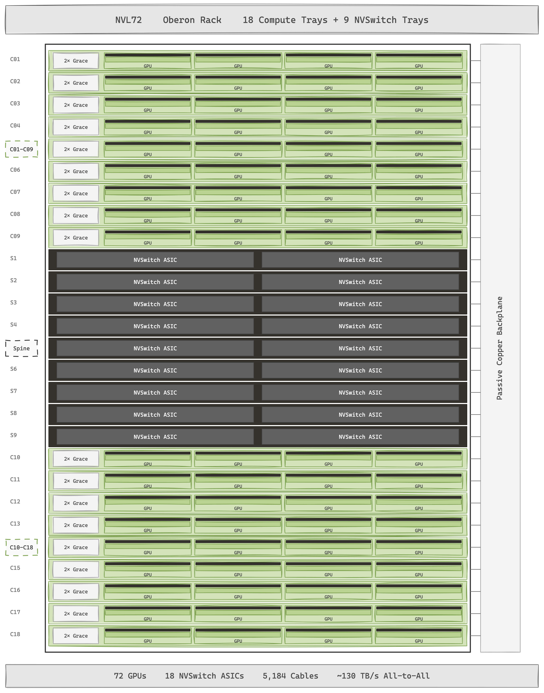
图 3：GB200 NVL72 机架级 Scale-up 拓扑——72 颗 Blackwell GPU 通过机架中部的 9 个 NVSwitch 托盘构成无阻塞 Crossbar 全对全拓扑，整机依赖 5,184 根精密铜缆背板交付 130 TB/s 聚合双向带宽
在 GB200 NVL72 机架中，NVIDIA 摒弃了传统 8 卡单机节点的离散拓扑，直接将 72 颗 GPU 与 36 颗 Grace CPU 织入同一物理机柜。整机依靠第五代 NVLink（单芯片 1.8 TB/s 双向互联带宽）与 9 个专用的 NVSwitch 托盘构成单跳全对全无阻塞 Crossbar。所有 GPU 能够以极低纳秒级硬件延迟直接读写整机 13.4 TB 的 HBM3e 内存池。值得注意的是，该互联网络全部采用无源直连铜缆（Passive Copper Cables）背板 ，彻底消除了数千个昂贵且高发热的光收发模块，仅互联层面即为整个数据中心机柜削减了约 20 kW 的纯热损耗。
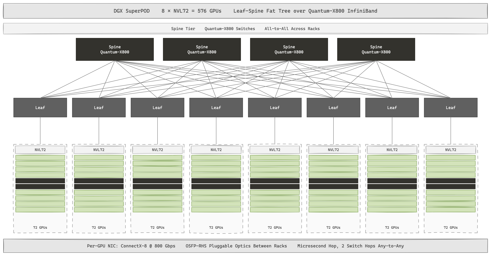
图 4：DGX SuperPOD 横向扩展体系——机架内部采用极低延迟铜缆 NVLink，跨机架集群通过 ConnectX 网卡与 Quantum-X800 InfiniBand 两层无阻塞胖树网络连接
当算力规模跨越单个机柜时，系统通过 ConnectX-8 网卡（800 Gbps）与 Quantum-X800 InfiniBand 交换机构建跨机柜横向 Scale-out 胖树网络。机柜内部纳秒级超高带宽主要承载通信频率极高、延迟敏感的张量并行（TP）与专家并行（EP All-to-All）；跨机柜微秒级光纤互联则承载流水线并行（PP）与数据并行（DP）。
3. Google TPU：2D 脉动阵列与全光拓扑动态重构
如果说 GPU 是通过海量指令调度硬件去“适应”多变算法，Google TPU 则走了截然相反的专用化路线：假设矩阵乘法是神经网络不可动摇的核心，并围绕固定的二维数据流构建专用硅片 。
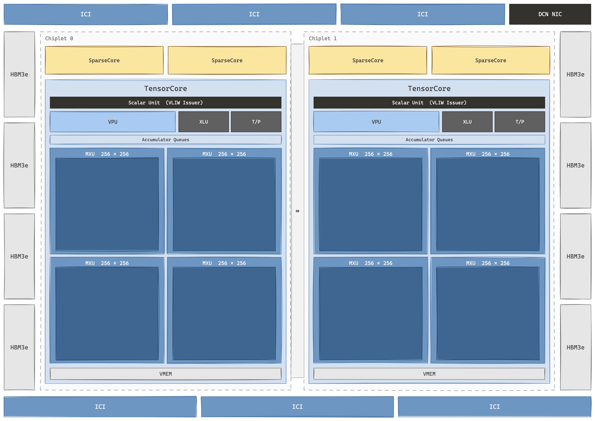
图 5：TPU Ironwood (v7) / v8t 封装微架构——两枚计算小芯片（Chiplet）经由中央 Die-to-Die 桥接，每枚 Chiplet 集成核心 TensorCore 矩阵计算引擎与用于大规模 Embedding 稀疏查找的 SparseCore
脉动计算引擎与专用解耦
TPU 的矩阵加速核心是脉动阵列（Systolic Array, MXU） 。在 TPU v7（Ironwood）与 v8t 中，芯片采用基于 VLIW（超长指令字）的控制架构。单个周期内，标量指令单元发射一条高达 322 位的宽指令束，以精确的时间节拍并行驱动 2D 向量计算单元（VPU）、转置/重排单元（XLU）以及四个 $256 \times 256$ 稠密脉动矩阵乘核心。
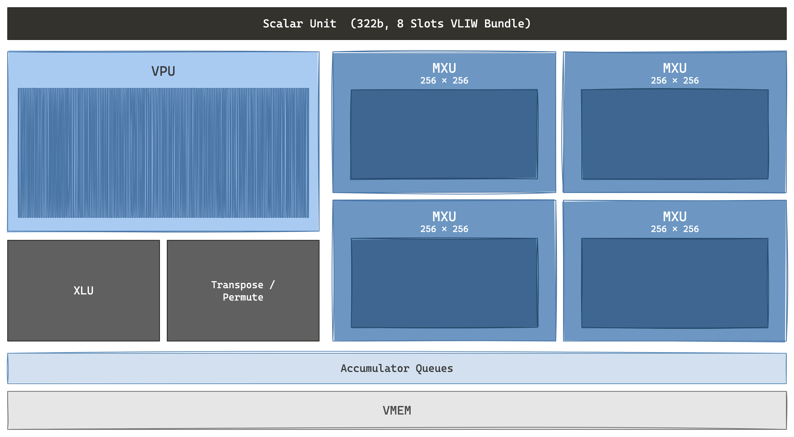
图 6：TPU TensorCore 内部微架构——VLIW 调度器严格同步向量处理单元（VPU）与脉动矩阵计算单元（MXU），中间部分和流出后直接送入大容量片上软件暂存显存（VMEM）
脉动阵列彻底颠覆了通用处理器的寄存器读写机制：权重数据预先加载至计算单元内部并保持静止（Weight-stationary），输入张量以微倾斜波前（Wavefront）节拍逐级沿横向流入，中间累加和沿纵向逐级下沉。操作数在相邻算术单元之间以流水线方式接力复用，单次片外访存即可完成数十次乘加运算，从而以极低的晶体管和功耗预算实现了超高算力密度。
与此同时，TPU 在微架构上将高稠密算力与稀疏运算彻底剥离：矩阵运算由 MXU 全力支撑；对于推荐系统中的大规模 Embedding 表查询及大模型离散 Token 操作，则由专门设计的 SparseCore 独立完成。SparseCore 拥有专用的细粒度内存流水线与跨芯片内存访问支持，有效避免了稀疏离散流量对稠密脉动阵列的周期污染。
3D Torus 环面拓扑与光路交换机（OCS）
TPU 的集群连接采用极为独创的全光路动态重构网络 ：
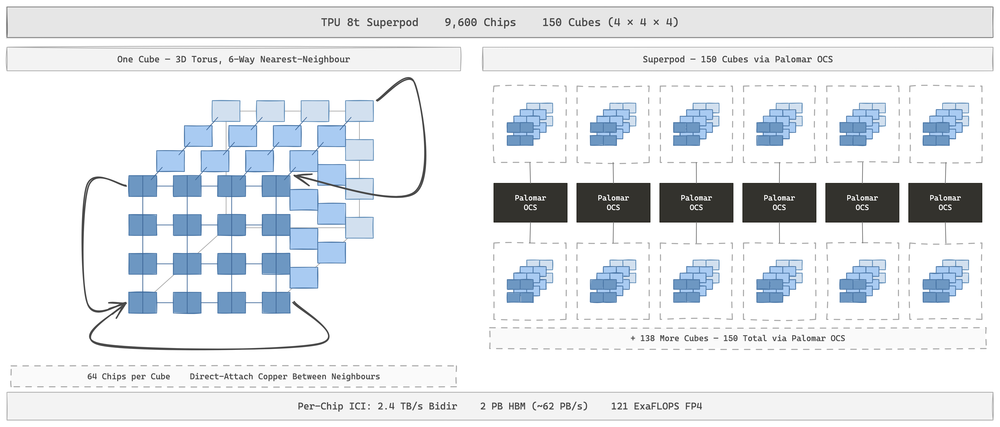
图 7：TPU 规模化互联体系——单机柜内部 64 颗芯片构建闭合 3D Torus 环面，跨机柜集群经由 Google 自研 Palomar 3D-MEMS 光路交换机（OCS）在物理光纤层动态重构逻辑拓扑
机柜内部 ：每 64 颗 TPU（$4 \times 4 \times 4$）通过芯片间互联端口（ICI）以直连铜缆连接成闭合的 3D Torus 环面拓扑。无需集中式交换机即可交付极高双向二分带宽；跨集群扩展 ：Google 研发了革命性的 Palomar 光路交换机（Optical Circuit Switch, OCS） 。OCS 内部利用微机电系统（3D-MEMS）微镜阵列，通过物理旋转微米级反射镜，直接在光学物理层将光纤射束重定向到目标机架。这使得数据中心能够在不插拔物理光纤、不引入昂贵电-光-电（O-E-O）转换芯片的前提下，根据当前运行模型（例如 1D Megatron 张量并行、还是 3D 网格并行）秒级重构底层拓扑，并在发生单机故障时动态“绕开”坏点，维持无损通信环路。
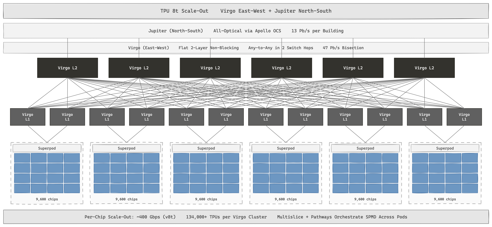
图 8：TPU 横向互联系统架构——东西向 TPU-to-TPU 张量流量通过超扁平无阻塞 Virgo 光网络两跳直达；存储与管控流量交由 Jupiter 数据中心网络独立承担
在更宏观的超算数据中心视角，TPU 集群采用了双平面分离体系：东西向分布式张量计算流量穿行在两层无阻塞扁平网络 Virgo （支持 134,000+ 颗 TPU 互联，聚合二分带宽超 47 Pb/s，任意芯片间两跳直达）；南北向模型检查点存取与通用集群交互则由数据中心通用骨干 Jupiter 承载。
在编译软件层面，Google 深度绑定 OpenXLA 与 JAX 。XLA 编译器将模型全图转化为静态高阶操作（HLO），并在编译阶段对张量生命周期与 VMEM 地址完成绝对编址。这消除了全部运行期动态内存分配开销，使整套硬件以极高的确定性逼近物理能效极值。
4. AMD Instinct GPU：Chiplet 模块化封装与极致 HBM 容量突围
面对 NVIDIA 构建的深厚软硬件壁垒，AMD 在 Instinct 系列（CDNA 架构）上打出了极其明确的差异化王牌：坚定押注台积电 Chiplet 先进多裸片立体封装，并在 HBM 显存容量与总线带宽上建立压倒性优势 。
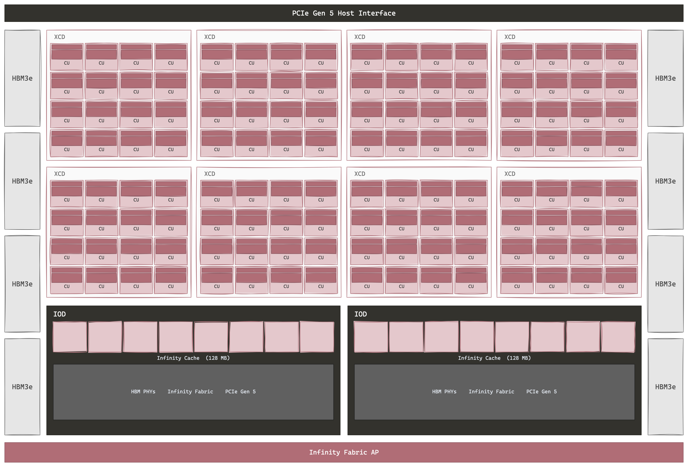
图 9：AMD Instinct MI355X (CDNA 4) 封装全貌——八个计算小芯片（XCD）通过台积电 SoIC 3D 混合键合垂直叠放在两个输入输出基片（IOD）之上，外围环绕 8 组高规格 12-Hi HBM3e
立体 Chiplet 堆叠微架构
最新的 MI355X 架构将模块化微架构推向巅峰：
3D 混合键合（SoIC） ：芯片物理上拆分为 8 个加速核心裸片（Accelerator Complex Die, XCD）与 2 个底层输入输出基片（I/O Die, IOD）。IOD 承载了 256 MB 超大容量片上 Infinity Cache、PCIe 控制器以及 HBM 物理接口；XCD 垂直通过铜-铜无焊料直接混合键合在 IOD 上方；显存规格碾压 ：通过率先采用业界最高密度的 8 组 12 层（12-Hi）HBM3e 堆栈，MI355X 交付了前所未有的 288 GB 物理显存容量 与 8.0 TB/s 显存带宽 。对比同时期 NVIDIA 主流产品，AMD 始终在单卡容纳大模型参数与 KV Cache 容量上维持领先；CDNA 计算核心 ：每个 XCD 内部包含数十个计算单元（Compute Unit, CU）。CU 内部由一个调度器同时驱动四个独立的 SIMD16 向量引擎，旁边紧密贴合专用矩阵乘核心（Matrix Core / MFMA），能够以单指令多数据波前（Wavefront 64）并发执行密集的低位宽 FP8 与 FP4 乘加。
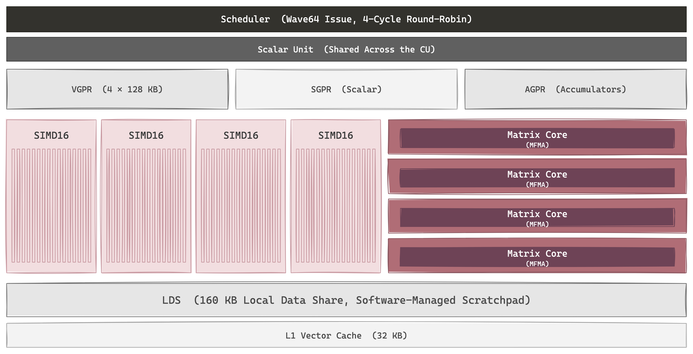
图 10：AMD 计算单元（CU）微架构细节——Wavefront 调度器向向量与 Matrix Core 分发任务，三个独立寄存器堆（VGPR / SGPR / AGPR）与片上 LDS 保证高吞吐本地复用
互联演进与开放超以太网生态
在扩展互联路线上，AMD 从传统的单机 8 卡 OAM 架构向机架级集群演进：
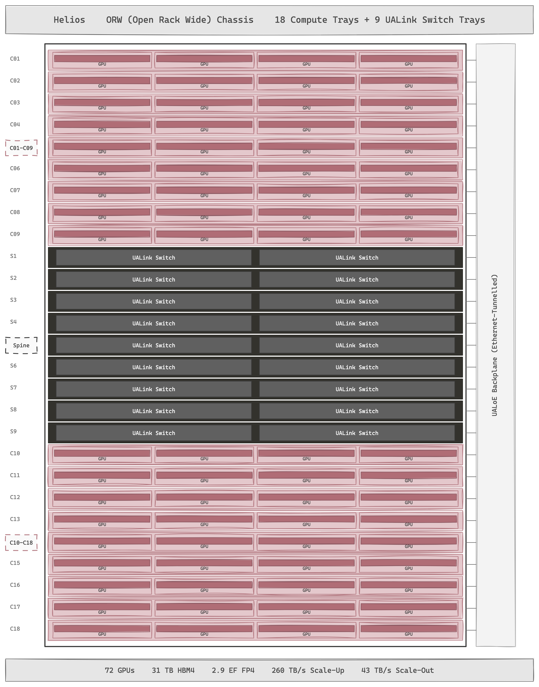
图 11：AMD Helios 机架级拓扑——72 颗 MI455X GPU 通过第四代 Infinity Fabric 交换机互联成全机架连贯域，交付高达 31 TB 的单机架共享 HBM 显存池
机架级连贯系统（Helios） ：AMD 推出了对标 NVL72 的机架系统 Helios，将 72 颗 MI455X 芯片通过第四代 Infinity Fabric 织入同一物理机柜，交付 31 TB 的聚合 HBM 容量以及高达 260 TB/s 的全机架对开带宽，大幅拉平了在超节点尺度上的硬件差距；横向扩展与 Pensando Vulcano 800 ：在数据中心 Scale-out 层面，AMD 坚定拥抱开放标准。通过整合自研的 Pensando Vulcano 800 网卡（PCIe Gen 6，800 GbE），全面支持 超以太网联盟（Ultra Ethernet Consortium, UEC 1.0） 规范。UEC 彻底重构了传统 RoCEv2 易拥塞丢包的弊端，通过无连接多路径数据喷洒、端到端纳秒级拥塞控制与选择性快速重传，在通用以太网基座上交付了比肩专用 InfiniBand 的低延迟通信性能。
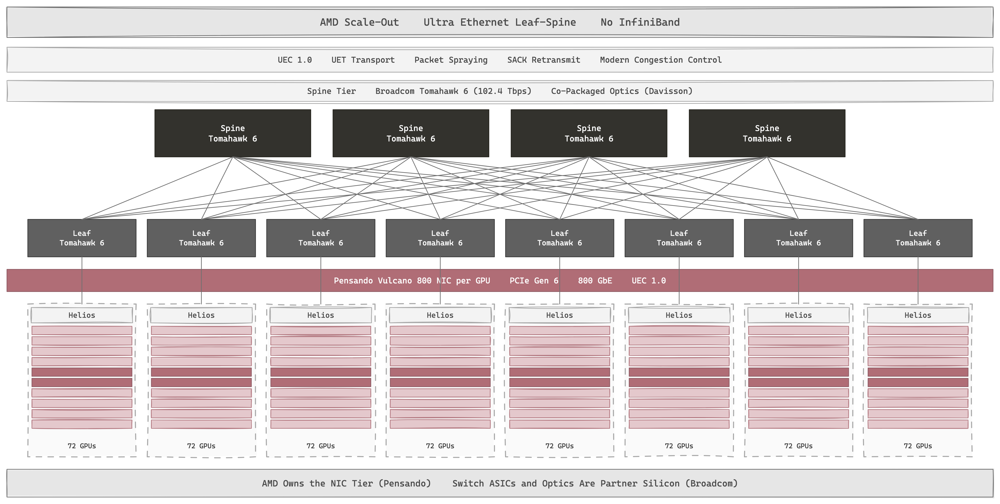
图 12：AMD 横向扩展架构——每颗 GPU 搭载 Pensando Vulcano 800 网卡，通过 Broadcom Tomahawk 6 共封装光学交换机（CPO）构建基于开放 UEC 标准的横向集群互联
在软件层面，AMD 通过开源 ROCm 平台与 HIP 翻译层，持续消除与 CUDA 的功能代差。如今在 PyTorch 与 vLLM 等主流大模型框架中，ROCm 已经实现了官方 Tier-1 级别原生支持，成为大规模云端训练与推理中除 NVIDIA 外最具可行性的商业替代方案。
5. Cerebras WSE：晶圆级巨芯与全片上 SRAM 极致带宽
如果说 Chiplet 封装是在同一基板上拼合小芯片，Cerebras 则将半导体工艺推向了极限假想：为什么不将整张 300 毫米晶圆做成一颗完整的芯片？
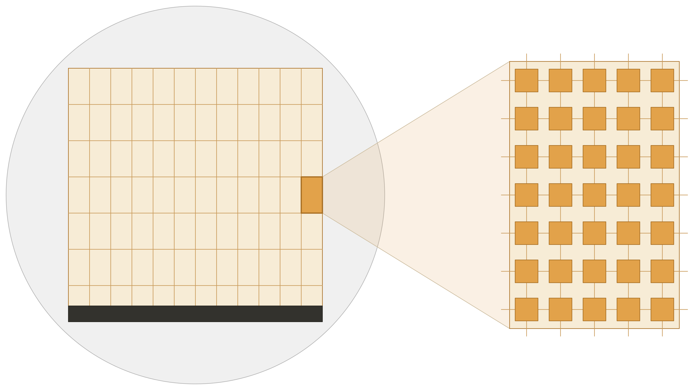
图 13：Cerebras WSE-3 晶圆级巨芯——左侧为整张 300 毫米晶圆切割出的最大正方形巨芯，84 个光刻视场边界通过片上金属布线直接打通；右侧局部放大为无缝连接的 900,000 个统一数据流计算核心网格
突破光刻极限与 21 PB/s 片上带宽
半导体制造的标准光刻机最大曝光面积约为 $858\ mm^2$。传统工艺在晶圆上曝光出数百颗独立裸片，并在其间通过划片槽（Scribe Lines）进行物理切割。一旦裸片内部出现微小的杂质缺陷，整颗小裸片即告报废。
Cerebras 颠覆了这一行业铁律：
晶圆级金属走线互联 ：在一整张 300 毫米晶圆上排列 84 个光刻视场（12 行 $\times$ 7 列），不仅不切断划片槽，反而在刻蚀过程中用顶层金属导线跨越划片槽无缝打通。在软件视角下，整张晶圆表现为一个由 900,000 个独立计算核心 构成的统一 2D Mesh 网格；硬件冗余容错机制 ：由于整张晶圆不可避免地存在半导体硅缺陷，Cerebras 在硬件上预留了 1.5% 的备用计算核心与布线走线。在工厂测试阶段，坏死核心及其走线被激光彻底熔断，系统自动重路由至相邻健康备用核心，使整片晶圆拥有接近 100% 的制造可用良率；全 SRAM 与 21 PB/s 访存极值 ：WSE-3 彻底抛弃了 HBM 与片外内存总线，整颗巨芯集成高达 44 GB 的超高密度片上 SRAM 。44 GB SRAM 划分为数百万个单周期访问的本地存储 Bank，紧邻各核心算术单元。全晶圆聚合片上访存带宽达到了人类半导体历史上的天文数字——21 PB/s（21,000 TB/s） ！相比传统 GPU 的几 TB/s，访存性能直接跃升数千倍。
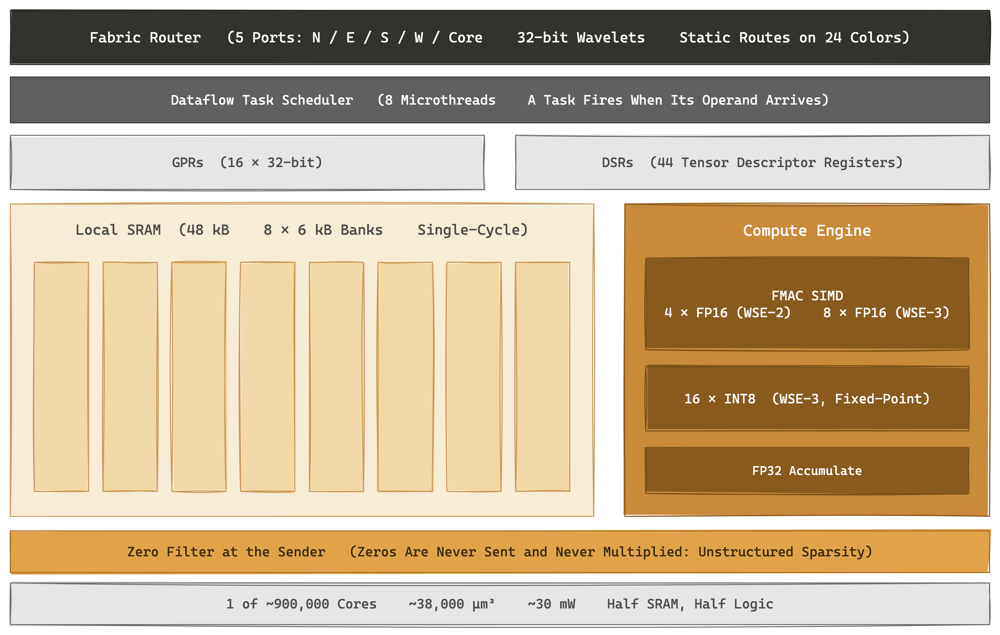
图 14：Cerebras 核心微架构特写——内置 5 端口数据流路由器，48 KB 单周期并发本地 SRAM，配合硬件级非结构化细粒度稀疏零值检测过滤器
权重流式模式（Weight Streaming）与系统边界
每个 Cerebras 核心均包含一个 5 端口高速数据流路由器、8 个微线程任务调度器、48 KB 本地 SRAM 以及专门的硬件零值过滤器（Zero Filter） 。当参与矩阵计算的张量中出现值为 0 的无意义元素时，发送端路由器在硬件层面直接过滤掉该数据包，计算核心不执行无效空乘加，从而以零额外软件开销榨取非结构化稀疏带来的性能红利。
为了在仅有 44 GB 片上 SRAM 的物理限制下运行千亿参数级大模型，Cerebras 采用了独特的 Weight Streaming（权重流式传输） 体系：
Cerebras Weight Streaming 计算模式:
- 模型参数全部存放在外置的高密度存储单元 MemoryX (最大 1.2 PB)
- 计算时，外置服务器将模型各层权重像波浪一样通过 100 GbE 光纤流水线式实时注入晶圆片上
- 晶圆内部 900,000 个核心常驻全部输入激活张量 (Activation)
- 权重到达各核心瞬间即被消费完成计算，不长久驻留片上显存
然而，晶圆级芯片的代价极其尖锐：单芯片系统功耗高达 23 kW ，必须采用极端精密的工业级闭环水冷与特殊机械外壳以防止晶圆在热应力下发生物理形变。由于单颗晶圆自身即为一个封闭的连贯域，集群扩展时系统退化为通用的以太网树状拓扑，无法像 NVLink 或 TPU ICI 那样在多芯片之间维持低延迟紧密耦合。
6. AWS Trainium：云厂商纵向全栈垂直整合与硅片级集合通信
AWS Trainium 代表了云计算巨头构建自研硬件的核心逻辑：不追求单一芯片的峰值性能指标，而是通过自研服务器、数据中心电力、先进封装、通信 ASIC 以及底层虚拟化（Nitro）的全栈垂直整合，实现总体拥有成本（TCO）与端到端吞吐的最大化 。
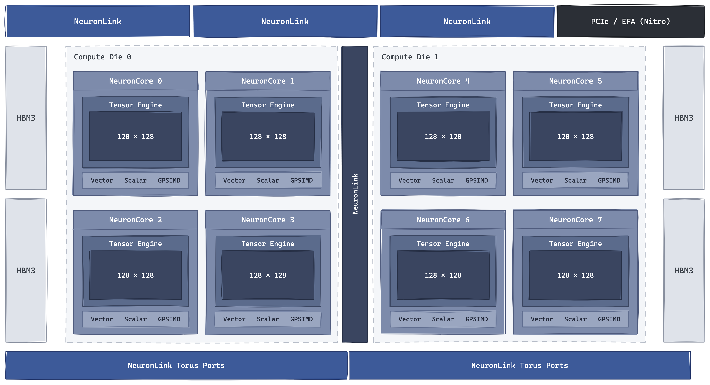
图 15：AWS Trainium2 封装微架构——双计算裸片经由 CoWoS 中介层集成，每片集成 4 个 NeuronCore-v3，外侧环绕 4 组 HBM3 显存，居中为 NeuronLink 高速环面互联端口
微架构与专用集合通信核心（CC-Core）
在 Trainium2（Trn2）与 Trainium3（Trn3）中，单芯片由两枚计算裸片通过中介层拼合而成，共承载 8 个独立的 NeuronCore-v3 引擎，配备 96 GB HBM3 显存（2.9 TB/s 带宽）：
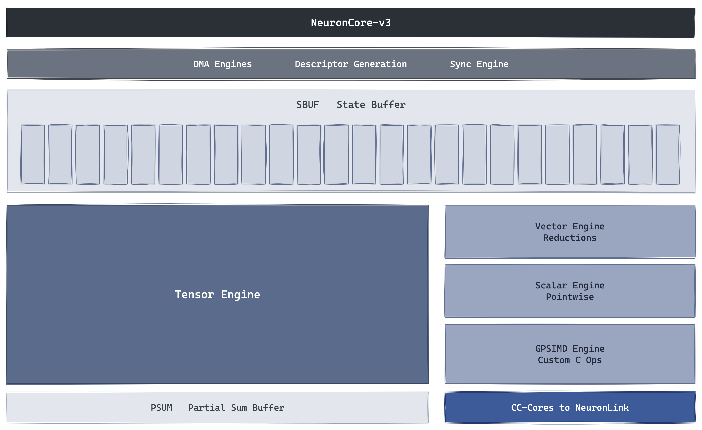
图 16：NeuronCore-v3 微架构特写——128x128 权重静态张量乘法引擎（Tensor Engine）位居中央，共享片上状态缓冲区（SBUF），专用的集合通信核心（CC-Core）与计算引擎并发并行作业
NeuronCore 的核心是一组 $128 \times 128$ 权重静态脉动张量引擎（Tensor Engine）。与通用 GPU 严重依赖通用 Warp 指令驱动通信不同，Trainium 在芯片内部集成了革命性的硅片级集合通信专用核心（Collective Communication Core, CC-Core） 。
CC-Core 是直接嵌入硬件执行流的微控制引擎，直接管理芯片边缘的高速互联通道。当大模型运行分布式 All-Reduce、Reduce-Scatter 或 All-to-All 等集合通信时，主张量计算单元继续在片上全速执行矩阵乘法，CC-Core 在硬件底层并行接管通信报文的分发、路由与环路累加，真正实现了通信与计算的 100% 硬件物理级重叠 。
互联演进：从 3D Torus 到全交换机架构
在集群扩展路径上，AWS 在两代芯片之间实施了激进的拓扑升级：
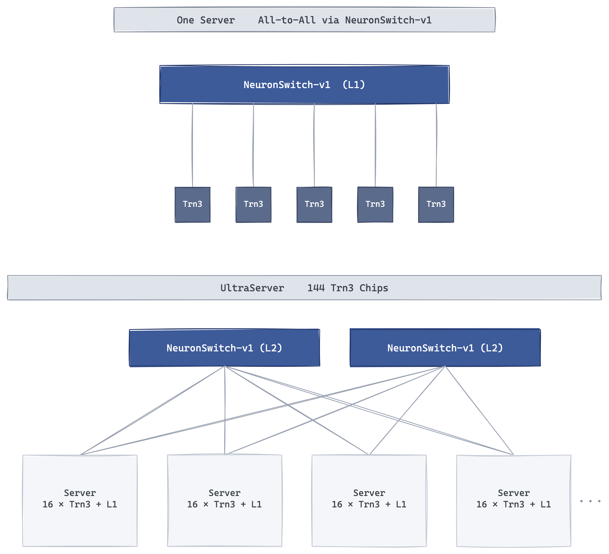
图 17：AWS Trainium 扩展拓扑演进——Trn3 彻底舍弃 Trn2 的环面拓扑，引入自研的 NeuronSwitch-v1 交换芯片，构建两级层次化全对全胖树架构，交付 144 卡超节点连贯域
Trn2 UltraServer ：通过自研的 NeuronLink 接口（1.28 TB/s），将 64 颗芯片以 3D Torus 环面 直接环状互联，构建了单机柜 83 PFLOPS 的高密度算力池；Trn3 UltraServer ：为了彻底攻克 MoE（混合专家模型）中全对全动态路由通信在环面拓扑上遭遇的高跳数等待延迟，Trn3 全面转向了全交换架构。AWS 推出了自研的 NeuronSwitch-v1 交换芯片。服务器内部通过一级交换机单跳直达，跨机柜通过二级交换机聚合，将整机扩展为 144 颗芯片的超大规模全对全交换域 （20.7 TB HBM3e，362 PFLOPS 稠密 FP8 算力）；Nitro EFA 与 SRD 乱序多路径协议 ：在跨数据中心横向网络上，Trainium 不依赖 InfiniBand，而是依托定制的 Elastic Fabric Adapter (EFA) 智能网卡，跑在 AWS 独创的 可扩展可靠数据报（Scalable Reliable Datagram, SRD） 传输协议之上。SRD 彻底颠覆了 TCP 或传统以太网单流按序传输的规则，将通信数据包打散并在数千条可用光纤路径上并发“喷洒”，并在接收端通过硬件完成极速乱序重组，完美规避了数据中心网络由于单链路拥塞导致的长尾队头阻塞（Head-of-Line Blocking）。
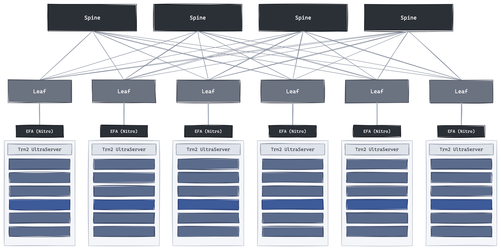
图 18：AWS Trainium 横向扩展体系——依托自研 Nitro EFA 网卡与 SRD 多路径乱序喷洒协议，支撑高达数十万颗芯片的 Project Rainier 超级集群稳定作业
凭借由 AWS 支撑的端到端机房基础设施与能源优势，Trainium 已成为 Anthropic（部署超百万颗 Trainium 芯片）等头部前沿实验室在千卡与万卡规模下追求极致性价比的核心基座。
7. Groq LPU：完全静态确定的指令级流式张量处理器
如果说现代处理器架构的共识是“通过更复杂的控制逻辑来应对运行时的不确定性”，Groq 则以最激进的态度背叛了这一共识：将一切运行时硬件仲裁、分支预测、缓存一致性与动态重传彻底扫地出门，将整颗芯片甚至整个机架退化为一台完全确定性的纳秒级精密钟表 。
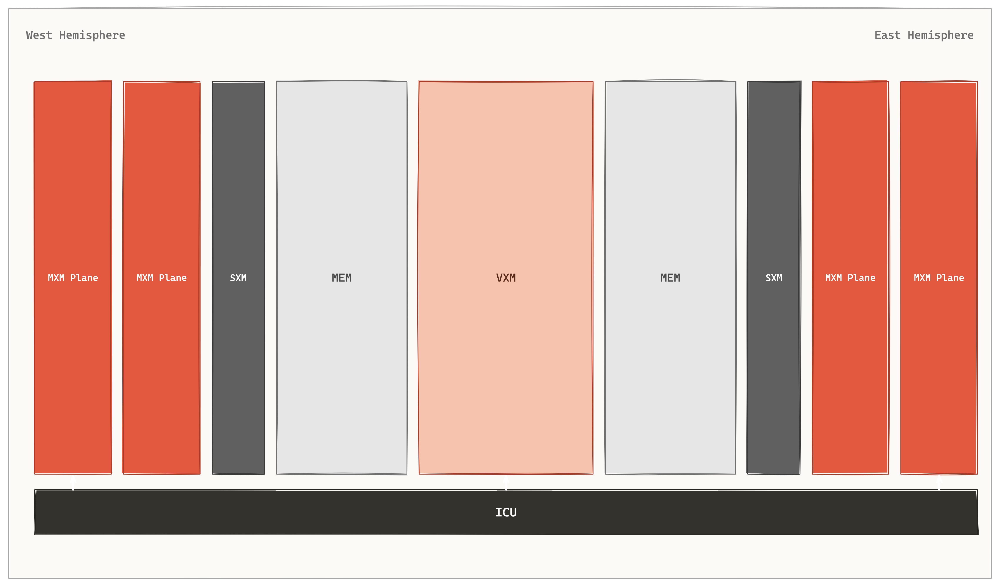
图 19：Groq LPU 物理版图——芯片以中央向量切片（VXM）为轴严格呈东西对称布局，外围排布矩阵计算切片（MXM）、交叉交换切片（SXM）与 SRAM 切片（MEM），指令控制单元沿南侧统一向北发射宽指令束
完全无运行时开销的数据流微架构
Groq LPU（Language Processing Unit，即张量流处理器 TSP）的微架构呈现极高的几何规则对称性：
单向数据传送带 ：芯片物理上拆分为 20 个超通道（Superlanes），共计 320 条并行数据流。中央为向量切片（VXM），两侧对称排列片上 SRAM 存储切片（MEM）、交叉开关切片（SXM）以及矩阵计算切片（MXM）。南侧唯一的指令控制单元（ICU）周期性向北侧所有切片发射 320 位的全局 VLIW 指令束；操作数逐周期寄存器跳跃 ：在 Groq 内部，不存在常规意义上的内存寻址访问。操作数像工厂装配线传送带一样，以每个时钟周期恰好跨越一个切片寄存器的速度向东或向西流动。计算单元何时到达、何时读取数据、何时完成累加，在编译期被精确推导至纳秒级；极致确定性（Determinism） ：硬件中没有指令缓存（I-Cache）、没有动态分支预测器、没有中断仲裁逻辑、没有硬件锁机制 。每一个晶体管均直接服务于张量数据的搬运与数学计算，硬件开销利用率无限逼近理论上限。
芯片即路由器（Chip is Router）与无网络协议栈扩展
在多芯片扩展维度，Groq 同样采取了震撼性的工程设计：
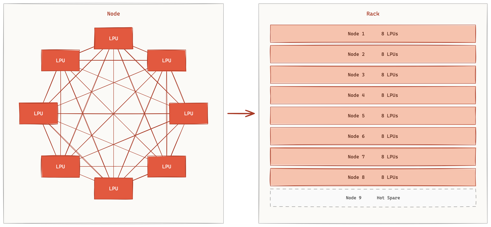
图 20：Groq 机架级扩展架构——8 颗 LPU 互联构成无外部交换机节点，72 颗芯片构建机架级 SRAM 计算池；通信跨越芯片完全由编译器静态编排（Scheduled, Not Routed），通过硬件计数器周期锁步与前向纠错（FEC）实现零运行时握手
在 Groq 集群中，根本不存在独立的网络交换机芯片，也不存在专用的网卡（NIC） ：
芯片自身即网络路由器 ：每颗 Groq 芯片边缘直接引出 11 条高速芯片间互联链路，单卡聚合互联带宽达 330 GB/s。8 颗芯片直接通过板载全连通互联构成一个虚拟的高基数路由节点；9 个节点（72 颗芯片，其中 1 节点热备）直接构成单机架系统；Scheduled, Not Routed 范式 ：数据在跨越芯片物理链路时，不包含任何网络报文头（Header），也不发生任何基于包地址的交换路由解析。编译器在生成执行二进制文件时，已经静态规划了每一个数据包在第几纳秒、从第几号芯片的哪个链路端口流向目标芯片；全同步时钟锁步与前向纠错（FEC） ：整个机架内所有的芯片通过硬件对齐计数器（Hardware-Aligned Counters）每隔 256 个周期强制交换同步一次，确保全机架数万条数据流水线始终维持绝对时间锁步。链路层全面采用前向纠错码（FEC）替代传统的丢包超时重传，因为任何一次运行期不可预知的重传都会瞬间粉碎整个静态流水线节拍。
然而，Groq 的工程局限同样直接来源于这种极端假设：由于单卡片上 SRAM 仅有数百兆（初代 230 MB，新一代 LP30 为 500 MB），运行哪怕一个 70B 参数的开源模型，都需要将整网权重切分并散布在整整一个机架（数十颗甚至上百颗 LPU）的片上 SRAM 中并发跑动。因此 Groq 的真正优势在于对推理首字延迟（TTFT）与每秒解码吞吐（Tokens/s）要求严苛的在线高吞吐场景，而在经济性显存容量与大规模训练灵活性上，它通常作为超大容量 GPU 机架的互补异构加速模块存在。
8. 全维度技术规格与系统级横向大对比
为了建立对当代前沿 AI 加速硬件的全局认知，本节将所有主流硬件路线的核心参数统一规整在单芯片与机架级两大系统基准对比表中。
[!NOTE]
表中算力数值均为厂商标称的稠密峰值性能（Dense Peak FLOPs） ；显存带宽采用该硬件所处原生主流层级（GPU/TPU/Trainium 为片外 HBM；Cerebras/Groq 为片上聚合 SRAM）；带有 * 标识的数据来源于工业分析机构测算或厂商披露参数换算；带有 ~ 标识为下一代前瞻发布规格；n/d 表示厂商未公开披露。
单芯片（Per-chip）基准对比表
厂商 / 平台
发布年份
芯片型号
存储规格与容量
原生显存带宽
旗舰稠密算力 (FP8 / FP4)
热设计功耗 (TDP)
纵向 Scale-up 双向互联带宽
NVIDIA 2023
H100 SXM5
80 GB HBM3
3.4 TB/s
1.98 PFLOPS (FP8)
700 W
900 GB/s (NVLink 4)
2024
H200 SXM
141 GB HBM3e
4.8 TB/s
1.98 PFLOPS (FP8)
700 W
900 GB/s (NVLink 4)
2024
B200 (双裸片)
192 GB HBM3e
8.0 TB/s
4.5 PFLOPS (FP8) / 9.0 PFLOPS (FP4)
1,000 W
1.8 TB/s (NVLink 5)
2025
B300
288 GB HBM3e
8.0 TB/s
7.5 PFLOPS (FP8) / 15 PFLOPS (FP4)
1,400 W
1.8 TB/s (NVLink 5)
2026~
Rubin*
288 GB HBM4*
~13 TB/s*
~17 PFLOPS (FP8) / ~50 PFLOPS (FP4)
~1,500 W*
3.6 TB/s (NVLink 6)
2027~
Rubin Ultra*
1 TB HBM4e*
~32 TB/s*
~33 PFLOPS (FP8) / ~100 PFLOPS (FP4)
~1,800 W*
3.6 TB/s (NVLink 6)
Google 2023
TPU v5p
95 GB HBM2e
2.8 TB/s
0.46 PFLOPS (BF16)
n/d
1.2 TB/s (ICI)
2025
TPU v7 (Ironwood)
192 GB HBM3e
7.4 TB/s
4.6 PFLOPS (FP8)
n/d
1.2 TB/s (ICI)
2026~
TPU v8t (Sunfish)
216 GB HBM3e
6.5 TB/s
12.6 PFLOPS (FP4)
n/d
n/d (ICI)
AMD 2023
MI300X
192 GB HBM3
5.3 TB/s
2.6 PFLOPS (FP8)
750 W
896 GB/s (Infinity Fabric 3)
2024
MI325X
256 GB HBM3e
6.0 TB/s
2.6 PFLOPS (FP8)
1,000 W
896 GB/s (Infinity Fabric 3)
2025
MI355X
288 GB HBM3e
8.0 TB/s
10 PFLOPS (FP8) / 20 PFLOPS (FP4)
1,400 W
1,075 GB/s (Infinity Fabric 4)
2026~
MI455X*
TBD
TBD
~40 PFLOPS (FP4)*
TBD
n/d (Infinity Fabric 4)
Cerebras 2021
WSE-2
40 GB SRAM (晶圆片上)
20 PB/s (片上聚合)
7.5 PFLOPS (FP16)
23 kW (系统)
(单晶圆即连贯域)
2024
WSE-3
44 GB SRAM (晶圆片上)
21 PB/s (片上聚合)
~15.8 PFLOPS (FP16)*
23 kW (系统)
(单晶圆即连贯域)
AWS 2022
Trainium 1
32 GB HBM2e
820 GB/s
0.19 PFLOPS (BF16/FP8)
n/d
n/d (NeuronLink)
2024
Trainium 2
96 GB HBM3
2.9 TB/s
1.3 PFLOPS (FP8)
~500 W*
1.28 TB/s (NeuronLink 3)
2025
Trainium 3
144 GB HBM3e
4.9 TB/s
2.5 PFLOPS (FP8)
n/d
~2.0 TB/s (NeuronLink 4)
Groq 2020
GroqChip (初代)
230 MB SRAM
80 TB/s (片上聚合)
0.188 PFLOPS (FP16)
215 W
330 GB/s (板载 11-Link)
2026~
Groq 3 LP30*
500 MB SRAM
150 TB/s (片上聚合)
~1.2 PFLOPS (FP8)*
n/d
2.5 TB/s (C2C Link)
机架与超节点级（Per-rack / Pod）基准对比表
厂商 / 系统
发布年份
系统标称型号
加速芯片数
聚合稠密算力
聚合加速存储容量
机架内 Scale-up 聚合 Fabric 带宽
单卡独立网卡带宽 (Scale-out)
机架总供电功耗
冷却散热方式
NVIDIA 2023
HGX H100
8
16 PFLOPS (FP8)
640 GB HBM3
7.2 TB/s
400 Gbps (CX-7)
~10 kW
风冷 (Air)
2024
HGX H200
8
16 PFLOPS (FP8)
1.1 TB HBM3e
7.2 TB/s
400 Gbps (CX-7)
~10 kW
风冷 (Air)
2024
GB200 NVL72
72
360 PFLOPS (FP8) / 720 PFLOPS (FP4)
13.4 TB HBM3e
130 TB/s (无源铜缆)
800 Gbps (CX-8)
~120 kW
强制冷板液冷 (Liquid)
2025
GB300 NVL72
72
540 PFLOPS (FP8) / 1,100 PFLOPS (FP4)
20.7 TB HBM3e
130 TB/s (无源铜缆)
800 Gbps (CX-8)
~120 kW
强制冷板液冷 (Liquid)
2026~
NVL144*
144
~1.2 EFLOPS (FP8) / ~3.6 EFLOPS (FP4)
~21 TB HBM4*
~260 TB/s*
1.6 Tbps (CX-9)
~250 kW*
强制冷板液冷 (Liquid)
Google 2023
TPU v5p Superpod
8,960
4.1 EFLOPS (BF16)
851 TB HBM2e
3D Torus (ICI)
400 Gbps (Jupiter)
n/d
强制冷板液冷 (Liquid)
2025
TPU v7 Ironwood Pod
9,216
42.5 EFLOPS (FP8)
1.8 PB HBM3e
Palomar OCS 全光拓扑
800 Gbps (Virgo)
n/d
强制冷板液冷 (Liquid)
2026~
TPU v8t Sunfish Pod
9,600
121 EFLOPS (FP4)
~2.0 PB HBM3e
OCS 全光重构网络
800 Gbps (Virgo)
n/d
强制冷板液冷 (Liquid)
AMD 2023
MI300X 8-GPU OAM
8
21 PFLOPS (FP8)
1.5 TB HBM3
7.2 TB/s
400 Gbps
~10 kW
风冷 (Air)
2024
MI325X 8-GPU OAM
8
21 PFLOPS (FP8)
2.0 TB HBM3e
7.2 TB/s
400 Gbps
~12 kW*
风冷 (Air)
2025
MI355X 8-GPU OAM
8
80 PFLOPS (FP8) / 160 PFLOPS (FP4)
2.3 TB HBM3e
8.6 TB/s
400 Gbps
~16 kW*
强制冷板液冷 (Liquid)
2026~
Helios (MI455X)
72
1.4 EFLOPS (FP8) / 2.9 EFLOPS (FP4)
31 TB HBM4*
260 TB/s (Infinity Fabric)
800 Gbps (Vulcano)
n/d
强制冷板液冷 (Liquid)
Cerebras 2024
Condor Galaxy 3
64 晶圆巨芯
~1.0 EFLOPS (FP16)*
2.8 TB SRAM + MemoryX (1.2 PB)
(晶圆内金属无缝直连)
1.2 Tbps Ethernet
~1.5 MW*
强制水冷 (Liquid)
AWS 2022
Trn1 Instance
16
3 PFLOPS (BF16)
512 GB HBM2e
2D Torus (NeuronLink)
~50 Gbps (Nitro EFA)
n/d
风冷 (Air)
2024
Trn2 UltraServer
64
83 PFLOPS (FP8)
6.1 TB HBM3
3D Torus (NeuronLink 3)
200 Gbps (EFAv3)
n/d
风冷 / 混合
2025
Trn3 UltraServer
144
362 PFLOPS (FP8)
20.7 TB HBM3e
NeuronSwitch-v1 全交换
400 Gbps (EFAv4)
n/d
强制冷板液冷 (Liquid)
Groq 2022
GroqRack
64 活跃卡 (72 安装)
12 PFLOPS (FP16)
14 GB SRAM
3.2 TB/s 对开带宽 (无外部交换机)
(无网卡，芯片直通)
n/d
风冷 (Air)
2026~
Groq 3 LPX
256
315 PFLOPS (FP8)
128 GB SRAM + 12 TB DDR5
640 TB/s 聚合芯片间带宽
(直连静态编排)
n/d
强制冷板液冷 (Liquid)
9. 现代 AI 体系结构核心趋势深度复盘
基于上述系统参数的横向审视，我们可以清晰抽象出定义未来五年 AI 计算系统演进的七大底层物理趋势 ：
1. 单芯片 FP8/FP4 峰值算力进入“百家争鸣的趋同收敛区”
观察 2024–2025 年的旗舰加速器：NVIDIA B200（4.5 PF FP8）、Google TPU v7 Ironwood（4.6 PF FP8）与 AMD MI355X（10 PF FP8），三者在单芯片峰值吞吐上的差距已被压缩在 2 倍左右。随着半导体先进制程逼近 2nm/1.8nm，在单颗芯片尺寸受制于物理光刻极限（~858 $mm^2$）的硬约束下，单纯在硅片上塞入更多乘法器的“单卡算力军备竞赛”已难以拉开质的代差。系统制胜的关键战场已经不可逆转地向机架级拓扑组织、内存层级带宽以及编译器协同 全面转移。
2. HBM 容量与带宽演进：AMD 的持久攻坚与 NVIDIA 的防御反击
在 HBM 物理容量的争夺上，AMD 凭借激进的内存控制器拓扑，在 2023–2025 年连续打出了漂亮的胜仗（MI300X 的 192 GB 对标 H100 的 80 GB；MI325X 的 256 GB 对标 H200 的 141 GB；MI355X 的 288 GB 对标 B200 的 192 GB）。更大的单卡显存意味着相同参数规模的大模型在部署推理时可以使用显著更少的芯片数量，并容纳更长的 KV Cache 上下文。NVIDIA 直到 2025 年底的 B300（288 GB）才拉平这一差距，并寄希望于 2026–2027 年的 Rubin Ultra（单封装 1 TB HBM4e）重新夺回主导权。
3. 机架级连贯域（Rack-scale Scale-up Domain）成为超级节点绝对分水岭
2024 年以前，数据中心加速卡通常以 8 卡单机（如 HGX H100/MI300X）为基本物理颗粒度，卡间通过高成本的网卡与跨节点网络交互。NVIDIA 推出的 GB200 NVL72 彻底重塑了游戏规则——将 72 颗 GPU 通过机柜铜缆背板直接拼装为一个纳秒级、高带宽（130 TB/s）的单机架共享内存域。这使过去只能局限在单机 8 卡内部的张量并行（TP）与长上下文自注意力通信直接扩张了 9 倍。AMD 迅速跟进 Helios（72 卡），AWS 升级 Trn3 UltraServer（144 卡），各大厂商争先恐后打破服务器机箱物理屏障。
4. TPU 的超大规模扁平化集群策略（平价单卡 $\times$ 万卡光路 Pod）
与 NVIDIA 专注于打造单价昂贵、机架内极高密度的超算单元不同，Google TPU 坚定践行了“单芯片中等算力 $\times$ 超大规模光学互联”路线。TPU v7 Ironwood Pod 仅凭单卡 4.6 PF 的性能，通过全光路 OCS 将多达 9,216 颗芯片 直接织入同一个低延迟 ICI 域，一举交付 42.5 EFLOPS 的惊人聚合算力。这种通过定制网络将数万颗芯片视作单台计算机编排的体系结构，成为大规模云厂商最强大的护城河。
5. 功耗墙击穿与风冷时代的物理终结
从 2023 年 Hopper 时代的 700 W，到 Blackwell/MI325X 的 1,000 W，再到 B300/MI355X 的 1,400 W，乃至 Rubin 时代的 1,800 W，单芯片功耗正在以极其恐怖的速度突破物理极限。在标准 42U 数据中心机柜中，单个机架的电力负荷从 10 kW 级狂飙至 GB200 NVL72 的 120 kW 。在这一热流密度下，空气的比热容已无法在有限物理空间内带走热量——风冷散热在百千瓦级机架面前宣告物理退役，冷板式液冷（Liquid Cooling）全面成为现代 AI 计算基础设施的强制刚性门槛 。
6. 横向扩展（Scale-out）网卡带宽维持以每代 2 倍速率指数狂飙
为了追赶激增的计算核心并降低全集群分布式反向传播时的梯度同步延迟，单卡搭载的网卡（NIC）带宽维持着每代翻番的节奏：400 Gbps（ConnectX-7 / Pollara 400）$\rightarrow$ 800 Gbps（ConnectX-8 / Vulcano 800）$\rightarrow$ 1.6 Tbps（ConnectX-9）。随着光电共封装技术（Co-Packaged Optics, CPO）与超以太网（UEC）规范落地，以太网正在以更开放的成本结构向传统昂贵封闭的 InfiniBand 发起最激烈的全面替代战。
7. 极端非主流架构的得失与历史定位
Cerebras 押注晶圆级芯片，以 21 PB/s 片上带宽彻底粉碎了内存墙，却受困于 44 GB 片上容量以及单机 23 kW 的极端散热系统；Groq 押注纯静态数据流，以纳秒级确定性调度和零硬件仲裁开销交付了令人惊叹的极速推理，但其对超长静态锁步流水线的苛刻要求使其在通用复杂大模型训练与动态控制流面前妥协巨大。这两种极端构型以鲜明的工程实践证明：在计算机体系结构中，从来不存在免费的算力午餐，一切极致优势的背面必然是对等维度的残酷工程妥协 。
10. 系统架构要点小结与工程思考
作为整套《AI 芯片与大模型计算系统》的终章，我们终于可以回答最初的那个宏大问题：为什么现代 AI 硬件演化成了今天的样子？
现代 AI 芯片全栈决策因果链路:
大模型张量特征 (GEMM / GEMV / KV Cache)
↓
内存墙物理天堑 (访存速度远落后于计算逻辑)
↓
算力单元高度专用化 (Tensor Core / 脉动阵列 / 确定性数据流)
↓
数值格式能效降维 (FP32 -> FP16/BF16 -> FP8 -> FP4 / 微缩放)
↓
存储层级极限逼近 (HBM3e -> 3D 堆叠 -> 晶圆级片上 SRAM)
↓
物理互联打破机箱边界 (单机 8 卡 -> 72卡全对全铜缆连贯域 -> 万卡全光动态重构)
↓
底层驱动与系统软件栈 (编译期全图融合、静态编排与通用可编程性的动态博弈)
思考题 1（架构推导：机架级全对全连贯域与传统 8 卡节点在分布式 MoE 与长上下文训练中的系统级收益） ：
拥有 64 个 Expert 的超大 MoE 模型分布式推理（涉及频繁的 All-to-All Token Dispatch / Combine） ；超长序列上下文（128K+ Tokens）训练（采用 Ring-Attention 环形自注意力机制） 。
参考解析提示 （点击展开 / 折叠）
MoE 全对全通信（All-to-All）在两种拓扑下的根本分化 ：8 卡单机架构困境 ：在 64-Expert MoE 模型中，每个 token 经由门控路由后，极大概率需要发送到其他服务器节点上的 Expert 执行 FFN 运算。在 8 卡节点架构下，87.5%（56/64）的通信流量必须穿过跨机柜以太网/InfiniBand 网络。传统网络受限于 50 GB/s 带宽与微秒级延迟，且极易由于突发的全对全流量导致交换机端口严重拥塞（Incast 现象），导致通信耗时直接淹没计算耗时，系统 MFU 往往跌破 30%；NVL72 机架级连贯域收益 ：72 颗 GPU 完全位于同一单跳 NVLink 交换域内，64 个 Expert 可以完全部署在同一个物理机柜内部。所有 Token Dispatch 与 Combine 流量 100% 封闭在 130 TB/s 的无源铜缆背板网络内。通信带宽直接暴涨 18 倍 （从 50 GB/s 跃升至 900 GB/s），延迟缩短两个数量级，且 Crossbar 拓扑天然避免了多跳拥塞，使 MoE 层的通信开销几乎可以被计算完全掩盖；Ring-Attention 长上下文训练在两种拓扑下的流水线瓶颈 ：8 卡架构流水线停顿 ：Ring-Attention 要求参与上下文并行的各 GPU 将各自负责的 $K$ 和 $V$ 分块沿着环路持续向相邻 GPU 传递。在 8 卡节点上，一旦环路跨越机器边界，跨节点网络链路（50 GB/s）便成为整个环流的最窄颈部。如果计算 $QK^T$ 的耗时短于通过 50 GB/s 网络传输 KV 块的耗时，计算核心必须发生强制停顿（Pipeline Stall）以等待数据到达；NVL72 算术密度完全掩盖 ：在 NVL72 内部，相邻卡间环路流动跑在 900 GB/s 的专用总线上。由于传输带宽极其充裕，传输时间仅为计算耗时的几分之一，系统真正实现了理想的“计算-通信完全重叠”，使千亿大模型处理数十万 token 级长上下文时的线性扩展效率接近 100%。
思考题 2（系统级深度剖析：完全确定性静态编译调度（Groq LPU）与硬件级高度动态乱序调度（GPU SIMT Warp）在在线服务真实尾延迟中的深层权衡） ：
参考解析提示 （点击展开 / 折叠）
Groq 完全确定性调度的极端优势与核心软肋 ：优势（极致平均延迟与零硬件抖动） ：由于硬件彻底剥离了分支预测、缓存一致性仲裁与动态重传，当执行静态编译对齐的请求时，Groq 的单步矩阵乘与向量运算耗时是绝对恒定且完全可预测的。没有线程上下文切换，没有缓存缺失（Cache Miss）带来的访存等待抖动。在固定批次与固定维度的自回归 Decode 场景下，能够交付业界近乎极限的 TPOT（例如数百 tokens/s）以及极低的平均 TTFT；软肋（长尾抖动与动态适应力缺失） ：现实在线服务充满变长输入与突发流量。由于 Groq 无法在硬件层面进行动态上下文切换或细粒度抢占，当遇到不规则序列长度时，系统必须在软件层引入强制的分桶对齐与 Pad 填充，导致物理有效利用率严重下滑。更关键的是，静态编译网络中任何微小的外部环境异常（如供电波动导致的时钟微小漂移）都会危及严格锁步，必须依赖复杂的外部软硬件队列防护，在突发高并发流量冲击下容易出现排队积压导致的 P99.9 尾延迟剧烈恶化；GPU SIMT 动态调度架构的韧性与代价 ：代价（纳秒级硬件调度开销与偶发抖动） ：GPU SM 内部为了维持庞大线程束的并发，消耗了相当比例的晶体管用于维护 Warp 状态、指令发射仲裁以及 L1/L2 缓存一致性。不同 Warp 之间的访存冲突（Bank Conflict）或全局显存通道拥塞可能引入微秒级的细微等待，导致单次算子执行时间存在微小起伏；优势（吞吐弹性与卓越的尾延迟控制） ：GPU 的硬件动态调度器天生为“混乱的不确定性”而生。当面对在线推理中剧烈变化的序列长度、连续批处理（Continuous Batching）中动态加入和退出的请求、以及 PagedAttention 中非连续物理显存块的按需映射时，SM 能够通过大量就绪 Warp 的并发切换无缝掩盖访存延迟。GPU 无需对整个生命周期进行脆弱的绝对排期，配合 vLLM 等动态调度运行时，能够在极高并发高负载下维持极其平滑且鲁棒的 P99/P99.9 尾延迟 SLA，交付无与伦比的全局工程通用性。
全课程圆满结课确认：从矩阵乘法数学原语到千卡集群与软件栈，再到当代最前沿芯片的全景横向解构，全套 10 门课程已完整构建闭环严密的 AI 芯片与计算系统知识大厦。
← 上一课